Extendable projection of social contact matrices
University of Canterbury
Nicholas Tierney
Telethon Kids Institute
The story so far
2008-2012: Undergraduate + honours in Psychology
2013 - 2017: PhD Statistics, QUT
- Exploratory Data Analysis (EDA)
- Bayesian / Geospatial statistics / Optimal placement
2018 - 2020: Research Fellow / Lecturer at Monash
- Design and improve tools for EDA
2020 - 2022: Research Software Engineer @ Telethon Kids Institute
- Maintain and design tools for data analysis
visdat::vis_dat(airquality)
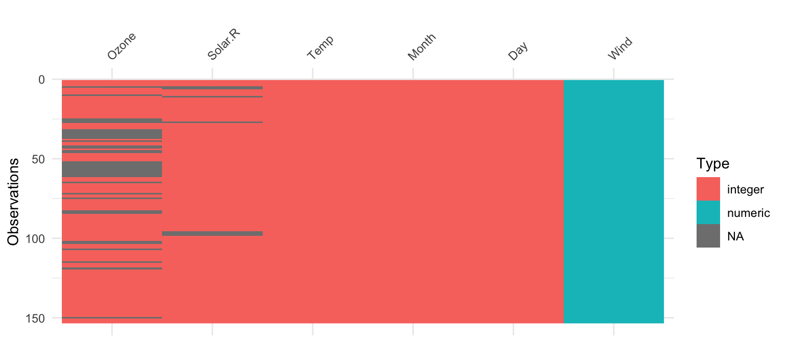naniar::gg_miss_upset(airquality)
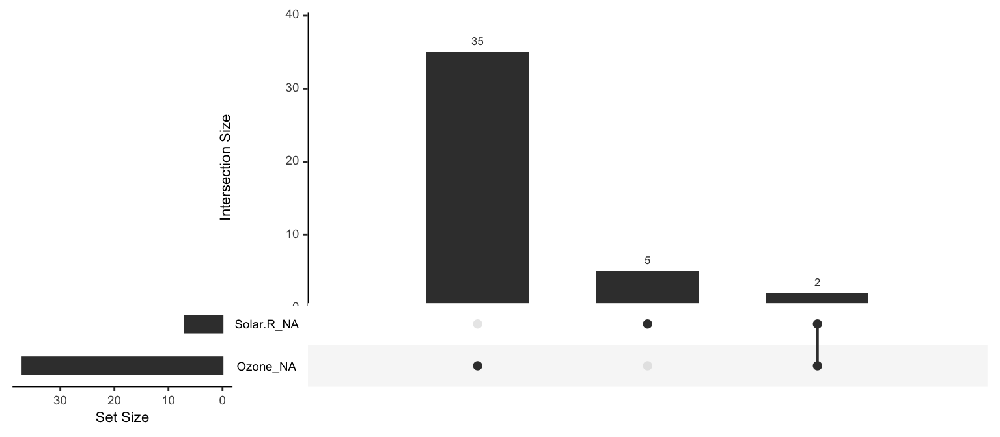brolgar - take spaghetti
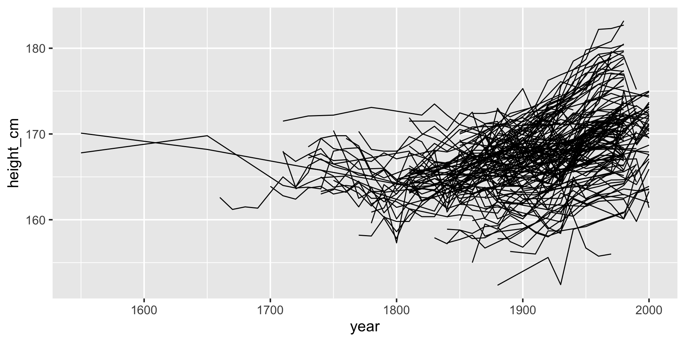brolgar - spread spaghetti
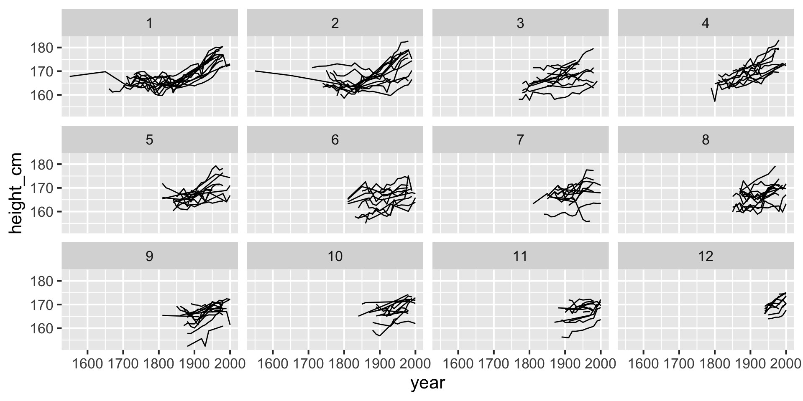
greta is R code
stan
data {
real alpha;
real beta;
real<lower=0> sigma2;
int<lower=0> J;
array[J] int y;
vector[J] Z;
array[J] int n;
}
transformed data {
real<lower=0> sigma;
sigma = sqrt(sigma2);
}
parameters {
real theta1;
real theta2;
vector[J] X;
}
model {
array[J] real p;
theta1 ~ normal(0, 32); // 32^2 = 1024
theta2 ~ normal(0, 32);
X ~ normal(alpha + beta * Z, sigma);
y ~ binomial_logit(n, theta1 + theta2 * X);
}JAGS
for(j in 1 : J) {
y[j] ~ dbin(p[j], n[j])
logit(p[j]) <- theta[1] + theta[2] * X[j]
X[j] ~ dnorm(mu[j], tau)
mu[j] <- alpha + beta * Z[j]
}
theta[1] ~ dnorm(0.0, 0.001)
theta[2] ~ dnorm(0.0, 0.001)greta
google tensorflow
- automatic differentiation
- efficient linear algebra
- highly parallel

extendable
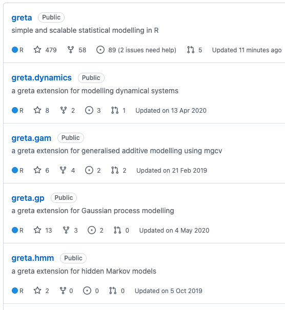greta.gp
greta.gpextendsgretato let you define Gaussian processes as part of your model. It provides a syntax to create and combine GP kernels, and use them to define either full rank or sparse Gaussian processes.
Define: Research Software Engineer
A Research Software Engineer (RSE) combines professional software engineering expertise with an intimate understanding of research.
– (from https://society-rse.org/about/)
What sorts of things does an RSE do?
Create software to solve research problems
Develop tools that abstract the right components to facilitate research
Help researchers to find and learn good tools
Support researchers with (computational) reproducibility
(adapted from Heidi Seibold’s UseR2021 Keynote talk)
What this talk is about
Explain how I came to help write software for infectious disease modelling
Touch on the overall approach for methods (not enough time). The majority of my role was on software and interface design.
Instead, I’ll discuss why we needed our own method & software design decisions
Advocate for contributions of software design + statistical thinking: the way of the research software engineer, so to speak.
Joining an infectious disease team
August, 2021: Australia is working on the plan to reopen, part of “The Doherty Report”
They need more hands to help with data analysis and software development
I joined to assist for ~4 months
Helped develop pipelines + software for disease modelling, establish code base for people to contribute
Soliloquy
Infectious Disease Modelling
- Diseases like COVID19 and Influenza spread through face to face social contact
Describe which 3 people had contact:
James has had contact with Luke
Nick hasn’t had contact with either
Example: visually
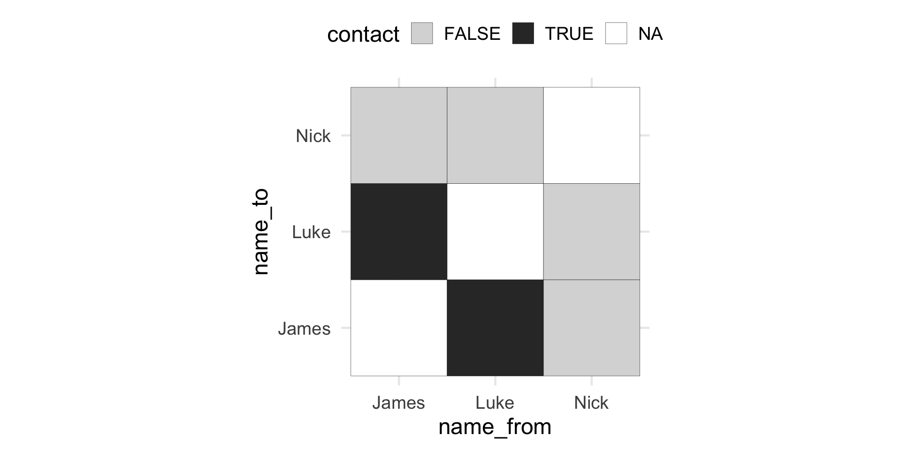Example: matrix
James Luke Nick
James NA TRUE FALSE
Luke TRUE NA FALSE
Nick FALSE FALSE NALogical –> Numeric
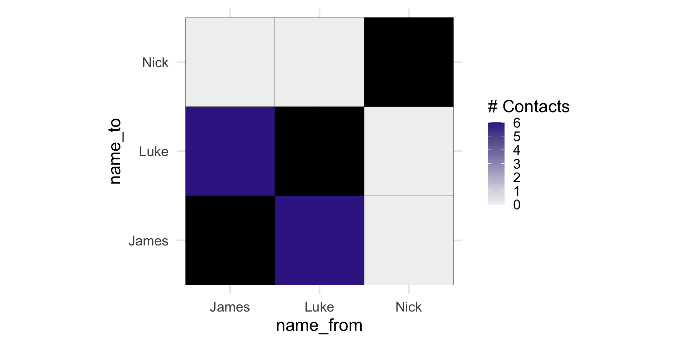People –> Age groups
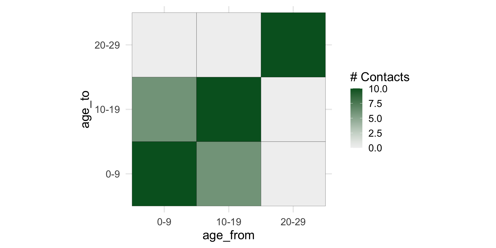What do you do with this?
Well, if we know how many times people have contact, then we can have an idea of which age groups will spread COVID
Simulate how many COVID cases would get transmitted
Explore how vaccination reduces transmission
Do this for different areas in Australia
Do we know how much contact people have?
We don’t. Well, not in Australia. Yet.
You need to conduct a surveys where people diary the amount and manner of daily contacts they have.
Mossong et al have this for 8 countries in Europe
Referred to as the POLYMOD study
Method of Mossong et al
- Random weekday: record every person in contact with.
- Physical contact:
- skin-to-skin contact (kiss or handshake)
- Non-physical contact:
- two-way conversation with 3+ words in physical presence of a person
Method of Mossong et al
- Participants provide info on:
- age and sex of each contact person
- location (home, work, school, leisure, transport, or other)
- time spent together
- frequency of usual contacts with this individual
Contact surveys are 💰 💰 💰
- Part of why we don’t have them in Australia
- Can we get a contact matrix for a country not on the list?
- We need to have a best guess from existing surveys
Synthetic contact matrices
- Pre-existing statistical methodologies project empirical contact matrices to new countries.
- New projected contact matrices: “synthetic contact matrices”
- Use existing contact surveys (e.g., Mossong)
- Use setting-specific survey data on household, school, classroom, and workplace composition
- Combine with empirical data on contact patterns in Europe using statistical models
Prem et al
- Prem et al. have one of the most widely used approaches to synthetic contact matrices
- Extensively applied across infectious diseases applications
- Initially provided 155 matrices for 155 countries (177 later in 2020)
Brief explainer of Prem
\(X^{L}_{i,\alpha} \sim Poisson(\mu_{i, \alpha}^{L})\)
\(X^{L}_{i,\alpha}\) is the number of contacts made by individual \(i\) at a particular location \(L\) with someone in age group \(\alpha\) is modelled to be Poisson with mean \(\mu_{i}^{L}\).
the ages of individual \(i\), \(\alpha_i\), and their contact, \(\alpha\) are broken into 5 year age intervals
\(L\) denotes contact location: L = … H (Home), W (Work), S (School), O (other)
Main thrust: Contact matrices are projected because the age distribution of population is included in \(\mu\)
Brief explainer of Prem
Core ideas:
- Build a model from the POLYMOD study, predicting number of contacts
- Incorporate key age information for different locations (home, work, school, other)
- Extrapolate the number of contacts to different countries, using age information from those countries
- Create a new contact matrix for a given country
Populations are different
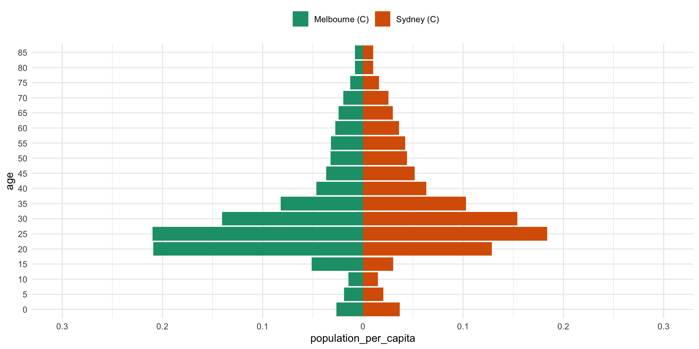Populations are different
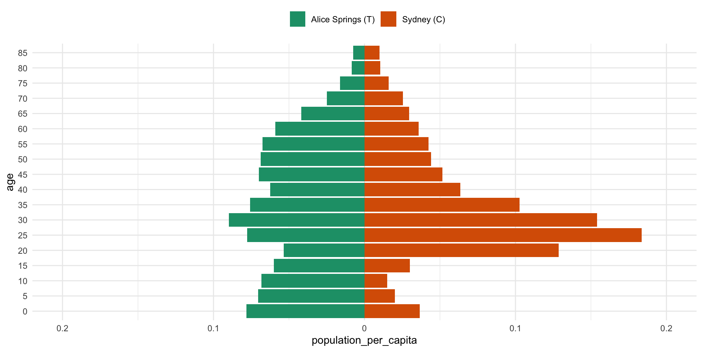What we want
- We want to be able use a population age distribution
# A tibble: 18 × 4
lga lower.age.limit year population
<chr> <dbl> <dbl> <dbl>
1 Fairfield (C) 0 2020 12261
2 Fairfield (C) 5 2020 13093
3 Fairfield (C) 10 2020 13602
4 Fairfield (C) 15 2020 14323
5 Fairfield (C) 20 2020 15932
6 Fairfield (C) 25 2020 16190
7 Fairfield (C) 30 2020 14134
8 Fairfield (C) 35 2020 13034
9 Fairfield (C) 40 2020 12217
10 Fairfield (C) 45 2020 13449
11 Fairfield (C) 50 2020 13419
12 Fairfield (C) 55 2020 13652
13 Fairfield (C) 60 2020 12907
14 Fairfield (C) 65 2020 10541
15 Fairfield (C) 70 2020 8227
16 Fairfield (C) 75 2020 5598
17 Fairfield (C) 80 2020 4006
18 Fairfield (C) 85 2020 4240What we want
- Input population age distribution and get out a contact matrix.
How do we extend this method?
Code is provided, but a few key issues:
It was code not written for reuse (code vs software)
No clear interface on how to get inputs for a given country or region.
Challenging to see which bits of code matched which methods
Australia was in original 155 countries, not in the new updated 177!
Building our own extension
Nick Golding wrote a new method that was able to be more flexible, using GAMs instead of Bayesian approach.
I was tasked with writing software from initial model fitting code, with guidance from Nick
Named the package,
conmat, (repo), creating a home for code for others to contribute to.In R package form, this made it easier for us to develop and extend software on demand for our needs
Demonstration of conmat
# A tibble: 18 × 4
lga lower.age.limit year population
<chr> <dbl> <dbl> <dbl>
1 Fairfield (C) 0 2020 12261
2 Fairfield (C) 5 2020 13093
3 Fairfield (C) 10 2020 13602
4 Fairfield (C) 15 2020 14323
5 Fairfield (C) 20 2020 15932
6 Fairfield (C) 25 2020 16190
7 Fairfield (C) 30 2020 14134
8 Fairfield (C) 35 2020 13034
9 Fairfield (C) 40 2020 12217
10 Fairfield (C) 45 2020 13449
11 Fairfield (C) 50 2020 13419
12 Fairfield (C) 55 2020 13652
13 Fairfield (C) 60 2020 12907
14 Fairfield (C) 65 2020 10541
15 Fairfield (C) 70 2020 8227
16 Fairfield (C) 75 2020 5598
17 Fairfield (C) 80 2020 4006
18 Fairfield (C) 85 2020 4240Extrapolate to a new population
synthetic_fairfield <- extrapolate_polymod(
population = fairfield,
age_breaks = c(seq(0, 75, by = 5), Inf) # default
)
synthetic_fairfield$home
[0,5) [5,10) [10,15) [15,20) [20,25) [25,30)
[0,5) 0.52225045 0.42772873 0.21283565 0.14434536 0.20942596 0.39954185
[5,10) 0.45229509 0.73155865 0.48015885 0.17798171 0.11958681 0.20404561
[10,15) 0.23695842 0.50554433 0.82947883 0.43734849 0.15522299 0.11407950
[15,20) 0.17147497 0.19994927 0.46665698 0.74816029 0.37937474 0.14303611
[20,25) 0.26738554 0.14439005 0.17800644 0.40773495 0.65491876 0.36315835
[25,30) 0.51470480 0.24858204 0.13200057 0.15511141 0.36642455 0.59446710
[30,35) 0.64885390 0.50468202 0.23824728 0.12073041 0.14622967 0.32795867
[35,40) 0.44815968 0.61072705 0.46263282 0.20867918 0.10993868 0.12785844
[40,45) 0.23061854 0.39239628 0.52470595 0.38051685 0.17882956 0.09133537
[45,50) 0.15818462 0.20075737 0.33771549 0.43295654 0.32838150 0.15139808
[50,55) 0.16956785 0.13906594 0.17506225 0.28020307 0.37441396 0.28145647
[55,60) 0.19784430 0.14490630 0.11757654 0.13946145 0.23228161 0.31151190
[60,65) 0.17205902 0.15234685 0.10834506 0.08142092 0.09958903 0.16925251
[65,70) 0.10529222 0.11714743 0.09769239 0.06283989 0.04710051 0.06047478
[70,75) 0.05620572 0.06807519 0.06932558 0.05197228 0.03366845 0.02813751
[75,Inf) 0.05462953 0.06596067 0.06938618 0.06478422 0.05762396 0.05109899
[30,35) [35,40) [40,45) [45,50) [50,55) [55,60)
[0,5) 0.54668051 0.41566301 0.22295266 0.14814184 0.15310064 0.17741097
[5,10) 0.44963277 0.59897570 0.40114075 0.19881010 0.13277237 0.13740346
[10,15) 0.22348191 0.47771931 0.56475774 0.35212125 0.17597613 0.11738304
[15,20) 0.12083736 0.22992470 0.43700885 0.48167677 0.30054137 0.14856244
[20,25) 0.15730031 0.13018667 0.22073193 0.39264458 0.43161143 0.26593726
[25,30) 0.35596044 0.15276855 0.11375052 0.18265426 0.32737135 0.35985499
[30,35) 0.51683931 0.30446998 0.11888059 0.08526112 0.14170491 0.25998134
[35,40) 0.27658113 0.43813051 0.24418943 0.09362465 0.07099459 0.12208475
[40,45) 0.10360463 0.23427018 0.38606992 0.22087070 0.09057194 0.07019712
[45,50) 0.07670510 0.09272253 0.22800431 0.40591611 0.24712209 0.10152456
[50,55) 0.13223246 0.07292902 0.09697921 0.25632536 0.47261167 0.28181041
[55,60) 0.24427100 0.12627375 0.07567994 0.10602973 0.28374850 0.51778596
[60,65) 0.24183581 0.20747080 0.11204127 0.06845342 0.09762507 0.26876938
[65,70) 0.11349996 0.17593283 0.15122163 0.08001636 0.05011610 0.07706562
[70,75) 0.04102133 0.08178507 0.12454133 0.10511690 0.05832806 0.03995687
[75,Inf) 0.04673838 0.05263538 0.08441655 0.13818221 0.17299000 0.16058534
[60,65) [65,70) [70,75) [75,Inf)
[0,5) 0.16407274 0.11863470 0.08236370 0.05039887
[5,10) 0.15361935 0.13957310 0.10548669 0.06434752
[10,15) 0.11502596 0.12254737 0.11310364 0.07126792
[15,20) 0.09223439 0.08411023 0.09047425 0.07100034
[20,25) 0.12124893 0.06775611 0.06299207 0.06787406
[25,30) 0.20791702 0.08777801 0.05311741 0.06072976
[30,35) 0.27371143 0.15178349 0.07134744 0.05117765
[35,40) 0.21330812 0.21372423 0.12921734 0.05235553
[40,45) 0.11051432 0.17624263 0.18877757 0.08055685
[45,50) 0.06970126 0.09626774 0.16448049 0.13612314
[50,55) 0.10310669 0.06254020 0.09466717 0.17675871
[55,60) 0.28581291 0.09683207 0.06529649 0.16521227
[60,65) 0.48972353 0.26742984 0.09969581 0.11244076
[65,70) 0.22633587 0.43165632 0.24663000 0.08078779
[70,75) 0.06487548 0.18962956 0.34860879 0.11381074
[75,Inf) 0.11622229 0.09866609 0.18077786 0.29067053
$work
[0,5) [5,10) [10,15) [15,20) [20,25)
[0,5) 0.0022889733 0.003423244 0.002590018 0.003560133 0.008462593
[5,10) 0.0036198561 0.008421614 0.006521951 0.009715289 0.023191559
[10,15) 0.0028835701 0.006866760 0.020788387 0.030765937 0.050918315
[15,20) 0.0042292570 0.010914407 0.032827687 0.156786211 0.189313700
[20,25) 0.0108046547 0.028001669 0.058392046 0.203465870 0.526057581
[25,30) 0.0220860859 0.041058849 0.061530292 0.164877417 0.494028796
[30,35) 0.0323940376 0.046816195 0.057570194 0.136606958 0.384747754
[35,40) 0.0347890448 0.043171703 0.048546494 0.110577937 0.303282142
[40,45) 0.0337331570 0.039475272 0.043806208 0.099519067 0.267799204
[45,50) 0.0325507703 0.038630343 0.043800103 0.100170510 0.264594634
[50,55) 0.0260671431 0.033627416 0.039557418 0.090400234 0.234147863
[55,60) 0.0144329012 0.021857581 0.027689495 0.063182811 0.160062116
[60,65) 0.0054460832 0.010197205 0.014878919 0.035027916 0.085195405
[65,70) 0.0016839836 0.003812222 0.006723067 0.017526914 0.040813152
[70,75) 0.0005571802 0.001408888 0.002924624 0.008916573 0.021968254
[75,Inf) 0.0004578116 0.001238400 0.002681836 0.008911273 0.025447168
[25,30) [30,35) [35,40) [40,45) [45,50) [50,55)
[0,5) 0.01714442 0.02729303 0.03226644 0.03261185 0.03048420 0.02353569
[5,10) 0.03370267 0.04170962 0.04234101 0.04035497 0.03825564 0.03210557
[10,15) 0.05317663 0.05400228 0.05012960 0.04715002 0.04566846 0.03976392
[15,20) 0.15204184 0.13672798 0.12183582 0.11429379 0.11144261 0.09696186
[20,25) 0.48962517 0.41387594 0.35913924 0.33054847 0.31637485 0.26991754
[25,30) 0.81939328 0.74217743 0.62371897 0.55316890 0.51096042 0.42444651
[30,35) 0.68379375 0.81785258 0.70732003 0.59949001 0.53291884 0.43210415
[35,40) 0.52201671 0.64253092 0.70590089 0.61500939 0.53215580 0.42493509
[40,45) 0.44416400 0.52245654 0.59002701 0.63724566 0.57227119 0.45272364
[45,50) 0.42352379 0.47943997 0.52702825 0.59075421 0.64010794 0.52545090
[50,55) 0.36491653 0.40321959 0.43651353 0.48475035 0.54501964 0.55225949
[55,60) 0.24470375 0.26708581 0.28645281 0.31324422 0.34223205 0.35597879
[60,65) 0.12595531 0.13600353 0.14434397 0.15425962 0.16231738 0.16200767
[65,70) 0.05710181 0.06037204 0.06298318 0.06574750 0.06715548 0.06539486
[70,75) 0.03053628 0.03151157 0.03217634 0.03322203 0.03390713 0.03323248
[75,Inf) 0.04193378 0.05066108 0.05940099 0.07045842 0.08195126 0.08298144
[55,60) [60,65) [65,70) [70,75) [75,Inf)
[0,5) 0.01294227 0.005193298 0.001897376 0.0008164903 0.0004223574
[5,10) 0.02072586 0.010282378 0.004542000 0.0021831579 0.0012081130
[10,15) 0.02764393 0.015796400 0.008433554 0.0047714811 0.0027545672
[15,20) 0.06730600 0.039679956 0.023459504 0.0155221258 0.0097663208
[20,25) 0.18325377 0.103724794 0.058711481 0.0411015606 0.0299736900
[25,30) 0.28267898 0.154728890 0.082882199 0.0576457690 0.0498371636
[30,35) 0.28426349 0.153929728 0.080735517 0.0548073372 0.0554729254
[35,40) 0.27695004 0.148405173 0.076512337 0.0508374082 0.0590851640
[40,45) 0.29055045 0.152157300 0.076626023 0.0503573700 0.0672369135
[45,50) 0.32769070 0.165276270 0.080794809 0.0530558007 0.0807300968
[50,55) 0.35354734 0.171104362 0.081606656 0.0539367311 0.0847892539
[55,60) 0.28604618 0.143802323 0.067617009 0.0444416031 0.0585753017
[60,65) 0.13522714 0.093997965 0.049842319 0.0310805956 0.0268138913
[65,70) 0.05381427 0.042183417 0.042093689 0.0277657490 0.0132369347
[70,75) 0.02719514 0.020225207 0.021348606 0.0206680485 0.0058654503
[75,Inf) 0.05693485 0.027715678 0.016166261 0.0093167272 0.0006243844
$school
[0,5) [5,10) [10,15) [15,20) [20,25)
[0,5) 1.2021340996 0.317825354 0.049959248 0.028275314 0.0404147758
[5,10) 0.3342921423 4.435756795 0.377181652 0.049066948 0.0662818159
[10,15) 0.0556216223 0.394413411 6.575836860 0.492781204 0.1053605801
[15,20) 0.0335896386 0.055123081 0.521764141 5.435708139 0.4447114202
[20,25) 0.0515997495 0.080029179 0.120825282 0.477793163 0.8179480013
[25,30) 0.0797368643 0.135391245 0.102180059 0.129335108 0.2111926244
[30,35) 0.0919225636 0.188828745 0.152072154 0.100952582 0.0617048921
[35,40) 0.0848564787 0.169481699 0.172489949 0.128770320 0.0442066219
[40,45) 0.0815304618 0.146580147 0.152881308 0.149948139 0.0579202572
[45,50) 0.0804757692 0.162966854 0.159741569 0.153739728 0.0740284298
[50,55) 0.0651096894 0.160046410 0.173300912 0.140189533 0.0628080794
[55,60) 0.0398351464 0.095596640 0.111659514 0.085069486 0.0309716513
[60,65) 0.0170656676 0.038438957 0.036559419 0.025562512 0.0097347174
[65,70) 0.0042452730 0.013843126 0.010361325 0.004860531 0.0023779195
[70,75) 0.0006917767 0.004350788 0.004036260 0.001238089 0.0004797369
[75,Inf) 0.0011480695 0.003280569 0.002814461 0.001084037 0.0003831141
[25,30) [30,35) [35,40) [40,45) [45,50)
[0,5) 0.0618960890 0.0774477489 0.0787034196 0.078820348 0.0753665507
[5,10) 0.1111342936 0.1682318549 0.1662206061 0.149846656 0.1613861425
[10,15) 0.0883075753 0.1426474866 0.1781148562 0.164551026 0.1665555866
[15,20) 0.1192664742 0.1010420140 0.1418803549 0.172209626 0.1710399276
[20,25) 0.2093183104 0.0663763991 0.0523483919 0.071491819 0.0885155273
[25,30) 0.2766116745 0.1007016930 0.0310470321 0.024613641 0.0361676708
[30,35) 0.0927868608 0.1596118574 0.0583714441 0.019823465 0.0198595050
[35,40) 0.0259845709 0.0530292922 0.0869074718 0.037131188 0.0197742408
[40,45) 0.0197633911 0.0172761826 0.0356240909 0.055547915 0.0354282292
[45,50) 0.0299785824 0.0178665866 0.0195837074 0.036571540 0.0568521202
[50,55) 0.0342030282 0.0286455959 0.0252667344 0.025873510 0.0390371441
[55,60) 0.0180120182 0.0243301572 0.0305754225 0.022418084 0.0160360567
[60,65) 0.0057861671 0.0098572504 0.0188507573 0.016393565 0.0075754389
[65,70) 0.0019318174 0.0032702027 0.0066051132 0.007564840 0.0047251500
[70,75) 0.0004620340 0.0007989676 0.0012875038 0.001522015 0.0016943901
[75,Inf) 0.0002404581 0.0002907766 0.0003789047 0.000471180 0.0009814533
[50,55) [55,60) [60,65) [65,70) [70,75)
[0,5) 0.058786704 0.035720979 0.016273549 0.004783228 0.0010137277
[5,10) 0.152803351 0.090646914 0.038760024 0.016493130 0.0067418128
[10,15) 0.174205591 0.111475757 0.038813789 0.012997461 0.0065850982
[15,20) 0.150365073 0.090620956 0.028957457 0.006505746 0.0021552878
[20,25) 0.072402976 0.035459183 0.011851949 0.003420740 0.0008975649
[25,30) 0.039782676 0.020807278 0.007107975 0.002803997 0.0008722183
[30,35) 0.030697618 0.025894956 0.011156504 0.004373242 0.0013896258
[35,40) 0.024596539 0.029561115 0.019381135 0.008023930 0.0020342076
[40,45) 0.024164086 0.020793950 0.016170147 0.008816511 0.0023070442
[45,50) 0.037636388 0.015354689 0.007713532 0.005684831 0.0026512779
[50,55) 0.052184721 0.021930990 0.006253517 0.004227858 0.0036137859
[55,60) 0.022081636 0.028251102 0.013107906 0.006314743 0.0042129942
[60,65) 0.005921051 0.012326757 0.026960995 0.015124830 0.0040529855
[65,70) 0.003387961 0.005025707 0.012802388 0.021456755 0.0053571720
[70,75) 0.002226592 0.002578057 0.002637416 0.004120410 0.0052095817
[75,Inf) 0.002681754 0.003926492 0.002783738 0.002382566 0.0026368308
[75,Inf)
[0,5) 0.0010591599
[5,10) 0.0032003387
[10,15) 0.0028907880
[15,20) 0.0011880512
[20,25) 0.0004512621
[25,30) 0.0002857779
[30,35) 0.0003183949
[35,40) 0.0003768901
[40,45) 0.0004496367
[45,50) 0.0009668286
[50,55) 0.0027401784
[55,60) 0.0040396253
[60,65) 0.0026931634
[65,70) 0.0019508448
[70,75) 0.0016596971
[75,Inf) 0.0006898198
$other
[0,5) [5,10) [10,15) [15,20) [20,25) [25,30)
[0,5) 0.76198929 0.39063753 0.14156150 0.08708289 0.10847856 0.22642541
[5,10) 0.41307358 1.80806926 0.69581445 0.19497739 0.13019140 0.15705141
[10,15) 0.15760606 0.73260140 2.95781567 0.89976039 0.28346761 0.18924780
[15,20) 0.10345005 0.21904266 0.96005698 3.12119375 1.01289999 0.39059815
[20,25) 0.13850050 0.15719410 0.32507465 1.08861946 2.48146589 0.98953651
[25,30) 0.29168971 0.19133055 0.21897726 0.42357296 0.99843626 1.61769112
[30,35) 0.47337806 0.29456896 0.22024605 0.28943690 0.49669823 0.74306404
[35,40) 0.40991279 0.33166845 0.25410599 0.25043026 0.34151141 0.42858396
[40,45) 0.25205605 0.23830186 0.24601638 0.26240361 0.29727795 0.32295209
[45,50) 0.19017582 0.15912391 0.18146077 0.26316819 0.34353940 0.33049724
[50,55) 0.18106722 0.14080647 0.12076262 0.19200981 0.35542320 0.41095882
[55,60) 0.16747353 0.15015774 0.09654116 0.11451982 0.24698240 0.41334163
[60,65) 0.13942883 0.14894393 0.08930804 0.07880961 0.13223332 0.25378277
[65,70) 0.10482869 0.12858586 0.07580580 0.06420384 0.07858799 0.11435069
[70,75) 0.06418555 0.09036591 0.05343470 0.04851306 0.05874747 0.06444624
[75,Inf) 0.04846242 0.08186383 0.05440435 0.05939437 0.08014384 0.08139935
[30,35) [35,40) [40,45) [45,50) [50,55) [55,60)
[0,5) 0.39883640 0.38018945 0.24367758 0.1781020 0.1634833 0.15017689
[5,10) 0.26243823 0.32528663 0.24361237 0.1575805 0.1344341 0.14238299
[10,15) 0.20659631 0.26239240 0.26479528 0.1892012 0.1213930 0.09638228
[15,20) 0.28969331 0.27592643 0.30136037 0.2927823 0.2059467 0.12199316
[20,25) 0.53430189 0.40440939 0.36693451 0.4107688 0.4097195 0.28276807
[25,30) 0.80650834 0.51208312 0.40220966 0.3987285 0.4779998 0.47748753
[30,35) 1.02461313 0.60503729 0.42001326 0.3647492 0.3847070 0.45228581
[35,40) 0.54961708 0.79919928 0.50192821 0.3755922 0.3356143 0.33910396
[40,45) 0.36604226 0.48153932 0.65115839 0.4134832 0.3157630 0.27557448
[45,50) 0.32814626 0.37197321 0.42683770 0.5474993 0.3674653 0.28746852
[50,55) 0.35899079 0.34475901 0.33810078 0.3811504 0.5910464 0.43266176
[55,60) 0.42495475 0.35073938 0.29709853 0.3002250 0.4356373 0.75252422
[60,65) 0.36576442 0.35197770 0.26551676 0.2396359 0.3055157 0.47321256
[65,70) 0.18674113 0.25353634 0.22864375 0.1818172 0.1998989 0.27404890
[70,75) 0.08064219 0.12632387 0.16306468 0.1494003 0.1423509 0.18234119
[75,Inf) 0.07208633 0.07490888 0.09453551 0.1242815 0.1762488 0.25356168
[60,65) [65,70) [70,75) [75,Inf)
[0,5) 0.13295711 0.11811244 0.09405733 0.04470936
[5,10) 0.15018801 0.15320119 0.14002753 0.07986175
[10,15) 0.09481506 0.09509237 0.08717792 0.05587979
[15,20) 0.08927627 0.08593585 0.08445238 0.06509333
[20,25) 0.16099312 0.11305222 0.10991374 0.09439977
[25,30) 0.31175761 0.16597788 0.12166030 0.09674092
[30,35) 0.41397468 0.24972890 0.14025908 0.07893317
[35,40) 0.36188080 0.30799743 0.19958697 0.07451059
[40,45) 0.26189818 0.26647494 0.24717060 0.09021315
[45,50) 0.24400419 0.21874444 0.23377248 0.12242955
[50,55) 0.32267030 0.24945505 0.23103732 0.18008854
[55,60) 0.50322049 0.34433931 0.29797731 0.26086752
[60,65) 0.66364041 0.44317152 0.37200070 0.26181891
[65,70) 0.37507261 0.57283306 0.43334621 0.20168008
[70,75) 0.24207358 0.33319243 0.52708083 0.19352881
[75,Inf) 0.27062423 0.24631177 0.30740269 0.25057792
$all
[0,5) [5,10) [10,15) [15,20) [20,25) [25,30) [30,35)
[0,5) 2.4886628 1.1396149 0.4069464 0.2632637 0.3667819 0.7050078 1.0502577
[5,10) 1.2032807 6.9838063 1.5596769 0.4317413 0.3392516 0.5059340 0.9220125
[10,15) 0.4530697 1.6394259 10.3839197 1.8606560 0.5949695 0.4448115 0.6267280
[15,20) 0.3127439 0.4850294 1.9813058 9.4618484 2.0262999 0.8049426 0.6483007
[20,25) 0.4682904 0.4096150 0.6822984 2.1776134 4.4803902 2.0516383 1.1718545
[25,30) 0.9082175 0.6163627 0.5146882 0.8728969 2.0700822 3.3081632 2.0053479
[30,35) 1.2465486 1.0348959 0.6681357 0.6477269 1.0893805 1.8476033 2.5189169
[35,40) 0.9777180 1.1550489 0.9377753 0.6984577 0.7989388 1.1044437 1.5217584
[40,45) 0.5979382 0.8167536 0.9674099 0.8923877 0.8018270 0.8782149 1.0093796
[45,50) 0.4613870 0.5614785 0.7227179 0.9500350 1.0105440 0.9353977 0.9021579
[50,55) 0.4418119 0.4735462 0.5086832 0.7028026 1.0267931 1.0915349 0.9230884
[55,60) 0.4195859 0.4125183 0.3534667 0.4022336 0.6702978 0.9875693 0.9606417
[60,65) 0.3339996 0.3499269 0.2490914 0.2208210 0.3267525 0.5547767 0.7534610
[65,70) 0.2160502 0.2633886 0.1905826 0.1494312 0.1688796 0.2338591 0.3638833
[70,75) 0.1216402 0.1642008 0.1297212 0.1106400 0.1148639 0.1235821 0.1539741
[75,Inf) 0.1046978 0.1523435 0.1292868 0.1341739 0.1635981 0.1746726 0.1697766
[35,40) [40,45) [45,50) [50,55) [55,60) [60,65) [65,70)
[0,5) 0.9068223 0.5780624 0.4320946 0.3989063 0.3762511 0.3184967 0.2434277
[5,10) 1.1328240 0.8349547 0.5560324 0.4521154 0.3911592 0.3528498 0.3138094
[10,15) 0.9683562 1.0412541 0.7535465 0.5113387 0.3528850 0.2644512 0.2390708
[15,20) 0.7695673 1.0248726 1.0569416 0.7538150 0.4284826 0.2501481 0.2000113
[20,25) 0.9460837 0.9897067 1.2083038 1.1836515 0.7674183 0.3978188 0.2429405
[25,30) 1.3196177 1.0937427 1.1285109 1.2696004 1.1408288 0.6815115 0.3394421
[30,35) 1.6751987 1.1582073 1.0027886 0.9892137 1.0224256 0.8527723 0.4866211
[35,40) 2.0301382 1.3982582 1.0211469 0.8561406 0.7676999 0.7429752 0.6062579
[40,45) 1.3414606 1.7300219 1.2420533 0.8832226 0.6571160 0.5407400 0.5281601
[45,50) 1.0113077 1.2821678 1.6503754 1.1776747 0.7320385 0.4866953 0.4014918
[50,55) 0.8794683 0.9457039 1.2215326 1.6681023 1.0899505 0.6031349 0.3978298
[55,60) 0.7940414 0.7084408 0.7645228 1.0974462 1.5846075 0.9459436 0.5151031
[60,65) 0.7226432 0.5482112 0.4779821 0.5710695 0.8895358 1.2743229 0.7755685
[65,70) 0.4990575 0.4531777 0.3337142 0.3187978 0.4099545 0.6563943 1.0680398
[70,75) 0.2415728 0.3223501 0.2901187 0.2361380 0.2520713 0.3298117 0.5482910
[75,Inf) 0.1873242 0.2498817 0.3453964 0.4349020 0.4750084 0.4173459 0.3635267
[70,75) [75,Inf)
[0,5) 0.1782513 0.09658974
[5,10) 0.2544392 0.14861773
[10,15) 0.2116381 0.13279306
[15,20) 0.1926040 0.14704805
[20,25) 0.2149049 0.19269878
[25,30) 0.2332957 0.20759362
[30,35) 0.2678035 0.18590214
[35,40) 0.3816759 0.18632817
[40,45) 0.4886126 0.23845656
[45,50) 0.4539601 0.34024962
[50,55) 0.3832550 0.44437668
[55,60) 0.4119284 0.48869471
[60,65) 0.5068301 0.40376673
[65,70) 0.7130991 0.29765566
[70,75) 0.9015672 0.31486470
[75,Inf) 0.5001341 0.54256266Contact matrix: Fairfield
Contact matrix: Australia
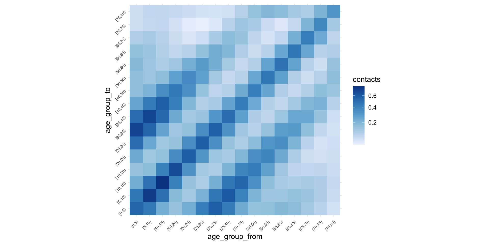Create A Next Generation Matrix
- Once infected, a person can transmit an infectious disease to another, creating generations of infected individuals.
- We can define a matrix describing the number of newly infected individuals in given categories, such as age, for consecutive generations.
- This matrix is called a next generation matrix (NGM).
Create A Next Generation Matrix
ngm_fairfield <- generate_ngm(
lga_name = "Fairfield (C)",
age_breaks = c(seq(0, 80, by = 5), Inf),
R_target = 1.5
)
ngm_fairfield$home
[0,5) [5,10) [10,15) [15,20) [20,25)
[0,5) 0.047279361 0.037816770 0.018253088 0.012363752 0.018390788
[5,10) 0.049872778 0.079171678 0.050341010 0.018620605 0.012834694
[10,15) 0.030827494 0.064471653 0.102728207 0.053915433 0.019620919
[15,20) 0.027313016 0.031186601 0.070486806 0.112497539 0.058345908
[20,25) 0.061695605 0.032615555 0.038876278 0.088390918 0.146068558
[25,30) 0.142507506 0.067262644 0.034505020 0.040195156 0.097798534
[30,35) 0.189993514 0.144214569 0.065660315 0.032975503 0.041083660
[35,40) 0.130186502 0.173168827 0.126447919 0.056498386 0.030613015
[40,45) 0.064313691 0.107007065 0.138065085 0.099164296 0.047926644
[45,50) 0.043320782 0.053832251 0.087587278 0.111279066 0.086776566
[50,55) 0.047077832 0.037729945 0.046013492 0.073138586 0.100523681
[55,60) 0.056783048 0.040593097 0.031837544 0.037541818 0.064422383
[60,65) 0.051206832 0.044395464 0.030456560 0.022683086 0.028548802
[65,70) 0.030571341 0.033400779 0.026919836 0.017110775 0.013097322
[70,75) 0.015017656 0.017737143 0.017489743 0.012975406 0.008549810
[75,80) 0.007731117 0.008813535 0.009109112 0.008247002 0.006550203
[80,Inf) 0.005773440 0.007239216 0.007076218 0.006626333 0.006887747
[25,30) [30,35) [35,40) [40,45) [45,50) [50,55)
[0,5) 0.035902015 0.050298447 0.039155637 0.021614004 0.01475401 0.01576909
[5,10) 0.022386501 0.050458279 0.068843926 0.047536979 0.02423862 0.01671372
[10,15) 0.014742893 0.029507423 0.064575975 0.078788725 0.05066711 0.02619708
[15,20) 0.022470522 0.019395801 0.037774788 0.074109856 0.08433082 0.05457717
[20,25) 0.082845455 0.036640336 0.031061180 0.054419403 0.10002715 0.11425355
[25,30) 0.163579675 0.100078049 0.043959544 0.033852772 0.05620441 0.10473928
[30,35) 0.095015044 0.154270253 0.093013514 0.037521684 0.02784264 0.04812000
[35,40) 0.036658682 0.081673231 0.133060437 0.076464282 0.03030980 0.02392780
[40,45) 0.025200513 0.029394795 0.068210183 0.115859459 0.06831632 0.02916641
[45,50) 0.041174706 0.021456035 0.026595849 0.067210450 0.12311514 0.07786494
[50,55) 0.077728931 0.037547902 0.021262536 0.029071743 0.07890737 0.15121054
[55,60) 0.088927642 0.071705117 0.038087280 0.023526382 0.03386661 0.09405082
[60,65) 0.049993331 0.073564562 0.064909774 0.036183330 0.02275980 0.03365861
[65,70) 0.017304609 0.033549687 0.053572679 0.047539050 0.02589711 0.01681574
[70,75) 0.007325098 0.011053599 0.022776474 0.035829253 0.03108804 0.01784466
[75,80) 0.005038479 0.004933249 0.007596324 0.015087074 0.02364141 0.02227778
[80,Inf) 0.007149799 0.006585702 0.005872194 0.007343748 0.01400933 0.02612415
[55,60) [60,65) [65,70) [70,75) [75,80) [80,Inf)
[0,5) 0.01899741 0.01843249 0.01377827 0.009853131 0.007673468 0.004805727
[5,10) 0.01796900 0.02115640 0.01993276 0.015407319 0.011580396 0.007976664
[10,15) 0.01812262 0.01867587 0.02067547 0.019547458 0.015396923 0.010029646
[15,20) 0.02802519 0.01825520 0.01725651 0.019047986 0.018311734 0.012338151
[20,25) 0.07336672 0.03512659 0.02023005 0.019250952 0.022324607 0.019690651
[25,30) 0.12023066 0.07316488 0.03184497 0.019679044 0.020504700 0.024412563
[30,35) 0.09224669 0.10251626 0.05883808 0.028325595 0.019159670 0.021463341
[35,40) 0.04301507 0.07938494 0.08245761 0.051241914 0.025906789 0.016806762
[40,45) 0.02367205 0.03939094 0.06511122 0.071740688 0.045799668 0.018709895
[45,50) 0.03350404 0.02434929 0.03485636 0.061196340 0.070574480 0.035101742
[50,55) 0.09427664 0.03648161 0.02293948 0.035633085 0.067495821 0.066444802
[55,60) 0.17968609 0.10461706 0.03668625 0.025377711 0.042672274 0.082708162
[60,65) 0.09674584 0.18581839 0.10490386 0.040156727 0.029110022 0.059813587
[65,70) 0.02693636 0.08321469 0.16433566 0.096464161 0.036252437 0.028995945
[70,75) 0.01271400 0.02169913 0.06566182 0.124094130 0.067821416 0.019552565
[75,80) 0.01408045 0.01035058 0.01623041 0.044605975 0.078290656 0.028209368
[80,Inf) 0.03250135 0.02532006 0.01545270 0.015307198 0.033578237 0.055915900
$school
[0,5) [5,10) [10,15) [15,20) [20,25)
[0,5) 2.917147e-02 7.625580e-03 1.142744e-03 6.365116e-04 9.471256e-04
[5,10) 9.936372e-03 1.280706e-01 1.055424e-02 1.321758e-03 1.828324e-03
[10,15) 1.903713e-03 1.332996e-02 2.157586e-01 1.600794e-02 3.422269e-03
[15,20) 1.374134e-03 2.178232e-03 2.058466e-02 2.150551e-01 1.802647e-02
[20,25) 3.032856e-03 4.469170e-03 6.578180e-03 2.672906e-02 4.652908e-02
[25,30) 5.699305e-03 9.110518e-03 6.539627e-03 8.417951e-03 1.423070e-02
[30,35) 7.084476e-03 1.367308e-02 1.037471e-02 6.875562e-03 4.364531e-03
[35,40) 6.460078e-03 1.236822e-02 1.179475e-02 8.695859e-03 3.072536e-03
[40,45) 5.716645e-03 1.029584e-02 1.017125e-02 9.766719e-03 3.861903e-03
[45,50) 5.322350e-03 1.109226e-02 1.057318e-02 1.002910e-02 4.924662e-03
[50,55) 4.353121e-03 1.101711e-02 1.163791e-02 9.484776e-03 4.380821e-03
[55,60) 2.781328e-03 6.896545e-03 7.675057e-03 5.903205e-03 2.278866e-03
[60,65) 1.249287e-03 2.851412e-03 2.536005e-03 1.753363e-03 7.168262e-04
[65,70) 3.205439e-04 9.777818e-04 6.558362e-04 3.018093e-04 1.579230e-04
[70,75) 4.872334e-05 2.928591e-04 2.260177e-04 6.616897e-05 2.828907e-05
[75,80) 8.597495e-06 8.465715e-05 1.065541e-04 3.614629e-05 1.181845e-05
[80,Inf) 3.688571e-05 9.840805e-05 8.521642e-05 5.130928e-05 3.285776e-05
[25,30) [30,35) [35,40) [40,45) [45,50)
[0,5) 1.529020e-03 2.008488e-03 2.077454e-03 2.043199e-03 1.922620e-03
[5,10) 3.201878e-03 5.078065e-03 5.210402e-03 4.820606e-03 5.249050e-03
[10,15) 2.922784e-03 4.899930e-03 6.318810e-03 6.056149e-03 6.362799e-03
[15,20) 4.875514e-03 4.208162e-03 6.037110e-03 7.536002e-03 7.821226e-03
[20,25) 1.222583e-02 3.962261e-03 3.163989e-03 4.419926e-03 5.696533e-03
[25,30) 1.867105e-02 7.051425e-03 2.227473e-03 1.801205e-03 2.750533e-03
[30,35) 6.673264e-03 1.158070e-02 4.441823e-03 1.554038e-03 1.598686e-03
[35,40) 1.858275e-03 3.916208e-03 6.610228e-03 2.966727e-03 1.600917e-03
[40,45) 1.352025e-03 1.232689e-03 2.669419e-03 4.311165e-03 2.801736e-03
[45,50) 2.042763e-03 1.254685e-03 1.425189e-03 2.772014e-03 4.433215e-03
[50,55) 2.433573e-03 2.071422e-03 1.836016e-03 1.907073e-03 3.017786e-03
[55,60) 1.363962e-03 1.841929e-03 2.275044e-03 1.649239e-03 1.224926e-03
[60,65) 4.523924e-04 7.732480e-04 1.434890e-03 1.222397e-03 5.772878e-04
[65,70) 1.398363e-04 2.476494e-04 4.919528e-04 5.478459e-04 3.432623e-04
[70,75) 3.045300e-05 5.725453e-05 9.363352e-05 1.058750e-04 1.126897e-04
[75,80) 1.012744e-05 1.728536e-05 2.372670e-05 2.428004e-05 3.781039e-05
[80,Inf) 2.124424e-05 1.408468e-05 1.237568e-05 1.436029e-05 2.795179e-05
[50,55) [55,60) [60,65) [65,70) [70,75)
[0,5) 1.547266e-03 0.0009897145 4.794678e-04 1.533983e-04 3.359225e-05
[5,10) 5.129822e-03 0.0032148431 1.433599e-03 6.129789e-04 2.645034e-04
[10,15) 6.891152e-03 0.0045497970 1.621436e-03 5.228548e-04 2.595955e-04
[15,20) 7.278035e-03 0.0045349080 1.452754e-03 3.118089e-04 9.848709e-05
[20,25) 4.986134e-03 0.0025966934 8.809581e-04 2.420040e-04 6.245466e-05
[25,30) 3.224166e-03 0.0018091259 6.471744e-04 2.494375e-04 7.826019e-05
[30,35) 2.596997e-03 0.0023119014 1.046778e-03 4.180314e-04 1.392356e-04
[35,40) 2.029303e-03 0.0025174090 1.712467e-03 7.320872e-04 2.007426e-04
[40,45) 1.896540e-03 0.0016419952 1.312623e-03 7.335370e-04 2.042330e-04
[45,50) 2.969427e-03 0.0012066398 6.133376e-04 4.547463e-04 2.150781e-04
[50,55) 4.252097e-03 0.0018496932 5.353506e-04 3.530890e-04 2.931420e-04
[55,60) 1.847577e-03 0.0024877665 1.203974e-03 5.742358e-04 3.706754e-04
[60,65) 4.957985e-04 0.0011163366 2.492765e-03 1.466884e-03 4.043274e-04
[65,70) 2.622499e-04 0.0004269873 1.176565e-03 2.069300e-03 5.605949e-04
[70,75) 1.511264e-04 0.0001913152 2.250756e-04 3.892447e-04 4.638189e-04
[75,80) 9.366193e-05 0.0001355072 8.366544e-05 6.431684e-05 9.735406e-05
[80,Inf) 7.539414e-05 0.0001396201 1.458938e-04 1.266401e-04 6.501096e-05
[75,80) [80,Inf)
[0,5) 8.908351e-06 3.197495e-05
[5,10) 1.149105e-04 1.117514e-04
[10,15) 1.839281e-04 1.230631e-04
[15,20) 8.085595e-05 9.602196e-05
[20,25) 3.921301e-05 9.120819e-05
[25,30) 3.911417e-05 6.864387e-05
[30,35) 6.317459e-05 4.306627e-05
[35,40) 7.644852e-05 3.336007e-05
[40,45) 7.038909e-05 3.482937e-05
[45,50) 1.084542e-04 6.707664e-05
[50,55) 2.730388e-04 1.838761e-04
[55,60) 3.945755e-04 3.401276e-04
[60,65) 2.258782e-04 3.295272e-04
[65,70) 1.392570e-04 2.293982e-04
[70,75) 1.462617e-04 8.174031e-05
[75,80) 3.955308e-05 5.922592e-06
[80,Inf) 7.079361e-06 8.798566e-09
$work
[0,5) [5,10) [10,15) [15,20) [20,25)
[0,5) 5.421311e-05 7.984065e-05 5.811880e-05 7.975869e-05 0.0001966672
[5,10) 1.045910e-04 2.475026e-04 1.852040e-04 2.702893e-04 0.0006611123
[10,15) 9.682093e-05 2.355225e-04 6.965510e-04 1.007676e-03 0.0017088472
[15,20) 1.721872e-04 4.454319e-04 1.305843e-03 6.078863e-03 0.0075381436
[20,25) 6.297614e-04 1.616028e-03 3.284693e-03 1.118113e-02 0.0295736967
[25,30) 1.537383e-03 2.811176e-03 4.106813e-03 1.081109e-02 0.0333667825
[30,35) 2.370287e-03 3.357927e-03 4.019900e-03 9.404326e-03 0.0274229835
[35,40) 2.511904e-03 3.057101e-03 3.347108e-03 7.526171e-03 0.0214164888
[40,45) 2.342636e-03 2.700671e-03 2.923399e-03 6.552056e-03 0.0182651490
[45,50) 2.228592e-03 2.622559e-03 2.909868e-03 6.560694e-03 0.0179054099
[50,55) 1.802561e-03 2.314259e-03 2.674951e-03 6.037861e-03 0.0161581312
[55,60) 1.021858e-03 1.530745e-03 1.910609e-03 4.335137e-03 0.0114147286
[60,65) 4.002830e-04 7.257144e-04 1.037220e-03 2.452690e-03 0.0062286147
[65,70) 1.240999e-04 2.631211e-04 4.453880e-04 1.174925e-03 0.0028465851
[70,75) 3.877664e-05 8.937825e-05 1.739428e-04 5.369804e-04 0.0013897488
[75,80) 1.450359e-05 3.540841e-05 7.281411e-05 2.495236e-04 0.0007269325
[80,Inf) 1.391202e-05 3.513079e-05 7.170015e-05 2.381457e-04 0.0007348243
[25,30) [30,35) [35,40) [40,45) [45,50)
[0,5) 0.0004124518 0.0006719894 0.0008077869 0.0008372869 0.000805046
[5,10) 0.0009879835 0.0012471052 0.0012878759 0.0012644791 0.001241040
[10,15) 0.0018354760 0.0018985819 0.0017931478 0.0017406448 0.001751120
[15,20) 0.0062615735 0.0057558835 0.0052250532 0.0050555683 0.005116379
[20,25) 0.0286648506 0.0248954679 0.0220539393 0.0209043589 0.020711830
[25,30) 0.0565167806 0.0524699806 0.0450990251 0.0411305614 0.039198485
[30,35) 0.0496524480 0.0604328515 0.0535226878 0.0465661221 0.042575340
[35,40) 0.0376239684 0.0471851783 0.0536858910 0.0480704175 0.042660299
[40,45) 0.0308735347 0.0369370348 0.0432515987 0.0483307909 0.044410054
[45,50) 0.0291118914 0.0334140800 0.0379776066 0.0439400674 0.048574913
[50,55) 0.0255363240 0.0285263071 0.0318303729 0.0363829552 0.041652815
[55,60) 0.0177532677 0.0195824057 0.0215803419 0.0242111090 0.026893942
[60,65) 0.0094113013 0.0103098081 0.0112221571 0.0122580562 0.013092879
[65,70) 0.0040837898 0.0044182095 0.0047291330 0.0050287470 0.005202763
[70,75) 0.0020093398 0.0021468606 0.0022552985 0.0023673943 0.002443386
[75,80) 0.0011396606 0.0012536212 0.0013241863 0.0014156022 0.001520294
[80,Inf) 0.0013618611 0.0018663291 0.0024289541 0.0031145556 0.003836001
[50,55) [55,60) [60,65) [65,70) [70,75)
[0,5) 0.000640699 0.0003636203 0.0001536259 5.938877e-05 2.673451e-05
[5,10) 0.001077573 0.0007135610 0.0003648660 1.649526e-04 8.072431e-05
[10,15) 0.001583918 0.0011326145 0.0006631639 3.550784e-04 1.997842e-04
[15,20) 0.004633084 0.0033303006 0.0020321826 1.213853e-03 7.992514e-04
[20,25) 0.018390752 0.0130067115 0.0076547827 4.362158e-03 3.068192e-03
[25,30) 0.033832289 0.0235475035 0.0134634304 7.284593e-03 5.163738e-03
[30,35) 0.035764184 0.0245788960 0.0139568174 7.457924e-03 5.220889e-03
[35,40) 0.035181324 0.0238793409 0.0133930609 7.037540e-03 4.835177e-03
[40,45) 0.036182011 0.0241047687 0.0131628331 6.733229e-03 4.566707e-03
[45,50) 0.040984392 0.0264924529 0.0139104871 6.892505e-03 4.663415e-03
[50,55) 0.043720307 0.0291486563 0.0147182213 7.132075e-03 4.865693e-03
[55,60) 0.029115549 0.0248596269 0.0131448396 6.321538e-03 4.309133e-03
[60,65) 0.013630829 0.0121875331 0.0089254889 4.884642e-03 3.184383e-03
[65,70) 0.005297208 0.0047005367 0.0039173909 3.935060e-03 2.687198e-03
[70,75) 0.002508458 0.0022240557 0.0017726401 1.865223e-03 1.802980e-03
[75,80) 0.001614476 0.0013946118 0.0009602202 7.470709e-04 5.206769e-04
[80,Inf) 0.004084020 0.0028174302 0.0012181293 5.125778e-04 2.032072e-04
[75,80) [80,Inf)
[0,5) 1.502800e-05 1.205985e-05
[5,10) 4.806205e-05 3.989424e-05
[10,15) 1.256879e-04 1.035439e-04
[15,20) 5.581615e-04 4.456741e-04
[20,25) 2.411924e-03 2.039762e-03
[25,30) 4.401592e-03 4.400412e-03
[30,35) 4.581739e-03 5.706615e-03
[35,40) 4.266589e-03 6.547527e-03
[40,45) 4.103904e-03 7.554024e-03
[45,50) 4.360768e-03 9.205352e-03
[50,55) 4.706443e-03 9.960369e-03
[55,60) 4.060888e-03 6.863524e-03
[60,65) 2.592382e-03 2.751363e-03
[65,70) 1.617537e-03 9.284927e-04
[70,75) 7.825132e-04 2.554987e-04
[75,80) 8.515148e-05 1.327525e-05
[80,Inf) 1.586778e-05 1.574482e-08
$other
[0,5) [5,10) [10,15) [15,20) [20,25)
[0,5) 0.018438927 0.009291499 0.003282926 0.002004907 0.002531174
[5,10) 0.012171840 0.052272868 0.019538855 0.005417981 0.003700004
[10,15) 0.005469074 0.024847419 0.097417650 0.029373949 0.009427067
[15,20) 0.004328298 0.008928735 0.038065592 0.123383334 0.040735176
[20,25) 0.008105247 0.009044319 0.018120414 0.060421413 0.141923953
[25,30) 0.020059578 0.013027073 0.014474545 0.027561174 0.067004794
[30,35) 0.034487156 0.021201803 0.015459696 0.019973897 0.034980959
[35,40) 0.029905715 0.023802303 0.017740244 0.017278961 0.024068643
[40,45) 0.017741547 0.016478418 0.016517096 0.017427466 0.020299558
[45,50) 0.013186728 0.010757129 0.011965666 0.017179956 0.023070912
[50,55) 0.012830238 0.009605392 0.008021055 0.012678402 0.024115596
[55,60) 0.012219586 0.010616306 0.006573964 0.007713775 0.017136190
[60,65) 0.010322209 0.010876614 0.006319809 0.005428914 0.009342822
[65,70) 0.007530896 0.009087795 0.005274453 0.004358592 0.005407055
[70,75) 0.004288871 0.005907340 0.003415238 0.003076399 0.003808764
[75,80) 0.001840246 0.002882759 0.001745605 0.001721175 0.002358808
[80,Inf) 0.001219542 0.002169131 0.001499440 0.001782994 0.002580022
[25,30) [30,35) [35,40) [40,45) [45,50)
[0,5) 0.005381619 0.009777297 0.009617184 0.006341047 0.004763510
[5,10) 0.004578345 0.007874168 0.010027281 0.007715347 0.005090458
[10,15) 0.006469172 0.007301549 0.009503990 0.009834579 0.007200780
[15,20) 0.015962899 0.012224950 0.011995939 0.013447037 0.013397846
[20,25) 0.057562709 0.031756842 0.024785034 0.023232728 0.026686952
[25,30) 0.112347527 0.057152012 0.037140609 0.030206822 0.030919107
[30,35) 0.054083063 0.076348517 0.045910759 0.032792752 0.029507468
[35,40) 0.030984641 0.040474562 0.059821953 0.038541896 0.029729439
[40,45) 0.022673928 0.026011765 0.034678264 0.048607091 0.031806952
[45,50) 0.022962971 0.023158121 0.026466128 0.031470343 0.042012278
[50,55) 0.028849552 0.025817854 0.025105029 0.025306216 0.029499101
[55,60) 0.029689215 0.031367490 0.026407664 0.022971823 0.023732366
[60,65) 0.018699628 0.027766535 0.027227744 0.021114323 0.019497274
[65,70) 0.008219518 0.013896771 0.019124936 0.017647391 0.014487439
[70,75) 0.004329296 0.005571445 0.008792069 0.011571444 0.011019787
[75,80) 0.002542865 0.002376972 0.002865594 0.004295413 0.005734405
[80,Inf) 0.002684396 0.002253551 0.001885236 0.001885125 0.002786384
[50,55) [55,60) [60,65) [65,70) [70,75)
[0,5) 0.004560358 0.004348247 0.003961593 0.003603958 0.002956957
[5,10) 0.004472494 0.004948820 0.005468414 0.005697208 0.005335369
[10,15) 0.004749505 0.003897066 0.004040674 0.004204972 0.003922615
[15,20) 0.009728628 0.005925808 0.004498141 0.004503003 0.004578968
[20,25) 0.027447725 0.019526131 0.011482051 0.008285868 0.008408727
[25,30) 0.038221883 0.039379054 0.026750938 0.014661832 0.011125720
[30,35) 0.032368525 0.039370968 0.037588717 0.023457707 0.013549039
[35,40) 0.027747967 0.029220928 0.032494896 0.028460290 0.018849481
[40,45) 0.025166449 0.022870926 0.022672788 0.023628933 0.022321332
[45,50) 0.029025715 0.023378075 0.020714816 0.019192637 0.021032224
[50,55) 0.046971896 0.035286050 0.027454516 0.022163613 0.021284128
[55,60) 0.035245971 0.063489503 0.044684940 0.031718273 0.028230980
[60,65) 0.025426158 0.041430645 0.062578653 0.042903067 0.036274937
[65,70) 0.016461586 0.023584909 0.034407451 0.053290974 0.040422519
[70,75) 0.010972814 0.014570742 0.020193048 0.028057852 0.043857787
[75,80) 0.006864541 0.008642666 0.010731662 0.011552428 0.014628234
[80,Inf) 0.005601173 0.009834580 0.010390200 0.008382274 0.009501831
[75,80) [80,Inf)
[0,5) 0.001906783 0.001057179
[5,10) 0.003912949 0.002463247
[10,15) 0.003013173 0.002165377
[15,20) 0.003850111 0.003336756
[20,25) 0.007826401 0.007161754
[25,30) 0.009821043 0.008673756
[30,35) 0.008687366 0.006890611
[35,40) 0.009233073 0.005081872
[40,45) 0.012452624 0.004572170
[45,50) 0.016448403 0.006686559
[50,55) 0.020011181 0.013660499
[55,60) 0.025166068 0.023957958
[60,65) 0.028973114 0.023468126
[65,70) 0.025012989 0.015183801
[70,75) 0.021984434 0.011946950
[75,80) 0.018858653 0.009447035
[80,Inf) 0.011291956 0.003220727
$all
[0,5) [5,10) [10,15) [15,20) [20,25)
[0,5) 0.094943970 0.054813689 0.022736877 0.015084930 0.022065755
[5,10) 0.072085581 0.259762628 0.080619310 0.025630633 0.019024134
[10,15) 0.038297102 0.102884557 0.416600982 0.100304999 0.034179103
[15,20) 0.033187636 0.042739000 0.130442904 0.457014833 0.124645702
[20,25) 0.073463469 0.047745073 0.066859565 0.186722523 0.364095288
[25,30) 0.169803771 0.092211411 0.059626004 0.086985368 0.212400812
[30,35) 0.233935433 0.182447379 0.095514618 0.069229288 0.107852133
[35,40) 0.169064199 0.212396446 0.159330026 0.089999377 0.079170684
[40,45) 0.090114519 0.136481994 0.167676831 0.132910538 0.090353254
[45,50) 0.064058453 0.078304202 0.113035990 0.145048814 0.132677549
[50,55) 0.066063752 0.060666705 0.068347408 0.101339625 0.145178229
[55,60) 0.072805820 0.059636693 0.047997174 0.055493934 0.095252168
[60,65) 0.063178610 0.058849204 0.040349594 0.032318053 0.044837065
[65,70) 0.038546881 0.043729477 0.033295513 0.022946102 0.021508884
[70,75) 0.019394027 0.024026720 0.021304942 0.016654955 0.013776612
[75,80) 0.009594464 0.011816359 0.011034085 0.010253847 0.009647762
[80,Inf) 0.007043780 0.009541886 0.008732575 0.008698781 0.010235451
[25,30) [30,35) [35,40) [40,45) [45,50) [50,55)
[0,5) 0.043225106 0.062756221 0.05165806 0.03083554 0.02224518 0.02251741
[5,10) 0.031154707 0.064657617 0.08536948 0.06133741 0.03581917 0.02739361
[10,15) 0.025970326 0.043607483 0.08219192 0.09642010 0.06598181 0.03942166
[15,20) 0.049570509 0.041584797 0.06103289 0.10014846 0.11066627 0.07621692
[20,25) 0.181298847 0.097254907 0.08106414 0.10297642 0.15312246 0.16507816
[25,30) 0.351115031 0.216751467 0.12842665 0.10699136 0.12907253 0.18001762
[30,35) 0.205423819 0.302632322 0.19688878 0.11843460 0.10152414 0.11884970
[35,40) 0.107125566 0.173249180 0.25317851 0.16604332 0.10430045 0.08888639
[40,45) 0.080100001 0.093576285 0.14880946 0.21710851 0.14733506 0.09241141
[45,50) 0.095292332 0.079282921 0.09246477 0.14539287 0.21813554 0.15084448
[50,55) 0.134548380 0.093963485 0.08003395 0.09266799 0.15307707 0.24615484
[55,60) 0.137734087 0.124496942 0.08835033 0.07235855 0.08571785 0.16025992
[60,65) 0.078556653 0.112414153 0.10479457 0.07077811 0.05592724 0.07321139
[65,70) 0.029747753 0.052112317 0.07791870 0.07076303 0.04593058 0.03883678
[70,75) 0.013694187 0.018829160 0.03391748 0.04987397 0.04466390 0.03147706
[75,80) 0.008731133 0.008581128 0.01180983 0.02082237 0.03093392 0.03085046
[80,Inf) 0.011217301 0.010719667 0.01019876 0.01235779 0.02065966 0.03588474
[55,60) [60,65) [65,70) [70,75) [75,80) [80,Inf)
[0,5) 0.02469899 0.02302718 0.01759502 0.01287041 0.009604187 0.005906941
[5,10) 0.02684623 0.02842328 0.02640790 0.02108792 0.015656317 0.010591557
[10,15) 0.02770210 0.02500115 0.02575837 0.02392945 0.018719713 0.012421629
[15,20) 0.04181620 0.02623827 0.02328518 0.02452469 0.022800863 0.016216603
[20,25) 0.10849626 0.05514438 0.03312008 0.03079033 0.032602146 0.028983375
[25,30) 0.18496634 0.11402642 0.05404083 0.03604676 0.034766449 0.037555375
[30,35) 0.15850846 0.15510858 0.09017174 0.04723476 0.032491950 0.034103634
[35,40) 0.09863274 0.12698537 0.11868752 0.07512731 0.039482899 0.028469522
[40,45) 0.07228974 0.07653919 0.09620692 0.09883296 0.062426585 0.030870919
[45,50) 0.08458121 0.05958794 0.06139625 0.08710706 0.091492105 0.051060729
[50,55) 0.16056104 0.07918969 0.05258826 0.06207605 0.092486484 0.090249546
[55,60) 0.27052298 0.16365082 0.07530030 0.05828850 0.072293806 0.113869772
[60,65) 0.15148036 0.25981530 0.15415845 0.08002038 0.060901397 0.086362603
[65,70) 0.05564879 0.12271610 0.22363100 0.14013447 0.063022220 0.045337637
[70,75) 0.02970011 0.04388989 0.09597414 0.17021872 0.090734625 0.031836754
[75,80) 0.02425324 0.02212613 0.02859423 0.05985224 0.097274014 0.037675601
[80,Inf) 0.04529298 0.03707428 0.02447419 0.02507725 0.044893140 0.059136651Apply Vaccination
Applies the effect of vaccination on the next generation of infections, to understand and describe the reduction of acquisition and transmission in each age group.
Takes the following arguments:
ngm- a Next Generation Matrixdata- A data frame with location specifics- which columns are related to “coverage”, “acquisition”, and “transmission” in the
datacol
Example vaccination data
# A tibble: 17 × 4
age_band coverage acquisition transmission
<chr> <dbl> <dbl> <dbl>
1 0-4 0 0 0
2 5-11 0.782 0.583 0.254
3 12-15 0.997 0.631 0.295
4 16-19 0.965 0.786 0.469
5 20-24 0.861 0.774 0.453
6 25-29 0.997 0.778 0.458
7 30-34 0.998 0.803 0.493
8 35-39 0.998 0.829 0.533
9 40-44 0.999 0.841 0.551
10 45-49 0.993 0.847 0.562
11 50-54 0.999 0.857 0.579
12 55-59 0.996 0.864 0.591
13 60-64 0.998 0.858 0.581
14 65-69 0.999 0.864 0.591
15 70-74 0.999 0.867 0.597
16 75-79 0.999 0.866 0.595
17 80+ 0.999 0.844 0.556Apply vaccination
ngm_vacc_fairfield <- apply_vaccination(
ngm = ngm_fairfield,
data = vaccination_effect_example_data,
coverage_col = coverage,
acquisition_col = acquisition,
transmission_col = transmission
)
ngm_vacc_fairfield$home
[0,5) [5,10) [10,15) [15,20) [20,25)
[0,5) 0.0472793606 0.0302972848 0.0128801433 0.0067744655 0.0112292221
[5,10) 0.0271193183 0.0344908850 0.0193161911 0.0055479653 0.0042613779
[10,15) 0.0114390039 0.0191662907 0.0268982514 0.0109619503 0.0044454800
[15,20) 0.0066051242 0.0060422496 0.0120282798 0.0149066172 0.0086153131
[20,25) 0.0206082922 0.0087283436 0.0091634037 0.0161778262 0.0297916016
[25,30) 0.0320486340 0.0121189502 0.0054756846 0.0049530219 0.0134293027
[30,35) 0.0377331794 0.0229463198 0.0092017821 0.0035883996 0.0049819927
[35,40) 0.0223717324 0.0238409004 0.0153330905 0.0053197894 0.0032121003
[40,45) 0.0103313963 0.0137716928 0.0156503413 0.0087284207 0.0047009100
[45,50) 0.0068759756 0.0068454162 0.0098098739 0.0096777914 0.0084098806
[50,55) 0.0067773082 0.0043515725 0.0046742327 0.0057691533 0.0088360566
[55,60) 0.0079348810 0.0045445740 0.0031393926 0.0028744963 0.0054967734
[60,65) 0.0073479047 0.0051037982 0.0030839038 0.0017834564 0.0025013406
[65,70) 0.0041970121 0.0036736824 0.0026078493 0.0012871233 0.0010978868
[70,75) 0.0020112414 0.0019031149 0.0016528363 0.0009521552 0.0006991460
[75,80) 0.0010400810 0.0009499359 0.0008647395 0.0006079191 0.0005380579
[80,Inf) 0.0009102335 0.0009143848 0.0007872339 0.0005724218 0.0006630476
[25,30) [30,35) [35,40) [40,45) [45,50)
[0,5) 0.0195295996 0.0255422232 0.0183183171 0.0097230702 0.0065204543
[5,10) 0.0066217981 0.0139332284 0.0175134665 0.0116282665 0.0058249340
[10,15) 0.0029758239 0.0055601355 0.0112101709 0.0131517108 0.0083089091
[15,20) 0.0029559631 0.0023818980 0.0042737061 0.0080622357 0.0090129208
[20,25) 0.0150532744 0.0062151461 0.0048539690 0.0081772965 0.0147663631
[25,30) 0.0200113155 0.0114291711 0.0046250480 0.0034247921 0.0055861172
[30,35) 0.0102648240 0.0155586149 0.0086421531 0.0033522403 0.0024437847
[35,40) 0.0034267705 0.0071271764 0.0106972927 0.0059109932 0.0023018901
[40,45) 0.0022021124 0.0023978949 0.0051262063 0.0083725023 0.0048500690
[45,50) 0.0035550283 0.0017293847 0.0019748912 0.0047989147 0.0086360944
[50,55) 0.0060869255 0.0027449255 0.0014320135 0.0018826953 0.0050202601
[55,60) 0.0067597869 0.0050883384 0.0024899633 0.0014789212 0.0020915170
[60,65) 0.0039023139 0.0053605380 0.0043574959 0.0023356746 0.0014433511
[65,70) 0.0012922961 0.0023389359 0.0034408075 0.0029359214 0.0015712487
[70,75) 0.0005336420 0.0007517439 0.0014270521 0.0021585793 0.0018400232
[75,80) 0.0003687219 0.0003370250 0.0004781010 0.0009130575 0.0014056146
[80,Inf) 0.0006131780 0.0005272595 0.0004331216 0.0005208397 0.0009761204
[50,55) [55,60) [60,65) [65,70) [70,75)
[0,5) 0.0066520509 0.0078170307 0.0077460674 0.0056447203 0.0039762424
[5,10) 0.0038338702 0.0040205615 0.0048345296 0.0044404841 0.0033809665
[10,15) 0.0041006427 0.0027670598 0.0029122470 0.0031430621 0.0029271086
[15,20) 0.0055676430 0.0027887359 0.0018552189 0.0017096689 0.0018589126
[20,25) 0.0160992818 0.0100840369 0.0049308411 0.0027684226 0.0025950072
[25,30) 0.0099364301 0.0111258842 0.0069146744 0.0029340007 0.0017859708
[30,35) 0.0040314311 0.0075384656 0.0085560772 0.0047873010 0.0022701902
[35,40) 0.0017345445 0.0030415977 0.0057328305 0.0058051308 0.0035535103
[40,45) 0.0019764582 0.0015647283 0.0026591893 0.0042850812 0.0046507148
[45,50) 0.0052134960 0.0021881784 0.0016241335 0.0022665626 0.0039197833
[50,55) 0.0091827309 0.0055846043 0.0022070493 0.0013529198 0.0020701069
[55,60) 0.0055441293 0.0103319833 0.0061435803 0.0021002582 0.0014311091
[60,65) 0.0020374209 0.0057123586 0.0112052516 0.0061670107 0.0023253723
[65,70) 0.0009738468 0.0015216408 0.0048009042 0.0092428345 0.0053442935
[70,75) 0.0010081368 0.0007006348 0.0012212417 0.0036026544 0.0067067463
[75,80) 0.0012642874 0.0007794514 0.0005851768 0.0008945447 0.0024216788
[80,Inf) 0.0017374385 0.0021084683 0.0016775683 0.0009980909 0.0009738958
[75,80) [80,Inf)
[0,5) 0.003110120 0.002137895
[5,10) 0.002552255 0.001929584
[10,15) 0.002315631 0.001655628
[15,20) 0.001794842 0.001327360
[20,25) 0.003022436 0.002926005
[25,30) 0.001869006 0.002442375
[30,35) 0.001542262 0.001896309
[35,40) 0.001804400 0.001284828
[40,45) 0.002981971 0.001337070
[45,50) 0.004540160 0.002478529
[50,55) 0.003938249 0.004255289
[55,60) 0.002416868 0.005141589
[60,65) 0.001693026 0.003818235
[65,70) 0.002017197 0.001770885
[70,75) 0.003681412 0.001164912
[75,80) 0.004268943 0.001688284
[80,Inf) 0.002145663 0.003921758
$school
[0,5) [5,10) [10,15) [15,20) [20,25)
[0,5) 2.917147e-02 6.109310e-03 8.063678e-04 3.487635e-04 5.783049e-04
[5,10) 5.403100e-03 5.579353e-02 4.049735e-03 3.938145e-04 6.070405e-04
[10,15) 7.064012e-04 3.962764e-03 5.649401e-02 3.254694e-03 7.753781e-04
[15,20) 3.323078e-04 4.220217e-04 3.512687e-03 2.849613e-02 2.661776e-03
[20,25) 1.013070e-03 1.196007e-03 1.550522e-03 4.892110e-03 9.489899e-03
[25,30) 1.281721e-03 1.641475e-03 1.037789e-03 1.037296e-03 1.954103e-03
[30,35) 1.406994e-03 2.175556e-03 1.453934e-03 7.481997e-04 5.292630e-04
[35,40) 1.110124e-03 1.702786e-03 1.430233e-03 8.187869e-04 3.223889e-04
[40,45) 9.183259e-04 1.325063e-03 1.152960e-03 8.596645e-04 3.787968e-04
[45,50) 8.447759e-04 1.410514e-03 1.184208e-03 8.722172e-04 4.772696e-04
[50,55) 6.266737e-04 1.270655e-03 1.182225e-03 7.481568e-04 3.850753e-04
[55,60) 3.886636e-04 7.720983e-04 7.568115e-04 4.519957e-04 1.944419e-04
[60,65) 1.792660e-04 3.278045e-04 2.567852e-04 1.378581e-04 6.280566e-05
[65,70) 4.400614e-05 1.075442e-04 6.353389e-05 2.270299e-05 1.323794e-05
[70,75) 6.525279e-06 3.142245e-05 2.135939e-05 4.855581e-06 2.313290e-06
[75,80) 1.156636e-06 9.124475e-06 1.011531e-05 2.664485e-06 9.708114e-07
[80,Inf) 5.815356e-06 1.242991e-05 9.480382e-06 4.432399e-06 3.163045e-06
[25,30) [30,35) [35,40) [40,45) [45,50)
[0,5) 8.317400e-04 1.019937e-03 9.719027e-04 9.191341e-04 8.496917e-04
[5,10) 9.470970e-04 1.402225e-03 1.325494e-03 1.179193e-03 1.261432e-03
[10,15) 5.899583e-04 9.233024e-04 1.096924e-03 1.010915e-03 1.043437e-03
[15,20) 6.413665e-04 5.167827e-04 6.830173e-04 8.198238e-04 8.358994e-04
[20,25) 2.221471e-03 6.721017e-04 4.944405e-04 6.641574e-04 8.409424e-04
[25,30) 2.284099e-03 8.052909e-04 2.343557e-04 1.822230e-04 2.733736e-04
[30,35) 7.209372e-04 1.167948e-03 4.127025e-04 1.388400e-04 1.403188e-04
[35,40) 1.737073e-04 3.417461e-04 5.314243e-04 2.293398e-04 1.215823e-04
[40,45) 1.181449e-04 1.005572e-04 2.006151e-04 3.115433e-04 1.989073e-04
[45,50) 1.763724e-04 1.011292e-04 1.058283e-04 1.979254e-04 3.109745e-04
[50,55) 1.905722e-04 1.514306e-04 1.236541e-04 1.235026e-04 1.919982e-04
[55,60) 1.036808e-04 1.307070e-04 1.487314e-04 1.036749e-04 7.564837e-05
[60,65) 3.531225e-05 5.634541e-05 9.632646e-05 7.890710e-05 3.660968e-05
[65,70) 1.044288e-05 1.726502e-05 3.159661e-05 3.383392e-05 2.082667e-05
[70,75) 2.218537e-06 3.893821e-06 5.866576e-06 6.378574e-06 6.669821e-06
[75,80) 7.411383e-07 1.180885e-06 1.493323e-06 1.469408e-06 2.248040e-06
[80,Inf) 1.821939e-06 1.127637e-06 9.128058e-07 1.018473e-06 1.947582e-06
[50,55) [55,60) [60,65) [65,70) [70,75)
[0,5) 6.527005e-04 4.072466e-04 2.014915e-04 6.284464e-05 1.355619e-05
[5,10) 1.176702e-03 7.193206e-04 3.275972e-04 1.365552e-04 5.804235e-05
[10,15) 1.078676e-03 6.946876e-04 2.528408e-04 7.948381e-05 3.887279e-05
[15,20) 7.424625e-04 4.512605e-04 1.476388e-04 3.089211e-05 9.611456e-06
[20,25) 7.025880e-04 3.569077e-04 1.236632e-04 3.311754e-05 8.418819e-06
[25,30) 3.058709e-04 1.674126e-04 6.116323e-05 2.298165e-05 7.102500e-06
[30,35) 2.175730e-04 1.889302e-04 8.736481e-05 3.401271e-05 1.115921e-05
[35,40) 1.471057e-04 1.780061e-04 1.236668e-04 5.153996e-05 1.392105e-05
[40,45) 1.285188e-04 1.085363e-04 8.861209e-05 4.827533e-05 1.323976e-05
[45,50) 1.988199e-04 7.880671e-05 4.091051e-05 2.957024e-05 1.377631e-05
[50,55) 2.582219e-04 1.095691e-04 3.238742e-05 2.082441e-05 1.703011e-05
[55,60) 1.089114e-04 1.430470e-04 7.070274e-05 3.287454e-05 2.090326e-05
[60,65) 3.001165e-05 6.591410e-05 1.503192e-04 8.623412e-05 2.341356e-05
[65,70) 1.518763e-05 2.412061e-05 6.787958e-05 1.163850e-04 3.105800e-05
[70,75) 8.537905e-06 1.054288e-05 1.266741e-05 2.135661e-05 2.506739e-05
[75,80) 5.315413e-06 7.501273e-06 4.730078e-06 3.544845e-06 5.285397e-06
[80,Inf) 5.014237e-06 9.057611e-06 9.666120e-06 8.179694e-06 4.136217e-06
[75,80) [80,Inf)
[0,5) 3.610629e-06 1.422450e-05
[5,10) 2.532563e-05 2.703307e-05
[10,15) 2.766200e-05 2.031444e-05
[15,20) 7.925174e-06 1.033021e-05
[20,25) 5.308887e-06 1.355342e-05
[25,30) 3.565261e-06 6.867533e-06
[30,35) 5.085253e-06 3.804952e-06
[35,40) 5.324615e-06 2.550280e-06
[40,45) 4.582963e-06 2.489020e-06
[45,50) 6.977021e-06 4.736271e-06
[50,55) 1.593128e-05 1.177588e-05
[55,60) 2.234793e-05 2.114418e-05
[60,65) 1.313697e-05 2.103556e-05
[65,70) 7.748689e-06 1.401015e-05
[70,75) 7.939226e-06 4.869962e-06
[75,80) 2.156705e-06 3.544574e-07
[80,Inf) 4.523741e-07 6.171025e-10
$work
[0,5) [5,10) [10,15) [15,20) [20,25)
[0,5) 5.421311e-05 6.396514e-05 4.101106e-05 4.370215e-05 1.200829e-04
[5,10) 5.687347e-05 1.078237e-04 7.106404e-05 8.053206e-05 2.195027e-04
[10,15) 3.592686e-05 7.001672e-05 1.823842e-04 2.048781e-04 3.871708e-04
[15,20) 4.164014e-05 8.630022e-05 2.228367e-04 8.054868e-04 1.113077e-03
[20,25) 2.103603e-04 4.324700e-04 7.742245e-04 2.046436e-03 6.031742e-03
[25,30) 3.457433e-04 5.064996e-04 6.517200e-04 1.332189e-03 4.581793e-03
[30,35) 4.707449e-04 5.342876e-04 5.633577e-04 1.023380e-03 3.325436e-03
[35,40) 4.316550e-04 4.208843e-04 4.058707e-04 7.086512e-04 2.247146e-03
[40,45) 3.763227e-04 3.475734e-04 3.313813e-04 5.767106e-04 1.791547e-03
[45,50) 3.537274e-04 3.334898e-04 3.259085e-04 5.705748e-04 1.735288e-03
[50,55) 2.594960e-04 2.669145e-04 2.717321e-04 4.762650e-04 1.420304e-03
[55,60) 1.427947e-04 1.713736e-04 1.883987e-04 3.319321e-04 9.739499e-04
[60,65) 5.743846e-05 8.342969e-05 1.050246e-04 1.928426e-04 5.457282e-04
[65,70) 1.703715e-05 2.894015e-05 4.314680e-05 8.838136e-05 2.386158e-04
[70,75) 5.193166e-06 9.589880e-06 1.643814e-05 3.940445e-05 1.136443e-04
[75,80) 1.951195e-06 3.816371e-06 6.912336e-06 1.839337e-05 5.971292e-05
[80,Inf) 2.193352e-06 4.437368e-06 7.976688e-06 2.057243e-05 7.073772e-05
[25,30) [30,35) [35,40) [40,45) [45,50)
[0,5) 2.243612e-04 3.412452e-04 3.779098e-04 0.0003766539 3.557858e-04
[5,10) 2.922398e-04 3.443677e-04 3.276276e-04 0.0003093108 2.982420e-04
[10,15) 3.704872e-04 3.577531e-04 3.112844e-04 0.0002905550 2.871666e-04
[15,20) 8.237005e-04 7.068503e-04 5.911441e-04 0.0005499833 5.468169e-04
[20,25) 5.208492e-03 4.222914e-03 3.446396e-03 0.0031411800 3.057554e-03
[25,30) 6.913910e-03 5.992207e-03 4.744934e-03 0.0041610661 3.895910e-03
[30,35) 5.364136e-03 6.094833e-03 4.972947e-03 0.0041602831 3.736893e-03
[35,40) 3.517003e-03 4.117593e-03 4.316036e-03 0.0037160345 3.239854e-03
[40,45) 2.697842e-03 3.013157e-03 3.250491e-03 0.0034925906 3.152861e-03
[45,50) 2.513524e-03 2.693219e-03 2.820051e-03 0.0031373787 3.407360e-03
[50,55) 1.999741e-03 2.085405e-03 2.143748e-03 0.0023561717 2.650044e-03
[55,60) 1.349505e-03 1.389607e-03 1.410819e-03 0.0015219647 1.660902e-03
[60,65) 7.346150e-04 7.512601e-04 7.533612e-04 0.0007912713 8.303069e-04
[65,70) 3.049746e-04 3.080180e-04 3.037376e-04 0.0003105659 3.156659e-04
[70,75) 1.463828e-04 1.460058e-04 1.413050e-04 0.0001426267 1.446179e-04
[75,80) 8.340171e-05 8.564369e-05 8.334226e-05 0.0000856711 9.039001e-05
[80,Inf) 1.167953e-04 1.494206e-04 1.791549e-04 0.0002208933 2.672790e-04
[50,55) [55,60) [60,65) [65,70) [70,75)
[0,5) 2.702733e-04 1.496221e-04 6.455973e-05 2.433055e-05 1.078874e-05
[5,10) 2.471786e-04 1.596592e-04 8.337694e-05 3.674702e-05 1.771406e-05
[10,15) 2.479315e-04 1.729337e-04 1.034113e-04 5.397863e-05 2.991642e-05
[15,20) 4.726401e-04 3.313922e-04 2.065244e-04 1.202611e-04 7.799977e-05
[20,25) 2.591411e-03 1.787734e-03 1.074529e-03 5.969484e-04 4.135889e-04
[25,30) 3.209609e-03 2.179035e-03 1.272403e-03 6.711579e-04 4.686349e-04
[30,35) 2.996277e-03 2.008605e-03 1.164845e-03 6.068065e-04 4.184347e-04
[35,40) 2.550321e-03 1.688510e-03 9.671878e-04 4.954526e-04 3.353085e-04
[40,45) 2.451869e-03 1.593331e-03 8.885917e-04 4.431254e-04 2.960447e-04
[45,50) 2.744136e-03 1.730246e-03 9.278498e-04 4.481906e-04 2.987037e-04
[50,55) 2.655052e-03 1.726660e-03 8.904169e-04 4.206339e-04 2.826728e-04
[55,60) 1.716310e-03 1.429433e-03 7.719236e-04 3.619029e-04 2.430022e-04
[60,65) 8.251006e-04 7.196129e-04 5.382263e-04 2.871547e-04 1.843994e-04
[65,70) 3.067763e-04 2.655343e-04 2.260060e-04 2.213220e-04 1.488758e-04
[70,75) 1.417157e-04 1.225618e-04 9.976539e-05 1.023388e-04 9.744319e-05
[75,80) 9.162322e-05 7.720151e-05 5.428665e-05 4.117507e-05 2.826779e-05
[80,Inf) 2.716158e-04 1.827759e-04 8.070657e-05 3.310744e-05 1.292873e-05
[75,80) [80,Inf)
[0,5) 6.090971e-06 5.364993e-06
[5,10) 1.059261e-05 9.650563e-06
[10,15) 1.890293e-05 1.709235e-05
[15,20) 5.470874e-05 4.794639e-05
[20,25) 3.265404e-04 3.031060e-04
[25,30) 4.012056e-04 4.402430e-04
[30,35) 3.688081e-04 5.041856e-04
[35,40) 2.971665e-04 5.005394e-04
[40,45) 2.672011e-04 5.398352e-04
[45,50) 2.805347e-04 6.499885e-04
[50,55) 2.746117e-04 6.378866e-04
[55,60) 2.300002e-04 4.266739e-04
[60,65) 1.507718e-04 1.756349e-04
[65,70) 9.000474e-05 5.670632e-05
[70,75) 4.247557e-05 1.522222e-05
[75,80) 4.643042e-06 7.945016e-07
[80,Inf) 1.013958e-06 1.104290e-09
$other
[0,5) [5,10) [10,15) [15,20) [20,25)
[0,5) 0.0184389271 0.0074439777 0.0023165705 0.0010985480 0.0015455085
[5,10) 0.0066186811 0.0227725058 0.0074971927 0.0016142747 0.0012284761
[10,15) 0.0020293819 0.0073867014 0.0255077405 0.0059722374 0.0021358753
[15,20) 0.0010467152 0.0017298981 0.0064957346 0.0163490522 0.0060149256
[20,25) 0.0027074099 0.0024203766 0.0042711050 0.0110586829 0.0289462832
[25,30) 0.0045112155 0.0023471342 0.0022970003 0.0033962077 0.0092008297
[30,35) 0.0068492341 0.0033734689 0.0021665560 0.0021735627 0.0042419512
[35,40) 0.0051391091 0.0032769658 0.0021511842 0.0016269568 0.0025254257
[40,45) 0.0028500146 0.0021207545 0.0018722922 0.0015339620 0.0019910928
[45,50) 0.0020930283 0.0013678979 0.0013401680 0.0014941178 0.0022358987
[50,55) 0.0018470365 0.0011078352 0.0008148105 0.0010000692 0.0021197669
[55,60) 0.0017075688 0.0011885417 0.0006482364 0.0005906272 0.0014621278
[60,65) 0.0014811814 0.0012503989 0.0006399174 0.0004268480 0.0008185836
[65,70) 0.0010338853 0.0009995477 0.0005109607 0.0003278663 0.0004532479
[70,75) 0.0005743876 0.0006338307 0.0003227509 0.0002257509 0.0003114551
[75,80) 0.0002475716 0.0003107080 0.0001657125 0.0001268746 0.0001937612
[80,Inf) 0.0001922716 0.0002739828 0.0001668137 0.0001540255 0.0002483653
[25,30) [30,35) [35,40) [40,45) [45,50)
[0,5) 0.0029274365 0.0049650419 0.0044992404 0.0028525229 0.0021052079
[5,10) 0.0013542480 0.0021743228 0.0025508778 0.0018872909 0.0012233197
[10,15) 0.0013057896 0.0013758437 0.0016498605 0.0016416250 0.0011808573
[15,20) 0.0020998952 0.0015012830 0.0013571781 0.0014628713 0.0014319050
[20,25) 0.0104593216 0.0053867795 0.0038731880 0.0034910509 0.0039396228
[25,30) 0.0137438945 0.0065269070 0.0039076178 0.0030559414 0.0030730287
[30,35) 0.0058427919 0.0076999755 0.0042657007 0.0029297508 0.0025899088
[35,40) 0.0028963740 0.0035319938 0.0048093405 0.0029794419 0.0022578145
[40,45) 0.0019813302 0.0021219226 0.0026061789 0.0035125573 0.0022581123
[45,50) 0.0019826252 0.0018665752 0.0019652587 0.0022470239 0.0029470137
[50,55) 0.0022591983 0.0018874047 0.0016908021 0.0016388386 0.0018767977
[55,60) 0.0022568097 0.0022258997 0.0017264062 0.0014440604 0.0014656513
[60,65) 0.0014596310 0.0020233053 0.0018278416 0.0013629533 0.0012364524
[65,70) 0.0006138279 0.0009688215 0.0012283355 0.0010898693 0.0008789926
[70,75) 0.0003153943 0.0003789082 0.0005508641 0.0006971364 0.0006522336
[75,80) 0.0001860899 0.0001623877 0.0001803561 0.0002599549 0.0003409425
[80,Inf) 0.0002302180 0.0001804221 0.0001390513 0.0001336985 0.0001941454
[50,55) [55,60) [60,65) [65,70) [70,75)
[0,5) 0.0019237468 0.0017892119 0.0016648196 0.0014764793 0.0011932833
[5,10) 0.0010259211 0.0011072976 0.0012496083 0.0012691849 0.0011707879
[10,15) 0.0007434424 0.0005950250 0.0006300879 0.0006392353 0.0005873869
[15,20) 0.0009924576 0.0005896665 0.0004571321 0.0004461297 0.0004468662
[20,25) 0.0038676143 0.0026838084 0.0016117755 0.0011338965 0.0011334871
[25,30) 0.0036260424 0.0036440522 0.0025281806 0.0013508516 0.0010097142
[30,35) 0.0027117931 0.0032174236 0.0031371799 0.0019086127 0.0010859047
[35,40) 0.0020114714 0.0020662135 0.0023466381 0.0020036442 0.0013071687
[40,45) 0.0017054011 0.0015117740 0.0015305863 0.0015550606 0.0014470191
[45,50) 0.0019434349 0.0015268428 0.0013817085 0.0012480165 0.0013471682
[50,55) 0.0028525147 0.0020902169 0.0016609320 0.0013071606 0.0012365031
[55,60) 0.0020776875 0.0036506582 0.0026240989 0.0018158454 0.0015920117
[60,65) 0.0015390948 0.0024462725 0.0037736283 0.0025221539 0.0021005879
[65,70) 0.0009533369 0.0013323167 0.0019850686 0.0029972780 0.0022394826
[70,75) 0.0006199106 0.0008029551 0.0011364785 0.0015394448 0.0023703220
[75,80) 0.0003895700 0.0004784319 0.0006067213 0.0006367161 0.0007941735
[80,Inf) 0.0003725171 0.0006380012 0.0006883977 0.0005414117 0.0006045387
[75,80) [80,Inf)
[0,5) 0.0007728349 0.0004703010
[5,10) 0.0008623922 0.0005958685
[10,15) 0.0004531684 0.0003574462
[15,20) 0.0003773723 0.0003589740
[20,25) 0.0010595839 0.0010642273
[25,30) 0.0008951892 0.0008677732
[30,35) 0.0006992915 0.0006087930
[35,40) 0.0006430806 0.0003884943
[40,45) 0.0008107780 0.0003267422
[45,50) 0.0010581500 0.0004721369
[50,55) 0.0011676132 0.0008748520
[55,60) 0.0014253534 0.0014893568
[60,65) 0.0016850635 0.0014981016
[65,70) 0.0013917999 0.0009273282
[70,75) 0.0011933362 0.0007117809
[75,80) 0.0010283029 0.0005653894
[80,Inf) 0.0007215606 0.0002258912
$all
[0,5) [5,10) [10,15) [15,20) [20,25)
[0,5) 0.094943970 0.043914537 0.0160440926 0.0082654792 0.0134731184
[5,10) 0.039197973 0.113164748 0.0309341824 0.0076365866 0.0063163972
[10,15) 0.014210714 0.030585773 0.1090823864 0.0203937602 0.0077439042
[15,20) 0.008025787 0.008280470 0.0222595381 0.0605572819 0.0184050910
[20,25) 0.024539133 0.012777198 0.0157592550 0.0341750556 0.0742595250
[25,30) 0.038187314 0.016614059 0.0094621940 0.0107187153 0.0291660281
[30,35) 0.046460153 0.029029632 0.0133856302 0.0075335424 0.0130786433
[35,40) 0.029052620 0.029241536 0.0193203789 0.0084741843 0.0083070607
[40,45) 0.014476060 0.017565084 0.0190069751 0.0116987579 0.0088623463
[45,50) 0.010167507 0.009957318 0.0126601583 0.0126147012 0.0128583372
[50,55) 0.009510514 0.006996977 0.0069430003 0.0079936442 0.0127612026
[55,60) 0.010173908 0.006676588 0.0047328391 0.0042490513 0.0081272930
[60,65) 0.009065791 0.006765431 0.0040856310 0.0025410051 0.0039284581
[65,70) 0.005291941 0.004809714 0.0032254907 0.0017260739 0.0018029885
[70,75) 0.002597347 0.002577958 0.0020133847 0.0012221662 0.0011265587
[75,80) 0.001290760 0.001273585 0.0010474797 0.0007558515 0.0007925028
[80,Inf) 0.001110514 0.001205235 0.0009715046 0.0007514522 0.0009853137
[25,30) [30,35) [35,40) [40,45) [45,50)
[0,5) 0.0235131372 0.0318684471 0.0241673699 0.013871381 0.009831140
[5,10) 0.0092153830 0.0178541435 0.0217174658 0.015004062 0.008607928
[10,15) 0.0052420590 0.0082170348 0.0142682398 0.016094806 0.010820370
[15,20) 0.0065209253 0.0051068139 0.0069050456 0.010894914 0.011827542
[20,25) 0.0329425589 0.0164969408 0.0126679939 0.015473685 0.022604482
[25,30) 0.0429532193 0.0247535759 0.0135119560 0.010824023 0.012828430
[30,35) 0.0221926895 0.0305213719 0.0182935031 0.010581114 0.008910905
[35,40) 0.0100138550 0.0151185089 0.0203540939 0.012835810 0.007921141
[40,45) 0.0069994292 0.0076335316 0.0111834918 0.015689193 0.010459949
[45,50) 0.0082275495 0.0063903081 0.0068660288 0.010381243 0.015301442
[50,55) 0.0105364367 0.0068691660 0.0053902179 0.006001208 0.009739100
[55,60) 0.0104697826 0.0088345517 0.0057759200 0.004548621 0.005293719
[60,65) 0.0061318722 0.0081914488 0.0070350251 0.004568806 0.003546720
[65,70) 0.0022215414 0.0036330404 0.0050044771 0.004370190 0.002786734
[70,75) 0.0009976376 0.0012805517 0.0021250877 0.003004721 0.002643544
[75,80) 0.0006389546 0.0005862373 0.0007432927 0.001260153 0.001839195
[80,Inf) 0.0009620133 0.0008582299 0.0007522407 0.000876450 0.001439492
[50,55) [55,60) [60,65) [65,70) [70,75)
[0,5) 0.009498771 0.010163111 0.009676938 0.007208375 0.005193871
[5,10) 0.006283672 0.006006839 0.006495112 0.005882971 0.004627511
[10,15) 0.006170692 0.004229706 0.003898587 0.003915760 0.003583285
[15,20) 0.007775203 0.004161055 0.002666514 0.002306952 0.002393390
[20,25) 0.023260895 0.014912487 0.007740808 0.004532385 0.004150502
[25,30) 0.017077953 0.017116384 0.010776422 0.004978992 0.003271422
[30,35) 0.009957074 0.012953424 0.012945467 0.007336733 0.003785689
[35,40) 0.006443443 0.006974327 0.009170323 0.008355768 0.005209909
[40,45) 0.006262247 0.004778370 0.005166979 0.006331543 0.006407018
[45,50) 0.010099886 0.005524073 0.003974602 0.003992340 0.005579432
[50,55) 0.014948519 0.009511050 0.004790786 0.003101539 0.003606313
[55,60) 0.009447038 0.015555122 0.009610305 0.004310881 0.003287026
[60,65) 0.004431628 0.008944158 0.015667425 0.009062553 0.004633773
[65,70) 0.002249148 0.003143612 0.007079858 0.012577820 0.007763710
[70,75) 0.001778301 0.001636695 0.002470153 0.005265795 0.009199579
[75,80) 0.001750796 0.001342586 0.001250915 0.001575981 0.003249405
[80,Inf) 0.002386586 0.002938303 0.002456339 0.001580790 0.001595499
[75,80) [80,Inf)
[0,5) 0.003892657 0.002627785
[5,10) 0.003450566 0.002562136
[10,15) 0.002815365 0.002050481
[15,20) 0.002234849 0.001744610
[20,25) 0.004413869 0.004306892
[25,30) 0.003168966 0.003757259
[30,35) 0.002615447 0.003013093
[35,40) 0.002749971 0.002176412
[40,45) 0.004064533 0.002206137
[45,50) 0.005885822 0.003605390
[50,55) 0.005396405 0.005779803
[55,60) 0.004094570 0.007078764
[60,65) 0.003541998 0.005513007
[65,70) 0.003506751 0.002768929
[70,75) 0.004925163 0.001896785
[75,80) 0.005304045 0.002254822
[80,Inf) 0.002868690 0.004147651Challenges in Design
- Model fitting is fixed and rigid
- Although there are arguments for
age_break
- Although there are arguments for
- Design decision to provide access to fitting the model
- Tradeoff: easy to use vs more complex to create
Challenges in Design
- Hard coding variables
- age and population columns are currently required to be named
lower.age.limitandpopulation - At least 2 potential ways to resolve this
- age and population columns are currently required to be named
# A tibble: 18 × 4
lga lower.age.limit year population
<chr> <dbl> <dbl> <dbl>
1 Fairfield (C) 0 2020 12261
2 Fairfield (C) 5 2020 13093
3 Fairfield (C) 10 2020 13602
4 Fairfield (C) 15 2020 14323
5 Fairfield (C) 20 2020 15932
6 Fairfield (C) 25 2020 16190
7 Fairfield (C) 30 2020 14134
8 Fairfield (C) 35 2020 13034
9 Fairfield (C) 40 2020 12217
10 Fairfield (C) 45 2020 13449
11 Fairfield (C) 50 2020 13419
12 Fairfield (C) 55 2020 13652
13 Fairfield (C) 60 2020 12907
14 Fairfield (C) 65 2020 10541
15 Fairfield (C) 70 2020 8227
16 Fairfield (C) 75 2020 5598
17 Fairfield (C) 80 2020 4006
18 Fairfield (C) 85 2020 4240Challenges in Design
- Provide arguments for specifying the age and population information (
age_colandpopulation_col)
Challenges in Design
- Some kind of class based approach, where we encode or validate the
ageandpopulationcolumns.
Challenges in Design: Australian-Centric
- state name / LGA name fixed
- A feature of doing things for a specific purpose and not thinking genearlly
Challenges in Design: Australian-Centric
- Change of interface means breaking existing code
- Can get around this with versioning and releases, or two functions
Challenges in Design
- Rigid model design means easy to use, at cost of flexibility
- Specified variable names is fragile, but saves typing
- Extra functions could always be added to be more flexible variants
Future Directions
- Interface to changing GAM model terms or specify model
- Validating against Prem and other methods
- Allowing more flexible uses of other data sources (Separate out the Australian focus)
- Better automatic plotting (use of
autoplot)
Comment: Workflows
- Also worked on a workflow for determining the impact of “Test, Trace, Isolate, Quarantine” (TTIQ)
- Used targets R package to manage workflow - file
- Allowed for many people to contribute to same code base (although a learning curve)
- Used tests, very useful for plots with vdiffr (example)
- Issues helped facilitate task delivery/discussion
- Pull requests helped isolate issues
Thanks
- Nick Golding
- Aarathy Babu
- Michael Lydeamore
Learning more
njtierney.github.io/talk-canterbury-2022
nj_tierney
njtierney
nicholas.tierney@gmail.com
End.
Extras
How does the model work?
fit_single_contact_model <- function(contact_data, population) {
# programatically add the offset term to the formula, so the model defines
# information about the setting, without us having to pass it through to the
# prediction data
formula_no_offset <- contacts ~
# deviation of contact age distribution from population age distribution
s(age_to) +
# number of contacts by age
s(age_from) +
# intergenerational contact patterns - enables the off-diagonals
s(abs(age_from - age_to)) +
# interaction between intergenerational patterns and age_from, to remove
# ridge for some ages and settings
s(abs(age_from - age_to), age_from) +
# probabilities of both attending (any) school/work
school_probability +
work_probability
# choose the offset variable based on the setting
setting <- contact_data$setting[1]
offset_variable <- switch(
setting,
school = "log_contactable_population_school",
"log_contactable_population"
)
# add multiplicative offset for population contactable, to enable
# extrapolation to new demographies
# in mgcv, this part of the offset gets used in prediction, which
# is what we want. Those are the "contactable" parts, which we use
# to extrapolate to new demographics.
formula_offset <- sprintf("~. + offset(%s)", offset_variable)
formula <- update(formula_no_offset, formula_offset)
# contact model for all locations together
contact_data %>%
add_modelling_features() %>%
# The modelling features added here are:
# the school and work offsets
# pop_age_to (interpolated population)
# `log_contactable_population_school`, and ` log_contactable_population`
population = population
mgcv::bam(
formula = formula,
family = stats::poisson,
# add number of participants as a multilpicative offset here rather than in
# the formula, so it is not needed for prediction,
# NOTE: the offset of participants allows us to get the rate per person
offset = log(participants),
data = .
)
}Alt approach to conmat model
# A tibble: 18 × 4
lga lower.age.limit year population
<chr> <dbl> <dbl> <dbl>
1 Fairfield (C) 0 2020 12261
2 Fairfield (C) 5 2020 13093
3 Fairfield (C) 10 2020 13602
4 Fairfield (C) 15 2020 14323
5 Fairfield (C) 20 2020 15932
6 Fairfield (C) 25 2020 16190
7 Fairfield (C) 30 2020 14134
8 Fairfield (C) 35 2020 13034
9 Fairfield (C) 40 2020 12217
10 Fairfield (C) 45 2020 13449
11 Fairfield (C) 50 2020 13419
12 Fairfield (C) 55 2020 13652
13 Fairfield (C) 60 2020 12907
14 Fairfield (C) 65 2020 10541
15 Fairfield (C) 70 2020 8227
16 Fairfield (C) 75 2020 5598
17 Fairfield (C) 80 2020 4006
18 Fairfield (C) 85 2020 4240Alt approach to conmat model
Alt approach to conmat model
setting_models <- fit_setting_contacts(
contact_data_list = polymod_contact_data,
population = polymod_survey_data
)
str(setting_models)List of 4
$ home :List of 54
..$ coefficients : Named num [1:57] 0.654 -0.15 0.162 -75.493 3.316 ...
.. ..- attr(*, "names")= chr [1:57] "(Intercept)" "school_probability" "work_probability" "s(gam_age_offdiag).1" ...
..$ db.drho : num [1:55, 1:6] -8.96e-04 2.88e-03 4.28e-05 -7.75e-01 6.78e-03 ...
..$ gcv.ubre : Named num 14677
.. ..- attr(*, "names")= chr "fREML"
..$ mgcv.conv :List of 2
.. ..$ iter : int 8
.. ..$ message: chr "full convergence"
..$ rank : int 55
..$ Ve : num [1:57, 1:57] 0.00092 -0.000148 -0.000784 -0.043904 -0.008867 ...
..$ scale.estimated : logi FALSE
..$ outer.info :List of 4
.. ..$ conv: chr "full convergence"
.. ..$ iter: int 8
.. ..$ grad: num [1:6] 1.10e-07 -1.82e-05 2.97e-08 -6.81e-08 -1.11e-07 ...
.. ..$ hess: num [1:6, 1:6] 3.51 6.31e-06 2.87e-03 -3.14e-03 -1.87e-03 ...
..$ optimizer : chr [1:2] "perf" "newton"
..$ scale : num 1
..$ sig2 : num 1
..$ sp : Named num [1:6] 1.09e-03 6.09e+02 7.91e-02 2.47e-01 3.66e-02 ...
.. ..- attr(*, "names")= chr [1:6] "s(gam_age_offdiag)" "s(gam_age_offdiag_2)" "s(gam_age_diag_prod)" "s(gam_age_diag_sum)" ...
..$ edf : Named num [1:57] 1 1 1 0.914 0.984 ...
.. ..- attr(*, "names")= chr [1:57] "(Intercept)" "school_probability" "work_probability" "s(gam_age_offdiag).1" ...
..$ edf1 : num [1:57] 1 1 1 0.992 0.998 ...
..$ edf2 : num [1:57] 1 1 1 1.095 0.982 ...
..$ hat : num [1:57] 1 1 1 1 0.999 ...
..$ Vp : num [1:57, 1:57] 0.00104 -0.000165 -0.000884 -0.050475 -0.009871 ...
..$ Vc : num [1:57, 1:57] 0.001075 -0.000092 -0.001002 -0.05243 -0.009974 ...
..$ V.sp : num [1:6, 1:6] 0.284608 -0.098799 -0.000187 0.000796 0.00017 ...
..$ R : num [1:57, 1:57] -117.23 72.94 8.79 -78.94 0 ...
.. ..- attr(*, "dimnames")=List of 2
.. .. ..$ : NULL
.. .. ..$ : NULL
..$ iter : int 8
..$ wt : num [1:8787] 6.82 7.08 7.06 6.84 6.45 ...
..$ y : int [1:8787] 10 7 11 15 11 6 9 9 6 6 ...
..$ prior.weights : num [1:8787] 1 1 1 1 1 1 1 1 1 1 ...
..$ assign : int [1:3] 0 1 2
..$ boundary : logi FALSE
..$ call : language mgcv::bam(formula = formula, family = stats::poisson, data = ., offset = log(participants))
..$ cmX : Named num [1:57] 1.00 3.98e-02 2.47e-01 -2.63e-14 -4.12e-15 ...
.. ..- attr(*, "names")= chr [1:57] "(Intercept)" "school_probability" "work_probability" "" ...
..$ control :List of 19
.. ..$ nthreads : num 1
.. ..$ irls.reg : num 0
.. ..$ epsilon : num 1e-07
.. ..$ maxit : num 200
.. ..$ trace : logi FALSE
.. ..$ mgcv.tol : num 1e-07
.. ..$ mgcv.half : num 15
.. ..$ rank.tol : num 1.49e-08
.. ..$ nlm :List of 6
.. .. ..$ ndigit : num 7
.. .. ..$ gradtol : num 1e-06
.. .. ..$ stepmax : num 2
.. .. ..$ steptol : num 1e-04
.. .. ..$ iterlim : num 200
.. .. ..$ check.analyticals: logi FALSE
.. ..$ optim :List of 1
.. .. ..$ factr: num 1e+07
.. ..$ newton :List of 5
.. .. ..$ conv.tol: num 1e-06
.. .. ..$ maxNstep: num 5
.. .. ..$ maxSstep: num 2
.. .. ..$ maxHalf : num 30
.. .. ..$ use.svd : logi FALSE
.. ..$ outerPIsteps: num 0
.. ..$ idLinksBases: logi TRUE
.. ..$ scalePenalty: logi TRUE
.. ..$ efs.lspmax : num 15
.. ..$ efs.tol : num 0.1
.. ..$ keepData : logi FALSE
.. ..$ scale.est : chr "fletcher"
.. ..$ edge.correct: logi FALSE
..$ converged : logi TRUE
..$ data : logi NA
..$ df.null : int 8787
..$ df.residual : num 8755
..$ family :List of 12
.. ..$ family : chr "poisson"
.. ..$ link : chr "log"
.. ..$ linkfun :function (mu)
.. ..$ linkinv :function (eta)
.. ..$ variance :function (mu)
.. ..$ dev.resids:function (y, mu, wt)
.. ..$ aic :function (y, n, mu, wt, dev)
.. ..$ mu.eta :function (eta)
.. ..$ initialize: expression({ if (any(y < 0)) stop("negative values not allowed for the 'Poisson' family") n <- rep.int(1, nobs| __truncated__
.. ..$ validmu :function (mu)
.. ..$ valideta :function (eta)
.. ..$ simulate :function (object, nsim)
.. ..- attr(*, "class")= chr "family"
..$ formula :Class 'formula' language contacts ~ s(gam_age_offdiag) + s(gam_age_offdiag_2) + s(gam_age_diag_prod) + s(gam_age_diag_sum) + s(gam_ag| __truncated__ ...
.. .. ..- attr(*, ".Environment")=<environment: R_GlobalEnv>
..$ method : chr "fREML"
..$ min.edf : num 9
..$ model :'data.frame': 8787 obs. of 11 variables:
.. ..$ contacts : int [1:8787] 10 7 11 15 11 6 9 9 6 6 ...
.. ..$ school_probability : num [1:8787] 0.0025 0.0025 0.025 0.025 0.025 0.05 0.05 0.05 0.05 0.05 ...
.. ..$ work_probability : num [1:8787] 0.0025 0.0025 0.0025 0.0025 0.0025 0.0025 0.0025 0.0025 0.0025 0.0025 ...
.. ..$ offset(log_contactable_population): num [1:8787] -4.68 -4.66 -4.65 -4.64 -4.62 ...
.. ..$ gam_age_offdiag : num [1:8787] 0 1 2 3 4 5 6 7 8 9 ...
.. ..$ gam_age_offdiag_2 : num [1:8787] 0 1 4 9 16 25 36 49 64 81 ...
.. ..$ gam_age_diag_prod : num [1:8787] 0 0 0 0 0 0 0 0 0 0 ...
.. ..$ gam_age_diag_sum : num [1:8787] 0 1 2 3 4 5 6 7 8 9 ...
.. ..$ gam_age_pmax : num [1:8787] 0 1 2 3 4 5 6 7 8 9 ...
.. ..$ gam_age_pmin : num [1:8787] 0 0 0 0 0 0 0 0 0 0 ...
.. ..$ (offset) : num [1:8787] 4.52 4.52 4.52 4.52 4.52 ...
.. ..- attr(*, "terms")=Classes 'terms', 'formula' language contacts ~ school_probability + work_probability + offset(log_contactable_population) + gam_age_offdiag + ga| __truncated__ ...
.. .. .. ..- attr(*, "variables")= language list(contacts, school_probability, work_probability, offset(log_contactable_population), gam_age_offdiag, ga| __truncated__ ...
.. .. .. ..- attr(*, "offset")= int 4
.. .. .. ..- attr(*, "factors")= int [1:10, 1:8] 0 1 0 0 0 0 0 0 0 0 ...
.. .. .. .. ..- attr(*, "dimnames")=List of 2
.. .. .. .. .. ..$ : chr [1:10] "contacts" "school_probability" "work_probability" "offset(log_contactable_population)" ...
.. .. .. .. .. ..$ : chr [1:8] "school_probability" "work_probability" "gam_age_offdiag" "gam_age_offdiag_2" ...
.. .. .. ..- attr(*, "term.labels")= chr [1:8] "school_probability" "work_probability" "gam_age_offdiag" "gam_age_offdiag_2" ...
.. .. .. ..- attr(*, "order")= int [1:8] 1 1 1 1 1 1 1 1
.. .. .. ..- attr(*, "intercept")= int 1
.. .. .. ..- attr(*, "response")= int 1
.. .. .. ..- attr(*, ".Environment")=<environment: R_GlobalEnv>
.. .. .. ..- attr(*, "predvars")= language list(contacts, school_probability, work_probability, offset(log_contactable_population), gam_age_offdiag, ga| __truncated__ ...
.. .. .. ..- attr(*, "dataClasses")= Named chr [1:11] "numeric" "numeric" "numeric" "numeric" ...
.. .. .. .. ..- attr(*, "names")= chr [1:11] "contacts" "school_probability" "work_probability" "offset(log_contactable_population)" ...
..$ nsdf : int 3
..$ offset : num [1:8787] -0.157 -0.143 -0.129 -0.115 -0.101 ...
..$ pterms :Classes 'terms', 'formula' language contacts ~ school_probability + work_probability + offset(log_contactable_population)
.. .. ..- attr(*, "variables")= language list(contacts, school_probability, work_probability, offset(log_contactable_population))
.. .. ..- attr(*, "offset")= int 4
.. .. ..- attr(*, "factors")= int [1:4, 1:2] 0 1 0 0 0 0 1 0
.. .. .. ..- attr(*, "dimnames")=List of 2
.. .. .. .. ..$ : chr [1:4] "contacts" "school_probability" "work_probability" "offset(log_contactable_population)"
.. .. .. .. ..$ : chr [1:2] "school_probability" "work_probability"
.. .. ..- attr(*, "term.labels")= chr [1:2] "school_probability" "work_probability"
.. .. ..- attr(*, "order")= int [1:2] 1 1
.. .. ..- attr(*, "intercept")= int 1
.. .. ..- attr(*, "response")= int 1
.. .. ..- attr(*, ".Environment")=<environment: R_GlobalEnv>
.. .. ..- attr(*, "predvars")= language list(contacts, school_probability, work_probability, offset(log_contactable_population))
.. .. ..- attr(*, "dataClasses")= Named chr [1:5] "numeric" "numeric" "numeric" "numeric" ...
.. .. .. ..- attr(*, "names")= chr [1:5] "contacts" "school_probability" "work_probability" "offset(log_contactable_population)" ...
..$ pred.formula :Class 'formula' language ~school_probability + work_probability + log_contactable_population + gam_age_offdiag + gam_age_offdiag_2 + | __truncated__ ...
.. .. ..- attr(*, ".Environment")=<environment: R_GlobalEnv>
..$ smooth :List of 6
.. ..$ :List of 29
.. .. ..$ term : chr "gam_age_offdiag"
.. .. ..$ bs.dim : num 10
.. .. ..$ fixed : logi FALSE
.. .. ..$ dim : int 1
.. .. ..$ p.order : num 0
.. .. ..$ by : chr "NA"
.. .. ..$ label : chr "s(gam_age_offdiag)"
.. .. ..$ xt : NULL
.. .. ..$ id : NULL
.. .. ..$ sp : Named num -1
.. .. .. ..- attr(*, "names")= chr "s(gam_age_offdiag)"
.. .. ..$ drop.null : num 0
.. .. ..$ S :List of 1
.. .. .. ..$ : num [1:9, 1:9] 2.558 -0.769 4.813 -1.005 4.801 ...
.. .. ..$ UZ : num [1:103, 1:10] -3.97e-06 -3.66e-06 -3.37e-06 -3.09e-06 -2.83e-06 ...
.. .. ..$ Xu : num [1:101, 1] -32 -31 -30 -29 -28 ...
.. .. ..$ df : num 9
.. .. ..$ shift : num [1(1d)] 32
.. .. ..$ rank : num 8
.. .. ..$ null.space.dim: num 1
.. .. ..$ plot.me : logi TRUE
.. .. ..$ side.constrain: logi TRUE
.. .. ..$ repara : logi TRUE
.. .. ..$ C : num 0
.. .. ..$ S.scale : num 2.27e-05
.. .. ..$ Cp : num 0
.. .. ..$ vn : chr "gam_age_offdiag"
.. .. ..$ first.para : num 4
.. .. ..$ last.para : num 12
.. .. ..$ first.sp : num 1
.. .. ..$ last.sp : num 1
.. .. ..- attr(*, "class")= chr [1:2] "tprs.smooth" "mgcv.smooth"
.. .. ..- attr(*, "qrc")= 'sweepDrop' num [1:10] 9 -0.938 -0.423 -0.743 -0.413 ...
.. .. ..- attr(*, "nCons")= num 1
.. ..$ :List of 29
.. .. ..$ term : chr "gam_age_offdiag_2"
.. .. ..$ bs.dim : num 10
.. .. ..$ fixed : logi FALSE
.. .. ..$ dim : int 1
.. .. ..$ p.order : num 0
.. .. ..$ by : chr "NA"
.. .. ..$ label : chr "s(gam_age_offdiag_2)"
.. .. ..$ xt : NULL
.. .. ..$ id : NULL
.. .. ..$ sp : Named num -1
.. .. .. ..- attr(*, "names")= chr "s(gam_age_offdiag_2)"
.. .. ..$ drop.null : num 0
.. .. ..$ S :List of 1
.. .. .. ..$ : num [1:9, 1:9] 1.75 1.68 3.12 -2.03 -3.03 ...
.. .. ..$ UZ : num [1:103, 1:10] -1.54e-12 -1.54e-12 -1.54e-12 -1.53e-12 -1.51e-12 ...
.. .. ..$ Xu : num [1:101, 1] -1533 -1532 -1529 -1524 -1517 ...
.. .. ..$ df : num 9
.. .. ..$ shift : num [1(1d)] 1533
.. .. ..$ rank : num 8
.. .. ..$ null.space.dim: num 1
.. .. ..$ plot.me : logi TRUE
.. .. ..$ side.constrain: logi TRUE
.. .. ..$ repara : logi TRUE
.. .. ..$ C : num 0
.. .. ..$ S.scale : num 2.23e-11
.. .. ..$ Cp : num 0
.. .. ..$ vn : chr "gam_age_offdiag_2"
.. .. ..$ first.para : num 13
.. .. ..$ last.para : num 21
.. .. ..$ first.sp : num 2
.. .. ..$ last.sp : num 2
.. .. ..- attr(*, "class")= chr [1:2] "tprs.smooth" "mgcv.smooth"
.. .. ..- attr(*, "qrc")= 'sweepDrop' num [1:10] 9 -0.961 0.691 -0.87 -0.676 ...
.. .. ..- attr(*, "nCons")= num 1
.. ..$ :List of 29
.. .. ..$ term : chr "gam_age_diag_prod"
.. .. ..$ bs.dim : num 10
.. .. ..$ fixed : logi FALSE
.. .. ..$ dim : int 1
.. .. ..$ p.order : num 0
.. .. ..$ by : chr "NA"
.. .. ..$ label : chr "s(gam_age_diag_prod)"
.. .. ..$ xt : NULL
.. .. ..$ id : NULL
.. .. ..$ sp : Named num -1
.. .. .. ..- attr(*, "names")= chr "s(gam_age_diag_prod)"
.. .. ..$ drop.null : num 0
.. .. ..$ S :List of 1
.. .. .. ..$ : num [1:9, 1:9] 4.08 3.48 -8.2 5.06 -7.78 ...
.. .. ..$ UZ : num [1:2002, 1:10] -2.38e-13 -2.37e-13 -2.37e-13 -2.36e-13 -2.36e-13 ...
.. .. ..$ Xu : num [1:2000, 1] -2152 -2150 -2149 -2146 -2145 ...
.. .. ..$ df : num 9
.. .. ..$ shift : num [1(1d)] 2152
.. .. ..$ rank : num 8
.. .. ..$ null.space.dim: num 1
.. .. ..$ plot.me : logi TRUE
.. .. ..$ side.constrain: logi TRUE
.. .. ..$ repara : logi TRUE
.. .. ..$ C : num 0
.. .. ..$ S.scale : num 2.26e-11
.. .. ..$ Cp : num 0
.. .. ..$ vn : chr "gam_age_diag_prod"
.. .. ..$ first.para : num 22
.. .. ..$ last.para : num 30
.. .. ..$ first.sp : num 3
.. .. ..$ last.sp : num 3
.. .. ..- attr(*, "class")= chr [1:2] "tprs.smooth" "mgcv.smooth"
.. .. ..- attr(*, "qrc")= 'sweepDrop' num [1:10] 9 -0.947 0.262 0.763 0.162 ...
.. .. ..- attr(*, "nCons")= num 1
.. ..$ :List of 29
.. .. ..$ term : chr "gam_age_diag_sum"
.. .. ..$ bs.dim : num 10
.. .. ..$ fixed : logi FALSE
.. .. ..$ dim : int 1
.. .. ..$ p.order : num 0
.. .. ..$ by : chr "NA"
.. .. ..$ label : chr "s(gam_age_diag_sum)"
.. .. ..$ xt : NULL
.. .. ..$ id : NULL
.. .. ..$ sp : Named num -1
.. .. .. ..- attr(*, "names")= chr "s(gam_age_diag_sum)"
.. .. ..$ drop.null : num 0
.. .. ..$ S :List of 1
.. .. .. ..$ : num [1:9, 1:9] 4.97 1.09 11.11 -1.66 11.93 ...
.. .. ..$ UZ : num [1:193, 1:10] 4.62e-07 4.42e-07 4.23e-07 4.04e-07 3.85e-07 ...
.. .. ..$ Xu : num [1:191, 1] -93 -92 -91 -90 -89 ...
.. .. ..$ df : num 9
.. .. ..$ shift : num [1(1d)] 93
.. .. ..$ rank : num 8
.. .. ..$ null.space.dim: num 1
.. .. ..$ plot.me : logi TRUE
.. .. ..$ side.constrain: logi TRUE
.. .. ..$ repara : logi TRUE
.. .. ..$ C : num 0
.. .. ..$ S.scale : num 2.88e-06
.. .. ..$ Cp : num 0
.. .. ..$ vn : chr "gam_age_diag_sum"
.. .. ..$ first.para : num 31
.. .. ..$ last.para : num 39
.. .. ..$ first.sp : num 4
.. .. ..$ last.sp : num 4
.. .. ..- attr(*, "class")= chr [1:2] "tprs.smooth" "mgcv.smooth"
.. .. ..- attr(*, "qrc")= 'sweepDrop' num [1:10] 9 0.951 0.292 0.558 -0.351 ...
.. .. ..- attr(*, "nCons")= num 1
.. ..$ :List of 29
.. .. ..$ term : chr "gam_age_pmax"
.. .. ..$ bs.dim : num 10
.. .. ..$ fixed : logi FALSE
.. .. ..$ dim : int 1
.. .. ..$ p.order : num 0
.. .. ..$ by : chr "NA"
.. .. ..$ label : chr "s(gam_age_pmax)"
.. .. ..$ xt : NULL
.. .. ..$ id : NULL
.. .. ..$ sp : Named num -1
.. .. .. ..- attr(*, "names")= chr "s(gam_age_pmax)"
.. .. ..$ drop.null : num 0
.. .. ..$ S :List of 1
.. .. .. ..$ : num [1:9, 1:9] 4.151 -0.822 7.91 -1.089 8.153 ...
.. .. ..$ UZ : num [1:103, 1:10] -4.38e-06 -4.04e-06 -3.72e-06 -3.41e-06 -3.12e-06 ...
.. .. ..$ Xu : num [1:101, 1] -62.5 -61.5 -60.5 -59.5 -58.5 ...
.. .. ..$ df : num 9
.. .. ..$ shift : num [1(1d)] 62.5
.. .. ..$ rank : num 8
.. .. ..$ null.space.dim: num 1
.. .. ..$ plot.me : logi TRUE
.. .. ..$ side.constrain: logi TRUE
.. .. ..$ repara : logi TRUE
.. .. ..$ C : num 0
.. .. ..$ S.scale : num 1.7e-05
.. .. ..$ Cp : num 0
.. .. ..$ vn : chr "gam_age_pmax"
.. .. ..$ first.para : num 40
.. .. ..$ last.para : num 48
.. .. ..$ first.sp : num 5
.. .. ..$ last.sp : num 5
.. .. ..- attr(*, "class")= chr [1:2] "tprs.smooth" "mgcv.smooth"
.. .. ..- attr(*, "qrc")= 'sweepDrop' num [1:10] 9 -0.943 0.625 -0.705 0.621 ...
.. .. ..- attr(*, "nCons")= num 1
.. ..$ :List of 29
.. .. ..$ term : chr "gam_age_pmin"
.. .. ..$ bs.dim : num 10
.. .. ..$ fixed : logi FALSE
.. .. ..$ dim : int 1
.. .. ..$ p.order : num 0
.. .. ..$ by : chr "NA"
.. .. ..$ label : chr "s(gam_age_pmin)"
.. .. ..$ xt : NULL
.. .. ..$ id : NULL
.. .. ..$ sp : Named num -1
.. .. .. ..- attr(*, "names")= chr "s(gam_age_pmin)"
.. .. ..$ drop.null : num 0
.. .. ..$ S :List of 1
.. .. .. ..$ : num [1:9, 1:9] 2.554 -0.745 4.783 0.969 4.763 ...
.. .. ..$ UZ : num [1:93, 1:10] -5.97e-06 -5.46e-06 -4.98e-06 -4.52e-06 -4.08e-06 ...
.. .. ..$ Xu : num [1:91, 1] -30.5 -29.5 -28.5 -27.5 -26.5 ...
.. .. ..$ df : num 9
.. .. ..$ shift : num [1(1d)] 30.5
.. .. ..$ rank : num 8
.. .. ..$ null.space.dim: num 1
.. .. ..$ plot.me : logi TRUE
.. .. ..$ side.constrain: logi TRUE
.. .. ..$ repara : logi TRUE
.. .. ..$ C : num 0
.. .. ..$ S.scale : num 3.07e-05
.. .. ..$ Cp : num 0
.. .. ..$ vn : chr "gam_age_pmin"
.. .. ..$ first.para : num 49
.. .. ..$ last.para : num 57
.. .. ..$ first.sp : num 6
.. .. ..$ last.sp : num 6
.. .. ..- attr(*, "class")= chr [1:2] "tprs.smooth" "mgcv.smooth"
.. .. ..- attr(*, "qrc")= 'sweepDrop' num [1:10] 9 -0.938 -0.317 -0.744 0.316 ...
.. .. ..- attr(*, "nCons")= num 1
..$ terms :Classes 'terms', 'formula' language contacts ~ school_probability + work_probability + offset(log_contactable_population) + gam_age_offdiag + ga| __truncated__ ...
.. .. ..- attr(*, "variables")= language list(contacts, school_probability, work_probability, offset(log_contactable_population), gam_age_offdiag, ga| __truncated__ ...
.. .. ..- attr(*, "offset")= int 4
.. .. ..- attr(*, "factors")= int [1:10, 1:8] 0 1 0 0 0 0 0 0 0 0 ...
.. .. .. ..- attr(*, "dimnames")=List of 2
.. .. .. .. ..$ : chr [1:10] "contacts" "school_probability" "work_probability" "offset(log_contactable_population)" ...
.. .. .. .. ..$ : chr [1:8] "school_probability" "work_probability" "gam_age_offdiag" "gam_age_offdiag_2" ...
.. .. ..- attr(*, "term.labels")= chr [1:8] "school_probability" "work_probability" "gam_age_offdiag" "gam_age_offdiag_2" ...
.. .. ..- attr(*, "order")= int [1:8] 1 1 1 1 1 1 1 1
.. .. ..- attr(*, "intercept")= int 1
.. .. ..- attr(*, "response")= int 1
.. .. ..- attr(*, ".Environment")=<environment: R_GlobalEnv>
.. .. ..- attr(*, "predvars")= language list(contacts, school_probability, work_probability, offset(log_contactable_population), gam_age_offdiag, ga| __truncated__ ...
.. .. ..- attr(*, "dataClasses")= Named chr [1:11] "numeric" "numeric" "numeric" "numeric" ...
.. .. .. ..- attr(*, "names")= chr [1:11] "contacts" "school_probability" "work_probability" "offset(log_contactable_population)" ...
..$ var.summary :List of 9
.. ..$ school_probability : num [1:3] 0.0025 0.0025 1
.. ..$ work_probability : num [1:3] 0.0025 0.05 1
.. ..$ log_contactable_population: num [1:3] -9.32 -4.49 -4.16
.. ..$ gam_age_offdiag : num [1:3] 0 28 100
.. ..$ gam_age_offdiag_2 : num [1:3] 0 784 10000
.. ..$ gam_age_diag_prod : num [1:3] 0 1596 9000
.. ..$ gam_age_diag_sum : num [1:3] 0 93 190
.. ..$ gam_age_pmax : num [1:3] 0 66 100
.. ..$ gam_age_pmin : num [1:3] 0 27 90
..$ weights : num [1:8787] 6.82 7.08 7.06 6.84 6.45 ...
..$ xlevels : Named list()
..$ NA.action :function (object, ...)
..$ linear.predictors: num [1:8787] 1.92 1.96 1.95 1.92 1.86 ...
..$ fitted.values : num [1:8787] 6.82 7.08 7.06 6.84 6.45 ...
..$ residuals : num [1:8787] 1.14 -0.03 1.37 2.69 1.63 ...
..$ deviance : num 10339
..$ aic : num 27015
..$ null.deviance : num 44083
..- attr(*, "class")= chr [1:4] "bam" "gam" "glm" "lm"
$ work :List of 54
..$ coefficients : Named num [1:57] -9.94e-01 -2.11 3.01e-01 1.21e-05 -2.16e-06 ...
.. ..- attr(*, "names")= chr [1:57] "(Intercept)" "school_probability" "work_probability" "s(gam_age_offdiag).1" ...
..$ db.drho : num [1:55, 1:6] -4.17e-08 -1.73e-07 -5.80e-09 -4.35e-05 7.02e-06 ...
..$ gcv.ubre : Named num 23737
.. ..- attr(*, "names")= chr "fREML"
..$ mgcv.conv :List of 2
.. ..$ iter : int 15
.. ..$ message: chr "full convergence"
..$ rank : int 55
..$ Ve : num [1:57, 1:57] 1.92e-02 -1.21e-03 -2.14e-03 1.00e-08 -3.62e-08 ...
..$ scale.estimated : logi FALSE
..$ outer.info :List of 4
.. ..$ conv: chr "full convergence"
.. ..$ iter: int 15
.. ..$ grad: num [1:6] -5.92e-06 -6.60e-10 -4.72e-09 2.12e-07 -9.05e-09 ...
.. ..$ hess: num [1:6, 1:6] 5.93e-06 -1.42e-05 -7.43e-07 7.18e-07 3.10e-07 ...
..$ optimizer : chr [1:2] "perf" "newton"
..$ scale : num 1
..$ sig2 : num 1
..$ sp : Named num [1:6] 2.41e+04 9.72e-02 1.05e-02 2.18e-03 9.42e-05 ...
.. ..- attr(*, "names")= chr [1:6] "s(gam_age_offdiag)" "s(gam_age_offdiag_2)" "s(gam_age_diag_prod)" "s(gam_age_diag_sum)" ...
..$ edf : Named num [1:57] 1.00 1.00 1.00 -2.10e-06 3.49e-06 ...
.. ..- attr(*, "names")= chr [1:57] "(Intercept)" "school_probability" "work_probability" "s(gam_age_offdiag).1" ...
..$ edf1 : num [1:57] 1.00 1.00 1.00 -1.85e-06 5.18e-06 ...
..$ edf2 : num [1:57] 1.00 1.00 1.00 2.72e-05 2.00e-05 ...
..$ hat : num [1:57] 1 0.986 1 1 0.942 ...
..$ Vp : num [1:57, 1:57] 3.52e-02 -1.32e-03 -2.83e-03 -1.91e-08 -5.58e-08 ...
..$ Vc : num [1:57, 1:57] 4.44e-02 1.74e-03 -3.28e-03 -2.84e-07 5.78e-09 ...
..$ V.sp : num [1:6, 1:6] 1.69e+05 1.62 6.74e-01 -1.86e-01 -1.34e-02 ...
..$ R : num [1:57, 1:57] -132 0 0 0 0 ...
.. ..- attr(*, "dimnames")=List of 2
.. .. ..$ : NULL
.. .. ..$ : NULL
..$ iter : int 12
..$ wt : num [1:8787] 0.00179 0.00334 0.00528 0.00784 0.01053 ...
..$ y : int [1:8787] 0 0 0 0 0 0 0 0 0 0 ...
..$ prior.weights : num [1:8787] 1 1 1 1 1 1 1 1 1 1 ...
..$ assign : int [1:3] 0 1 2
..$ boundary : logi FALSE
..$ call : language mgcv::bam(formula = formula, family = stats::poisson, data = ., offset = log(participants))
..$ cmX : Named num [1:57] 1.00 3.98e-02 2.47e-01 -2.63e-14 -4.12e-15 ...
.. ..- attr(*, "names")= chr [1:57] "(Intercept)" "school_probability" "work_probability" "" ...
..$ control :List of 19
.. ..$ nthreads : num 1
.. ..$ irls.reg : num 0
.. ..$ epsilon : num 1e-07
.. ..$ maxit : num 200
.. ..$ trace : logi FALSE
.. ..$ mgcv.tol : num 1e-07
.. ..$ mgcv.half : num 15
.. ..$ rank.tol : num 1.49e-08
.. ..$ nlm :List of 6
.. .. ..$ ndigit : num 7
.. .. ..$ gradtol : num 1e-06
.. .. ..$ stepmax : num 2
.. .. ..$ steptol : num 1e-04
.. .. ..$ iterlim : num 200
.. .. ..$ check.analyticals: logi FALSE
.. ..$ optim :List of 1
.. .. ..$ factr: num 1e+07
.. ..$ newton :List of 5
.. .. ..$ conv.tol: num 1e-06
.. .. ..$ maxNstep: num 5
.. .. ..$ maxSstep: num 2
.. .. ..$ maxHalf : num 30
.. .. ..$ use.svd : logi FALSE
.. ..$ outerPIsteps: num 0
.. ..$ idLinksBases: logi TRUE
.. ..$ scalePenalty: logi TRUE
.. ..$ efs.lspmax : num 15
.. ..$ efs.tol : num 0.1
.. ..$ keepData : logi FALSE
.. ..$ scale.est : chr "fletcher"
.. ..$ edge.correct: logi FALSE
..$ converged : logi TRUE
..$ data : logi NA
..$ df.null : int 8787
..$ df.residual : num 8752
..$ family :List of 12
.. ..$ family : chr "poisson"
.. ..$ link : chr "log"
.. ..$ linkfun :function (mu)
.. ..$ linkinv :function (eta)
.. ..$ variance :function (mu)
.. ..$ dev.resids:function (y, mu, wt)
.. ..$ aic :function (y, n, mu, wt, dev)
.. ..$ mu.eta :function (eta)
.. ..$ initialize: expression({ if (any(y < 0)) stop("negative values not allowed for the 'Poisson' family") n <- rep.int(1, nobs| __truncated__
.. ..$ validmu :function (mu)
.. ..$ valideta :function (eta)
.. ..$ simulate :function (object, nsim)
.. ..- attr(*, "class")= chr "family"
..$ formula :Class 'formula' language contacts ~ s(gam_age_offdiag) + s(gam_age_offdiag_2) + s(gam_age_diag_prod) + s(gam_age_diag_sum) + s(gam_ag| __truncated__ ...
.. .. ..- attr(*, ".Environment")=<environment: R_GlobalEnv>
..$ method : chr "fREML"
..$ min.edf : num 9
..$ model :'data.frame': 8787 obs. of 11 variables:
.. ..$ contacts : int [1:8787] 0 0 0 0 0 0 0 0 0 0 ...
.. ..$ school_probability : num [1:8787] 0.0025 0.0025 0.025 0.025 0.025 0.05 0.05 0.05 0.05 0.05 ...
.. ..$ work_probability : num [1:8787] 0.0025 0.0025 0.0025 0.0025 0.0025 0.0025 0.0025 0.0025 0.0025 0.0025 ...
.. ..$ offset(log_contactable_population): num [1:8787] -4.68 -4.66 -4.65 -4.64 -4.62 ...
.. ..$ gam_age_offdiag : num [1:8787] 0 1 2 3 4 5 6 7 8 9 ...
.. ..$ gam_age_offdiag_2 : num [1:8787] 0 1 4 9 16 25 36 49 64 81 ...
.. ..$ gam_age_diag_prod : num [1:8787] 0 0 0 0 0 0 0 0 0 0 ...
.. ..$ gam_age_diag_sum : num [1:8787] 0 1 2 3 4 5 6 7 8 9 ...
.. ..$ gam_age_pmax : num [1:8787] 0 1 2 3 4 5 6 7 8 9 ...
.. ..$ gam_age_pmin : num [1:8787] 0 0 0 0 0 0 0 0 0 0 ...
.. ..$ (offset) : num [1:8787] 4.52 4.52 4.52 4.52 4.52 ...
.. ..- attr(*, "terms")=Classes 'terms', 'formula' language contacts ~ school_probability + work_probability + offset(log_contactable_population) + gam_age_offdiag + ga| __truncated__ ...
.. .. .. ..- attr(*, "variables")= language list(contacts, school_probability, work_probability, offset(log_contactable_population), gam_age_offdiag, ga| __truncated__ ...
.. .. .. ..- attr(*, "offset")= int 4
.. .. .. ..- attr(*, "factors")= int [1:10, 1:8] 0 1 0 0 0 0 0 0 0 0 ...
.. .. .. .. ..- attr(*, "dimnames")=List of 2
.. .. .. .. .. ..$ : chr [1:10] "contacts" "school_probability" "work_probability" "offset(log_contactable_population)" ...
.. .. .. .. .. ..$ : chr [1:8] "school_probability" "work_probability" "gam_age_offdiag" "gam_age_offdiag_2" ...
.. .. .. ..- attr(*, "term.labels")= chr [1:8] "school_probability" "work_probability" "gam_age_offdiag" "gam_age_offdiag_2" ...
.. .. .. ..- attr(*, "order")= int [1:8] 1 1 1 1 1 1 1 1
.. .. .. ..- attr(*, "intercept")= int 1
.. .. .. ..- attr(*, "response")= int 1
.. .. .. ..- attr(*, ".Environment")=<environment: R_GlobalEnv>
.. .. .. ..- attr(*, "predvars")= language list(contacts, school_probability, work_probability, offset(log_contactable_population), gam_age_offdiag, ga| __truncated__ ...
.. .. .. ..- attr(*, "dataClasses")= Named chr [1:11] "numeric" "numeric" "numeric" "numeric" ...
.. .. .. .. ..- attr(*, "names")= chr [1:11] "contacts" "school_probability" "work_probability" "offset(log_contactable_population)" ...
..$ nsdf : int 3
..$ offset : num [1:8787] -0.157 -0.143 -0.129 -0.115 -0.101 ...
..$ pterms :Classes 'terms', 'formula' language contacts ~ school_probability + work_probability + offset(log_contactable_population)
.. .. ..- attr(*, "variables")= language list(contacts, school_probability, work_probability, offset(log_contactable_population))
.. .. ..- attr(*, "offset")= int 4
.. .. ..- attr(*, "factors")= int [1:4, 1:2] 0 1 0 0 0 0 1 0
.. .. .. ..- attr(*, "dimnames")=List of 2
.. .. .. .. ..$ : chr [1:4] "contacts" "school_probability" "work_probability" "offset(log_contactable_population)"
.. .. .. .. ..$ : chr [1:2] "school_probability" "work_probability"
.. .. ..- attr(*, "term.labels")= chr [1:2] "school_probability" "work_probability"
.. .. ..- attr(*, "order")= int [1:2] 1 1
.. .. ..- attr(*, "intercept")= int 1
.. .. ..- attr(*, "response")= int 1
.. .. ..- attr(*, ".Environment")=<environment: R_GlobalEnv>
.. .. ..- attr(*, "predvars")= language list(contacts, school_probability, work_probability, offset(log_contactable_population))
.. .. ..- attr(*, "dataClasses")= Named chr [1:5] "numeric" "numeric" "numeric" "numeric" ...
.. .. .. ..- attr(*, "names")= chr [1:5] "contacts" "school_probability" "work_probability" "offset(log_contactable_population)" ...
..$ pred.formula :Class 'formula' language ~school_probability + work_probability + log_contactable_population + gam_age_offdiag + gam_age_offdiag_2 + | __truncated__ ...
.. .. ..- attr(*, ".Environment")=<environment: R_GlobalEnv>
..$ smooth :List of 6
.. ..$ :List of 29
.. .. ..$ term : chr "gam_age_offdiag"
.. .. ..$ bs.dim : num 10
.. .. ..$ fixed : logi FALSE
.. .. ..$ dim : int 1
.. .. ..$ p.order : num 0
.. .. ..$ by : chr "NA"
.. .. ..$ label : chr "s(gam_age_offdiag)"
.. .. ..$ xt : NULL
.. .. ..$ id : NULL
.. .. ..$ sp : Named num -1
.. .. .. ..- attr(*, "names")= chr "s(gam_age_offdiag)"
.. .. ..$ drop.null : num 0
.. .. ..$ S :List of 1
.. .. .. ..$ : num [1:9, 1:9] 2.558 -0.769 4.813 -1.005 4.801 ...
.. .. ..$ UZ : num [1:103, 1:10] -3.97e-06 -3.66e-06 -3.37e-06 -3.09e-06 -2.83e-06 ...
.. .. ..$ Xu : num [1:101, 1] -32 -31 -30 -29 -28 ...
.. .. ..$ df : num 9
.. .. ..$ shift : num [1(1d)] 32
.. .. ..$ rank : num 8
.. .. ..$ null.space.dim: num 1
.. .. ..$ plot.me : logi TRUE
.. .. ..$ side.constrain: logi TRUE
.. .. ..$ repara : logi TRUE
.. .. ..$ C : num 0
.. .. ..$ S.scale : num 2.27e-05
.. .. ..$ Cp : num 0
.. .. ..$ vn : chr "gam_age_offdiag"
.. .. ..$ first.para : num 4
.. .. ..$ last.para : num 12
.. .. ..$ first.sp : num 1
.. .. ..$ last.sp : num 1
.. .. ..- attr(*, "class")= chr [1:2] "tprs.smooth" "mgcv.smooth"
.. .. ..- attr(*, "qrc")= 'sweepDrop' num [1:10] 9 -0.938 -0.423 -0.743 -0.413 ...
.. .. ..- attr(*, "nCons")= num 1
.. ..$ :List of 29
.. .. ..$ term : chr "gam_age_offdiag_2"
.. .. ..$ bs.dim : num 10
.. .. ..$ fixed : logi FALSE
.. .. ..$ dim : int 1
.. .. ..$ p.order : num 0
.. .. ..$ by : chr "NA"
.. .. ..$ label : chr "s(gam_age_offdiag_2)"
.. .. ..$ xt : NULL
.. .. ..$ id : NULL
.. .. ..$ sp : Named num -1
.. .. .. ..- attr(*, "names")= chr "s(gam_age_offdiag_2)"
.. .. ..$ drop.null : num 0
.. .. ..$ S :List of 1
.. .. .. ..$ : num [1:9, 1:9] 1.75 1.68 3.12 -2.03 -3.03 ...
.. .. ..$ UZ : num [1:103, 1:10] -1.54e-12 -1.54e-12 -1.54e-12 -1.53e-12 -1.51e-12 ...
.. .. ..$ Xu : num [1:101, 1] -1533 -1532 -1529 -1524 -1517 ...
.. .. ..$ df : num 9
.. .. ..$ shift : num [1(1d)] 1533
.. .. ..$ rank : num 8
.. .. ..$ null.space.dim: num 1
.. .. ..$ plot.me : logi TRUE
.. .. ..$ side.constrain: logi TRUE
.. .. ..$ repara : logi TRUE
.. .. ..$ C : num 0
.. .. ..$ S.scale : num 2.23e-11
.. .. ..$ Cp : num 0
.. .. ..$ vn : chr "gam_age_offdiag_2"
.. .. ..$ first.para : num 13
.. .. ..$ last.para : num 21
.. .. ..$ first.sp : num 2
.. .. ..$ last.sp : num 2
.. .. ..- attr(*, "class")= chr [1:2] "tprs.smooth" "mgcv.smooth"
.. .. ..- attr(*, "qrc")= 'sweepDrop' num [1:10] 9 -0.961 0.691 -0.87 -0.676 ...
.. .. ..- attr(*, "nCons")= num 1
.. ..$ :List of 29
.. .. ..$ term : chr "gam_age_diag_prod"
.. .. ..$ bs.dim : num 10
.. .. ..$ fixed : logi FALSE
.. .. ..$ dim : int 1
.. .. ..$ p.order : num 0
.. .. ..$ by : chr "NA"
.. .. ..$ label : chr "s(gam_age_diag_prod)"
.. .. ..$ xt : NULL
.. .. ..$ id : NULL
.. .. ..$ sp : Named num -1
.. .. .. ..- attr(*, "names")= chr "s(gam_age_diag_prod)"
.. .. ..$ drop.null : num 0
.. .. ..$ S :List of 1
.. .. .. ..$ : num [1:9, 1:9] 4.08 3.48 -8.2 5.06 -7.78 ...
.. .. ..$ UZ : num [1:2002, 1:10] -2.38e-13 -2.37e-13 -2.37e-13 -2.36e-13 -2.36e-13 ...
.. .. ..$ Xu : num [1:2000, 1] -2152 -2150 -2149 -2146 -2145 ...
.. .. ..$ df : num 9
.. .. ..$ shift : num [1(1d)] 2152
.. .. ..$ rank : num 8
.. .. ..$ null.space.dim: num 1
.. .. ..$ plot.me : logi TRUE
.. .. ..$ side.constrain: logi TRUE
.. .. ..$ repara : logi TRUE
.. .. ..$ C : num 0
.. .. ..$ S.scale : num 2.26e-11
.. .. ..$ Cp : num 0
.. .. ..$ vn : chr "gam_age_diag_prod"
.. .. ..$ first.para : num 22
.. .. ..$ last.para : num 30
.. .. ..$ first.sp : num 3
.. .. ..$ last.sp : num 3
.. .. ..- attr(*, "class")= chr [1:2] "tprs.smooth" "mgcv.smooth"
.. .. ..- attr(*, "qrc")= 'sweepDrop' num [1:10] 9 -0.947 0.262 0.763 0.162 ...
.. .. ..- attr(*, "nCons")= num 1
.. ..$ :List of 29
.. .. ..$ term : chr "gam_age_diag_sum"
.. .. ..$ bs.dim : num 10
.. .. ..$ fixed : logi FALSE
.. .. ..$ dim : int 1
.. .. ..$ p.order : num 0
.. .. ..$ by : chr "NA"
.. .. ..$ label : chr "s(gam_age_diag_sum)"
.. .. ..$ xt : NULL
.. .. ..$ id : NULL
.. .. ..$ sp : Named num -1
.. .. .. ..- attr(*, "names")= chr "s(gam_age_diag_sum)"
.. .. ..$ drop.null : num 0
.. .. ..$ S :List of 1
.. .. .. ..$ : num [1:9, 1:9] 4.97 1.09 11.11 -1.66 11.93 ...
.. .. ..$ UZ : num [1:193, 1:10] 4.62e-07 4.42e-07 4.23e-07 4.04e-07 3.85e-07 ...
.. .. ..$ Xu : num [1:191, 1] -93 -92 -91 -90 -89 ...
.. .. ..$ df : num 9
.. .. ..$ shift : num [1(1d)] 93
.. .. ..$ rank : num 8
.. .. ..$ null.space.dim: num 1
.. .. ..$ plot.me : logi TRUE
.. .. ..$ side.constrain: logi TRUE
.. .. ..$ repara : logi TRUE
.. .. ..$ C : num 0
.. .. ..$ S.scale : num 2.88e-06
.. .. ..$ Cp : num 0
.. .. ..$ vn : chr "gam_age_diag_sum"
.. .. ..$ first.para : num 31
.. .. ..$ last.para : num 39
.. .. ..$ first.sp : num 4
.. .. ..$ last.sp : num 4
.. .. ..- attr(*, "class")= chr [1:2] "tprs.smooth" "mgcv.smooth"
.. .. ..- attr(*, "qrc")= 'sweepDrop' num [1:10] 9 0.951 0.292 0.558 -0.351 ...
.. .. ..- attr(*, "nCons")= num 1
.. ..$ :List of 29
.. .. ..$ term : chr "gam_age_pmax"
.. .. ..$ bs.dim : num 10
.. .. ..$ fixed : logi FALSE
.. .. ..$ dim : int 1
.. .. ..$ p.order : num 0
.. .. ..$ by : chr "NA"
.. .. ..$ label : chr "s(gam_age_pmax)"
.. .. ..$ xt : NULL
.. .. ..$ id : NULL
.. .. ..$ sp : Named num -1
.. .. .. ..- attr(*, "names")= chr "s(gam_age_pmax)"
.. .. ..$ drop.null : num 0
.. .. ..$ S :List of 1
.. .. .. ..$ : num [1:9, 1:9] 4.151 -0.822 7.91 -1.089 8.153 ...
.. .. ..$ UZ : num [1:103, 1:10] -4.38e-06 -4.04e-06 -3.72e-06 -3.41e-06 -3.12e-06 ...
.. .. ..$ Xu : num [1:101, 1] -62.5 -61.5 -60.5 -59.5 -58.5 ...
.. .. ..$ df : num 9
.. .. ..$ shift : num [1(1d)] 62.5
.. .. ..$ rank : num 8
.. .. ..$ null.space.dim: num 1
.. .. ..$ plot.me : logi TRUE
.. .. ..$ side.constrain: logi TRUE
.. .. ..$ repara : logi TRUE
.. .. ..$ C : num 0
.. .. ..$ S.scale : num 1.7e-05
.. .. ..$ Cp : num 0
.. .. ..$ vn : chr "gam_age_pmax"
.. .. ..$ first.para : num 40
.. .. ..$ last.para : num 48
.. .. ..$ first.sp : num 5
.. .. ..$ last.sp : num 5
.. .. ..- attr(*, "class")= chr [1:2] "tprs.smooth" "mgcv.smooth"
.. .. ..- attr(*, "qrc")= 'sweepDrop' num [1:10] 9 -0.943 0.625 -0.705 0.621 ...
.. .. ..- attr(*, "nCons")= num 1
.. ..$ :List of 29
.. .. ..$ term : chr "gam_age_pmin"
.. .. ..$ bs.dim : num 10
.. .. ..$ fixed : logi FALSE
.. .. ..$ dim : int 1
.. .. ..$ p.order : num 0
.. .. ..$ by : chr "NA"
.. .. ..$ label : chr "s(gam_age_pmin)"
.. .. ..$ xt : NULL
.. .. ..$ id : NULL
.. .. ..$ sp : Named num -1
.. .. .. ..- attr(*, "names")= chr "s(gam_age_pmin)"
.. .. ..$ drop.null : num 0
.. .. ..$ S :List of 1
.. .. .. ..$ : num [1:9, 1:9] 2.554 -0.745 4.783 0.969 4.763 ...
.. .. ..$ UZ : num [1:93, 1:10] -5.97e-06 -5.46e-06 -4.98e-06 -4.52e-06 -4.08e-06 ...
.. .. ..$ Xu : num [1:91, 1] -30.5 -29.5 -28.5 -27.5 -26.5 ...
.. .. ..$ df : num 9
.. .. ..$ shift : num [1(1d)] 30.5
.. .. ..$ rank : num 8
.. .. ..$ null.space.dim: num 1
.. .. ..$ plot.me : logi TRUE
.. .. ..$ side.constrain: logi TRUE
.. .. ..$ repara : logi TRUE
.. .. ..$ C : num 0
.. .. ..$ S.scale : num 3.07e-05
.. .. ..$ Cp : num 0
.. .. ..$ vn : chr "gam_age_pmin"
.. .. ..$ first.para : num 49
.. .. ..$ last.para : num 57
.. .. ..$ first.sp : num 6
.. .. ..$ last.sp : num 6
.. .. ..- attr(*, "class")= chr [1:2] "tprs.smooth" "mgcv.smooth"
.. .. ..- attr(*, "qrc")= 'sweepDrop' num [1:10] 9 -0.938 -0.317 -0.744 0.316 ...
.. .. ..- attr(*, "nCons")= num 1
..$ terms :Classes 'terms', 'formula' language contacts ~ school_probability + work_probability + offset(log_contactable_population) + gam_age_offdiag + ga| __truncated__ ...
.. .. ..- attr(*, "variables")= language list(contacts, school_probability, work_probability, offset(log_contactable_population), gam_age_offdiag, ga| __truncated__ ...
.. .. ..- attr(*, "offset")= int 4
.. .. ..- attr(*, "factors")= int [1:10, 1:8] 0 1 0 0 0 0 0 0 0 0 ...
.. .. .. ..- attr(*, "dimnames")=List of 2
.. .. .. .. ..$ : chr [1:10] "contacts" "school_probability" "work_probability" "offset(log_contactable_population)" ...
.. .. .. .. ..$ : chr [1:8] "school_probability" "work_probability" "gam_age_offdiag" "gam_age_offdiag_2" ...
.. .. ..- attr(*, "term.labels")= chr [1:8] "school_probability" "work_probability" "gam_age_offdiag" "gam_age_offdiag_2" ...
.. .. ..- attr(*, "order")= int [1:8] 1 1 1 1 1 1 1 1
.. .. ..- attr(*, "intercept")= int 1
.. .. ..- attr(*, "response")= int 1
.. .. ..- attr(*, ".Environment")=<environment: R_GlobalEnv>
.. .. ..- attr(*, "predvars")= language list(contacts, school_probability, work_probability, offset(log_contactable_population), gam_age_offdiag, ga| __truncated__ ...
.. .. ..- attr(*, "dataClasses")= Named chr [1:11] "numeric" "numeric" "numeric" "numeric" ...
.. .. .. ..- attr(*, "names")= chr [1:11] "contacts" "school_probability" "work_probability" "offset(log_contactable_population)" ...
..$ var.summary :List of 9
.. ..$ school_probability : num [1:3] 0.0025 0.0025 1
.. ..$ work_probability : num [1:3] 0.0025 0.05 1
.. ..$ log_contactable_population: num [1:3] -9.32 -4.49 -4.16
.. ..$ gam_age_offdiag : num [1:3] 0 28 100
.. ..$ gam_age_offdiag_2 : num [1:3] 0 784 10000
.. ..$ gam_age_diag_prod : num [1:3] 0 1596 9000
.. ..$ gam_age_diag_sum : num [1:3] 0 93 190
.. ..$ gam_age_pmax : num [1:3] 0 66 100
.. ..$ gam_age_pmin : num [1:3] 0 27 90
..$ weights : num [1:8787] 0.00179 0.00334 0.00528 0.00784 0.01053 ...
..$ xlevels : Named list()
..$ NA.action :function (object, ...)
..$ linear.predictors: num [1:8787] -6.33 -5.7 -5.24 -4.85 -4.55 ...
..$ fitted.values : num [1:8787] 0.00179 0.00334 0.00528 0.00784 0.01053 ...
..$ residuals : num [1:8787] -0.0598 -0.0817 -0.1028 -0.1252 -0.1451 ...
..$ deviance : num 13214
..$ aic : num 23473
..$ null.deviance : num 48590
..- attr(*, "class")= chr [1:4] "bam" "gam" "glm" "lm"
$ school:List of 54
..$ coefficients : Named num [1:57] -2.79 -1.49 -1.05 -25.39 10.78 ...
.. ..- attr(*, "names")= chr [1:57] "(Intercept)" "school_probability" "work_probability" "s(gam_age_offdiag).1" ...
..$ db.drho : num [1:55, 1:6] 0.006148 0.000408 0.006262 -4.285207 5.864118 ...
..$ gcv.ubre : Named num 20470
.. ..- attr(*, "names")= chr "fREML"
..$ mgcv.conv :List of 2
.. ..$ iter : int 21
.. ..$ message: chr "full convergence"
..$ rank : int 55
..$ Ve : num [1:57, 1:57] 0.363562 -0.000244 -0.003825 0.21504 0.091993 ...
..$ scale.estimated : logi FALSE
..$ outer.info :List of 4
.. ..$ conv: chr "full convergence"
.. ..$ iter: int 21
.. ..$ grad: num [1:6] -7.26e-05 -1.65e-04 1.78e-05 7.10e-06 -1.72e-06 ...
.. ..$ hess: num [1:6, 1:6] 2.91 7.37e-05 -1.10e-01 -7.58e-02 -2.10e-03 ...
..$ optimizer : chr [1:2] "perf" "newton"
..$ scale : num 1
..$ sig2 : num 1
..$ sp : Named num [1:6] 1.78e-03 1.61e+01 5.80e-05 1.03e-05 1.04e-04 ...
.. ..- attr(*, "names")= chr [1:6] "s(gam_age_offdiag)" "s(gam_age_offdiag_2)" "s(gam_age_diag_prod)" "s(gam_age_diag_sum)" ...
..$ edf : Named num [1:57] 1 1 1 0.687 0.894 ...
.. ..- attr(*, "names")= chr [1:57] "(Intercept)" "school_probability" "work_probability" "s(gam_age_offdiag).1" ...
..$ edf1 : num [1:57] 1 1 1 0.855 0.948 ...
..$ edf2 : num [1:57] 1 1 1 0.855 0.948 ...
..$ hat : num [1:57] 1 1 1 1 1 ...
..$ Vp : num [1:57, 1:57] 0.75827 -0.00056 -0.00463 0.45889 0.15023 ...
..$ Vc : num [1:57, 1:57] 0.905895 -0.000455 -0.006081 -1.501725 -0.587994 ...
..$ V.sp : num [1:6, 1:6] 0.34482 -0.15001 0.02708 0.02524 0.00701 ...
..$ R : num [1:57, 1:57] -133.11 30.19 -25.5 1.45 -23.18 ...
.. ..- attr(*, "dimnames")=List of 2
.. .. ..$ : NULL
.. .. ..$ : NULL
..$ iter : int 15
..$ wt : num [1:8787] 3.85 3.97 3.66 3.45 3.07 ...
..$ y : int [1:8787] 13 3 2 2 1 3 0 0 0 0 ...
..$ prior.weights : num [1:8787] 1 1 1 1 1 1 1 1 1 1 ...
..$ assign : int [1:3] 0 1 2
..$ boundary : logi FALSE
..$ call : language mgcv::bam(formula = formula, family = stats::poisson, data = ., offset = log(participants))
..$ cmX : Named num [1:57] 1.00 3.98e-02 2.47e-01 -2.63e-14 -4.12e-15 ...
.. ..- attr(*, "names")= chr [1:57] "(Intercept)" "school_probability" "work_probability" "" ...
..$ control :List of 19
.. ..$ nthreads : num 1
.. ..$ irls.reg : num 0
.. ..$ epsilon : num 1e-07
.. ..$ maxit : num 200
.. ..$ trace : logi FALSE
.. ..$ mgcv.tol : num 1e-07
.. ..$ mgcv.half : num 15
.. ..$ rank.tol : num 1.49e-08
.. ..$ nlm :List of 6
.. .. ..$ ndigit : num 7
.. .. ..$ gradtol : num 1e-06
.. .. ..$ stepmax : num 2
.. .. ..$ steptol : num 1e-04
.. .. ..$ iterlim : num 200
.. .. ..$ check.analyticals: logi FALSE
.. ..$ optim :List of 1
.. .. ..$ factr: num 1e+07
.. ..$ newton :List of 5
.. .. ..$ conv.tol: num 1e-06
.. .. ..$ maxNstep: num 5
.. .. ..$ maxSstep: num 2
.. .. ..$ maxHalf : num 30
.. .. ..$ use.svd : logi FALSE
.. ..$ outerPIsteps: num 0
.. ..$ idLinksBases: logi TRUE
.. ..$ scalePenalty: logi TRUE
.. ..$ efs.lspmax : num 15
.. ..$ efs.tol : num 0.1
.. ..$ keepData : logi FALSE
.. ..$ scale.est : chr "fletcher"
.. ..$ edge.correct: logi FALSE
..$ converged : logi TRUE
..$ data : logi NA
..$ df.null : int 8787
..$ df.residual : num 8745
..$ family :List of 12
.. ..$ family : chr "poisson"
.. ..$ link : chr "log"
.. ..$ linkfun :function (mu)
.. ..$ linkinv :function (eta)
.. ..$ variance :function (mu)
.. ..$ dev.resids:function (y, mu, wt)
.. ..$ aic :function (y, n, mu, wt, dev)
.. ..$ mu.eta :function (eta)
.. ..$ initialize: expression({ if (any(y < 0)) stop("negative values not allowed for the 'Poisson' family") n <- rep.int(1, nobs| __truncated__
.. ..$ validmu :function (mu)
.. ..$ valideta :function (eta)
.. ..$ simulate :function (object, nsim)
.. ..- attr(*, "class")= chr "family"
..$ formula :Class 'formula' language contacts ~ s(gam_age_offdiag) + s(gam_age_offdiag_2) + s(gam_age_diag_prod) + s(gam_age_diag_sum) + s(gam_ag| __truncated__ ...
.. .. ..- attr(*, ".Environment")=<environment: R_GlobalEnv>
..$ method : chr "fREML"
..$ min.edf : num 9
..$ model :'data.frame': 8787 obs. of 11 variables:
.. ..$ contacts : int [1:8787] 13 3 2 2 1 3 0 0 0 0 ...
.. ..$ school_probability : num [1:8787] 0.0025 0.0025 0.025 0.025 0.025 0.05 0.05 0.05 0.05 0.05 ...
.. ..$ work_probability : num [1:8787] 0.0025 0.0025 0.0025 0.0025 0.0025 0.0025 0.0025 0.0025 0.0025 0.0025 ...
.. ..$ offset(log_contactable_population_school): num [1:8787] -4.55 -4.6 -4.65 -4.64 -4.62 ...
.. ..$ gam_age_offdiag : num [1:8787] 0 1 2 3 4 5 6 7 8 9 ...
.. ..$ gam_age_offdiag_2 : num [1:8787] 0 1 4 9 16 25 36 49 64 81 ...
.. ..$ gam_age_diag_prod : num [1:8787] 0 0 0 0 0 0 0 0 0 0 ...
.. ..$ gam_age_diag_sum : num [1:8787] 0 1 2 3 4 5 6 7 8 9 ...
.. ..$ gam_age_pmax : num [1:8787] 0 1 2 3 4 5 6 7 8 9 ...
.. ..$ gam_age_pmin : num [1:8787] 0 0 0 0 0 0 0 0 0 0 ...
.. ..$ (offset) : num [1:8787] 4.52 4.52 4.52 4.52 4.52 ...
.. ..- attr(*, "terms")=Classes 'terms', 'formula' language contacts ~ school_probability + work_probability + offset(log_contactable_population_school) + gam_age_offdi| __truncated__ ...
.. .. .. ..- attr(*, "variables")= language list(contacts, school_probability, work_probability, offset(log_contactable_population_school), gam_age_offd| __truncated__ ...
.. .. .. ..- attr(*, "offset")= int 4
.. .. .. ..- attr(*, "factors")= int [1:10, 1:8] 0 1 0 0 0 0 0 0 0 0 ...
.. .. .. .. ..- attr(*, "dimnames")=List of 2
.. .. .. .. .. ..$ : chr [1:10] "contacts" "school_probability" "work_probability" "offset(log_contactable_population_school)" ...
.. .. .. .. .. ..$ : chr [1:8] "school_probability" "work_probability" "gam_age_offdiag" "gam_age_offdiag_2" ...
.. .. .. ..- attr(*, "term.labels")= chr [1:8] "school_probability" "work_probability" "gam_age_offdiag" "gam_age_offdiag_2" ...
.. .. .. ..- attr(*, "order")= int [1:8] 1 1 1 1 1 1 1 1
.. .. .. ..- attr(*, "intercept")= int 1
.. .. .. ..- attr(*, "response")= int 1
.. .. .. ..- attr(*, ".Environment")=<environment: R_GlobalEnv>
.. .. .. ..- attr(*, "predvars")= language list(contacts, school_probability, work_probability, offset(log_contactable_population_school), gam_age_offd| __truncated__ ...
.. .. .. ..- attr(*, "dataClasses")= Named chr [1:11] "numeric" "numeric" "numeric" "numeric" ...
.. .. .. .. ..- attr(*, "names")= chr [1:11] "contacts" "school_probability" "work_probability" "offset(log_contactable_population_school)" ...
..$ nsdf : int 3
..$ offset : num [1:8787] -0.032 -0.0795 -0.1292 -0.1152 -0.1011 ...
..$ pterms :Classes 'terms', 'formula' language contacts ~ school_probability + work_probability + offset(log_contactable_population_school)
.. .. ..- attr(*, "variables")= language list(contacts, school_probability, work_probability, offset(log_contactable_population_school))
.. .. ..- attr(*, "offset")= int 4
.. .. ..- attr(*, "factors")= int [1:4, 1:2] 0 1 0 0 0 0 1 0
.. .. .. ..- attr(*, "dimnames")=List of 2
.. .. .. .. ..$ : chr [1:4] "contacts" "school_probability" "work_probability" "offset(log_contactable_population_school)"
.. .. .. .. ..$ : chr [1:2] "school_probability" "work_probability"
.. .. ..- attr(*, "term.labels")= chr [1:2] "school_probability" "work_probability"
.. .. ..- attr(*, "order")= int [1:2] 1 1
.. .. ..- attr(*, "intercept")= int 1
.. .. ..- attr(*, "response")= int 1
.. .. ..- attr(*, ".Environment")=<environment: R_GlobalEnv>
.. .. ..- attr(*, "predvars")= language list(contacts, school_probability, work_probability, offset(log_contactable_population_school))
.. .. ..- attr(*, "dataClasses")= Named chr [1:5] "numeric" "numeric" "numeric" "numeric" ...
.. .. .. ..- attr(*, "names")= chr [1:5] "contacts" "school_probability" "work_probability" "offset(log_contactable_population_school)" ...
..$ pred.formula :Class 'formula' language ~school_probability + work_probability + log_contactable_population_school + gam_age_offdiag + gam_age_offdi| __truncated__ ...
.. .. ..- attr(*, ".Environment")=<environment: R_GlobalEnv>
..$ smooth :List of 6
.. ..$ :List of 29
.. .. ..$ term : chr "gam_age_offdiag"
.. .. ..$ bs.dim : num 10
.. .. ..$ fixed : logi FALSE
.. .. ..$ dim : int 1
.. .. ..$ p.order : num 0
.. .. ..$ by : chr "NA"
.. .. ..$ label : chr "s(gam_age_offdiag)"
.. .. ..$ xt : NULL
.. .. ..$ id : NULL
.. .. ..$ sp : Named num -1
.. .. .. ..- attr(*, "names")= chr "s(gam_age_offdiag)"
.. .. ..$ drop.null : num 0
.. .. ..$ S :List of 1
.. .. .. ..$ : num [1:9, 1:9] 2.558 -0.769 4.813 -1.005 4.801 ...
.. .. ..$ UZ : num [1:103, 1:10] -3.97e-06 -3.66e-06 -3.37e-06 -3.09e-06 -2.83e-06 ...
.. .. ..$ Xu : num [1:101, 1] -32 -31 -30 -29 -28 ...
.. .. ..$ df : num 9
.. .. ..$ shift : num [1(1d)] 32
.. .. ..$ rank : num 8
.. .. ..$ null.space.dim: num 1
.. .. ..$ plot.me : logi TRUE
.. .. ..$ side.constrain: logi TRUE
.. .. ..$ repara : logi TRUE
.. .. ..$ C : num 0
.. .. ..$ S.scale : num 2.27e-05
.. .. ..$ Cp : num 0
.. .. ..$ vn : chr "gam_age_offdiag"
.. .. ..$ first.para : num 4
.. .. ..$ last.para : num 12
.. .. ..$ first.sp : num 1
.. .. ..$ last.sp : num 1
.. .. ..- attr(*, "class")= chr [1:2] "tprs.smooth" "mgcv.smooth"
.. .. ..- attr(*, "qrc")= 'sweepDrop' num [1:10] 9 -0.938 -0.423 -0.743 -0.413 ...
.. .. ..- attr(*, "nCons")= num 1
.. ..$ :List of 29
.. .. ..$ term : chr "gam_age_offdiag_2"
.. .. ..$ bs.dim : num 10
.. .. ..$ fixed : logi FALSE
.. .. ..$ dim : int 1
.. .. ..$ p.order : num 0
.. .. ..$ by : chr "NA"
.. .. ..$ label : chr "s(gam_age_offdiag_2)"
.. .. ..$ xt : NULL
.. .. ..$ id : NULL
.. .. ..$ sp : Named num -1
.. .. .. ..- attr(*, "names")= chr "s(gam_age_offdiag_2)"
.. .. ..$ drop.null : num 0
.. .. ..$ S :List of 1
.. .. .. ..$ : num [1:9, 1:9] 1.75 1.68 3.12 -2.03 -3.03 ...
.. .. ..$ UZ : num [1:103, 1:10] -1.54e-12 -1.54e-12 -1.54e-12 -1.53e-12 -1.51e-12 ...
.. .. ..$ Xu : num [1:101, 1] -1533 -1532 -1529 -1524 -1517 ...
.. .. ..$ df : num 9
.. .. ..$ shift : num [1(1d)] 1533
.. .. ..$ rank : num 8
.. .. ..$ null.space.dim: num 1
.. .. ..$ plot.me : logi TRUE
.. .. ..$ side.constrain: logi TRUE
.. .. ..$ repara : logi TRUE
.. .. ..$ C : num 0
.. .. ..$ S.scale : num 2.23e-11
.. .. ..$ Cp : num 0
.. .. ..$ vn : chr "gam_age_offdiag_2"
.. .. ..$ first.para : num 13
.. .. ..$ last.para : num 21
.. .. ..$ first.sp : num 2
.. .. ..$ last.sp : num 2
.. .. ..- attr(*, "class")= chr [1:2] "tprs.smooth" "mgcv.smooth"
.. .. ..- attr(*, "qrc")= 'sweepDrop' num [1:10] 9 -0.961 0.691 -0.87 -0.676 ...
.. .. ..- attr(*, "nCons")= num 1
.. ..$ :List of 29
.. .. ..$ term : chr "gam_age_diag_prod"
.. .. ..$ bs.dim : num 10
.. .. ..$ fixed : logi FALSE
.. .. ..$ dim : int 1
.. .. ..$ p.order : num 0
.. .. ..$ by : chr "NA"
.. .. ..$ label : chr "s(gam_age_diag_prod)"
.. .. ..$ xt : NULL
.. .. ..$ id : NULL
.. .. ..$ sp : Named num -1
.. .. .. ..- attr(*, "names")= chr "s(gam_age_diag_prod)"
.. .. ..$ drop.null : num 0
.. .. ..$ S :List of 1
.. .. .. ..$ : num [1:9, 1:9] 4.08 3.48 -8.2 5.06 -7.78 ...
.. .. ..$ UZ : num [1:2002, 1:10] -2.38e-13 -2.37e-13 -2.37e-13 -2.36e-13 -2.36e-13 ...
.. .. ..$ Xu : num [1:2000, 1] -2152 -2150 -2149 -2146 -2145 ...
.. .. ..$ df : num 9
.. .. ..$ shift : num [1(1d)] 2152
.. .. ..$ rank : num 8
.. .. ..$ null.space.dim: num 1
.. .. ..$ plot.me : logi TRUE
.. .. ..$ side.constrain: logi TRUE
.. .. ..$ repara : logi TRUE
.. .. ..$ C : num 0
.. .. ..$ S.scale : num 2.26e-11
.. .. ..$ Cp : num 0
.. .. ..$ vn : chr "gam_age_diag_prod"
.. .. ..$ first.para : num 22
.. .. ..$ last.para : num 30
.. .. ..$ first.sp : num 3
.. .. ..$ last.sp : num 3
.. .. ..- attr(*, "class")= chr [1:2] "tprs.smooth" "mgcv.smooth"
.. .. ..- attr(*, "qrc")= 'sweepDrop' num [1:10] 9 -0.947 0.262 0.763 0.162 ...
.. .. ..- attr(*, "nCons")= num 1
.. ..$ :List of 29
.. .. ..$ term : chr "gam_age_diag_sum"
.. .. ..$ bs.dim : num 10
.. .. ..$ fixed : logi FALSE
.. .. ..$ dim : int 1
.. .. ..$ p.order : num 0
.. .. ..$ by : chr "NA"
.. .. ..$ label : chr "s(gam_age_diag_sum)"
.. .. ..$ xt : NULL
.. .. ..$ id : NULL
.. .. ..$ sp : Named num -1
.. .. .. ..- attr(*, "names")= chr "s(gam_age_diag_sum)"
.. .. ..$ drop.null : num 0
.. .. ..$ S :List of 1
.. .. .. ..$ : num [1:9, 1:9] 4.97 1.09 11.11 -1.66 11.93 ...
.. .. ..$ UZ : num [1:193, 1:10] 4.62e-07 4.42e-07 4.23e-07 4.04e-07 3.85e-07 ...
.. .. ..$ Xu : num [1:191, 1] -93 -92 -91 -90 -89 ...
.. .. ..$ df : num 9
.. .. ..$ shift : num [1(1d)] 93
.. .. ..$ rank : num 8
.. .. ..$ null.space.dim: num 1
.. .. ..$ plot.me : logi TRUE
.. .. ..$ side.constrain: logi TRUE
.. .. ..$ repara : logi TRUE
.. .. ..$ C : num 0
.. .. ..$ S.scale : num 2.88e-06
.. .. ..$ Cp : num 0
.. .. ..$ vn : chr "gam_age_diag_sum"
.. .. ..$ first.para : num 31
.. .. ..$ last.para : num 39
.. .. ..$ first.sp : num 4
.. .. ..$ last.sp : num 4
.. .. ..- attr(*, "class")= chr [1:2] "tprs.smooth" "mgcv.smooth"
.. .. ..- attr(*, "qrc")= 'sweepDrop' num [1:10] 9 0.951 0.292 0.558 -0.351 ...
.. .. ..- attr(*, "nCons")= num 1
.. ..$ :List of 29
.. .. ..$ term : chr "gam_age_pmax"
.. .. ..$ bs.dim : num 10
.. .. ..$ fixed : logi FALSE
.. .. ..$ dim : int 1
.. .. ..$ p.order : num 0
.. .. ..$ by : chr "NA"
.. .. ..$ label : chr "s(gam_age_pmax)"
.. .. ..$ xt : NULL
.. .. ..$ id : NULL
.. .. ..$ sp : Named num -1
.. .. .. ..- attr(*, "names")= chr "s(gam_age_pmax)"
.. .. ..$ drop.null : num 0
.. .. ..$ S :List of 1
.. .. .. ..$ : num [1:9, 1:9] 4.151 -0.822 7.91 -1.089 8.153 ...
.. .. ..$ UZ : num [1:103, 1:10] -4.38e-06 -4.04e-06 -3.72e-06 -3.41e-06 -3.12e-06 ...
.. .. ..$ Xu : num [1:101, 1] -62.5 -61.5 -60.5 -59.5 -58.5 ...
.. .. ..$ df : num 9
.. .. ..$ shift : num [1(1d)] 62.5
.. .. ..$ rank : num 8
.. .. ..$ null.space.dim: num 1
.. .. ..$ plot.me : logi TRUE
.. .. ..$ side.constrain: logi TRUE
.. .. ..$ repara : logi TRUE
.. .. ..$ C : num 0
.. .. ..$ S.scale : num 1.7e-05
.. .. ..$ Cp : num 0
.. .. ..$ vn : chr "gam_age_pmax"
.. .. ..$ first.para : num 40
.. .. ..$ last.para : num 48
.. .. ..$ first.sp : num 5
.. .. ..$ last.sp : num 5
.. .. ..- attr(*, "class")= chr [1:2] "tprs.smooth" "mgcv.smooth"
.. .. ..- attr(*, "qrc")= 'sweepDrop' num [1:10] 9 -0.943 0.625 -0.705 0.621 ...
.. .. ..- attr(*, "nCons")= num 1
.. ..$ :List of 29
.. .. ..$ term : chr "gam_age_pmin"
.. .. ..$ bs.dim : num 10
.. .. ..$ fixed : logi FALSE
.. .. ..$ dim : int 1
.. .. ..$ p.order : num 0
.. .. ..$ by : chr "NA"
.. .. ..$ label : chr "s(gam_age_pmin)"
.. .. ..$ xt : NULL
.. .. ..$ id : NULL
.. .. ..$ sp : Named num -1
.. .. .. ..- attr(*, "names")= chr "s(gam_age_pmin)"
.. .. ..$ drop.null : num 0
.. .. ..$ S :List of 1
.. .. .. ..$ : num [1:9, 1:9] 2.554 -0.745 4.783 0.969 4.763 ...
.. .. ..$ UZ : num [1:93, 1:10] -5.97e-06 -5.46e-06 -4.98e-06 -4.52e-06 -4.08e-06 ...
.. .. ..$ Xu : num [1:91, 1] -30.5 -29.5 -28.5 -27.5 -26.5 ...
.. .. ..$ df : num 9
.. .. ..$ shift : num [1(1d)] 30.5
.. .. ..$ rank : num 8
.. .. ..$ null.space.dim: num 1
.. .. ..$ plot.me : logi TRUE
.. .. ..$ side.constrain: logi TRUE
.. .. ..$ repara : logi TRUE
.. .. ..$ C : num 0
.. .. ..$ S.scale : num 3.07e-05
.. .. ..$ Cp : num 0
.. .. ..$ vn : chr "gam_age_pmin"
.. .. ..$ first.para : num 49
.. .. ..$ last.para : num 57
.. .. ..$ first.sp : num 6
.. .. ..$ last.sp : num 6
.. .. ..- attr(*, "class")= chr [1:2] "tprs.smooth" "mgcv.smooth"
.. .. ..- attr(*, "qrc")= 'sweepDrop' num [1:10] 9 -0.938 -0.317 -0.744 0.316 ...
.. .. ..- attr(*, "nCons")= num 1
..$ terms :Classes 'terms', 'formula' language contacts ~ school_probability + work_probability + offset(log_contactable_population_school) + gam_age_offdi| __truncated__ ...
.. .. ..- attr(*, "variables")= language list(contacts, school_probability, work_probability, offset(log_contactable_population_school), gam_age_offd| __truncated__ ...
.. .. ..- attr(*, "offset")= int 4
.. .. ..- attr(*, "factors")= int [1:10, 1:8] 0 1 0 0 0 0 0 0 0 0 ...
.. .. .. ..- attr(*, "dimnames")=List of 2
.. .. .. .. ..$ : chr [1:10] "contacts" "school_probability" "work_probability" "offset(log_contactable_population_school)" ...
.. .. .. .. ..$ : chr [1:8] "school_probability" "work_probability" "gam_age_offdiag" "gam_age_offdiag_2" ...
.. .. ..- attr(*, "term.labels")= chr [1:8] "school_probability" "work_probability" "gam_age_offdiag" "gam_age_offdiag_2" ...
.. .. ..- attr(*, "order")= int [1:8] 1 1 1 1 1 1 1 1
.. .. ..- attr(*, "intercept")= int 1
.. .. ..- attr(*, "response")= int 1
.. .. ..- attr(*, ".Environment")=<environment: R_GlobalEnv>
.. .. ..- attr(*, "predvars")= language list(contacts, school_probability, work_probability, offset(log_contactable_population_school), gam_age_offd| __truncated__ ...
.. .. ..- attr(*, "dataClasses")= Named chr [1:11] "numeric" "numeric" "numeric" "numeric" ...
.. .. .. ..- attr(*, "names")= chr [1:11] "contacts" "school_probability" "work_probability" "offset(log_contactable_population_school)" ...
..$ var.summary :List of 9
.. ..$ school_probability : num [1:3] 0.0025 0.0025 1
.. ..$ work_probability : num [1:3] 0.0025 0.05 1
.. ..$ log_contactable_population_school: num [1:3] -9.319 -4.487 -0.681
.. ..$ gam_age_offdiag : num [1:3] 0 28 100
.. ..$ gam_age_offdiag_2 : num [1:3] 0 784 10000
.. ..$ gam_age_diag_prod : num [1:3] 0 1596 9000
.. ..$ gam_age_diag_sum : num [1:3] 0 93 190
.. ..$ gam_age_pmax : num [1:3] 0 66 100
.. ..$ gam_age_pmin : num [1:3] 0 27 90
..$ weights : num [1:8787] 3.85 3.97 3.66 3.45 3.07 ...
..$ xlevels : Named list()
..$ NA.action :function (object, ...)
..$ linear.predictors: num [1:8787] 1.35 1.38 1.3 1.24 1.12 ...
..$ fitted.values : num [1:8787] 3.85 3.97 3.66 3.45 3.07 ...
..$ residuals : num [1:8787] 3.653 -0.51 -0.948 -0.85 -1.377 ...
..$ deviance : num 13116
..$ aic : num 19561
..$ null.deviance : num 133386
..- attr(*, "class")= chr [1:4] "bam" "gam" "glm" "lm"
$ other :List of 54
..$ coefficients : Named num [1:57] 0.643 -0.284 0.344 44.191 -6.988 ...
.. ..- attr(*, "names")= chr [1:57] "(Intercept)" "school_probability" "work_probability" "s(gam_age_offdiag).1" ...
..$ db.drho : num [1:55, 1:6] 0.000701 -0.00089 -0.000451 3.960979 0.821734 ...
..$ gcv.ubre : Named num 17586
.. ..- attr(*, "names")= chr "fREML"
..$ mgcv.conv :List of 2
.. ..$ iter : int 16
.. ..$ message: chr "full convergence"
..$ rank : int 55
..$ Ve : num [1:57, 1:57] 0.004468 -0.000229 -0.000815 -0.019878 -0.003786 ...
..$ scale.estimated : logi FALSE
..$ outer.info :List of 4
.. ..$ conv: chr "full convergence"
.. ..$ iter: int 16
.. ..$ grad: num [1:6] -1.16e-07 -1.75e-06 -7.36e-06 1.21e-04 -5.54e-06 ...
.. ..$ hess: num [1:6, 1:6] 1.66545 0.12061 -0.00296 -0.00414 -0.00351 ...
..$ optimizer : chr [1:2] "perf" "newton"
..$ scale : num 1
..$ sig2 : num 1
..$ sp : Named num [1:6] 8.61e-04 6.70e-04 2.10e-05 3.07e-06 1.05e-04 ...
.. ..- attr(*, "names")= chr [1:6] "s(gam_age_offdiag)" "s(gam_age_offdiag_2)" "s(gam_age_diag_prod)" "s(gam_age_diag_sum)" ...
..$ edf : Named num [1:57] 1 1 1 0.298 0.517 ...
.. ..- attr(*, "names")= chr [1:57] "(Intercept)" "school_probability" "work_probability" "s(gam_age_offdiag).1" ...
..$ edf1 : num [1:57] 1 1 1 0.305 0.524 ...
..$ edf2 : num [1:57] 1 1 1 0.356 0.397 ...
..$ hat : num [1:57] 1 1 1 1 1 ...
..$ Vp : num [1:57, 1:57] 0.004609 -0.000226 -0.000818 -0.028272 -0.003025 ...
..$ Vc : num [1:57, 1:57] 0.004718 -0.000226 -0.000831 0.047927 0.007792 ...
..$ V.sp : num [1:6, 1:6] 6.03e-01 -3.94e-02 -1.41e-05 1.42e-04 1.71e-04 ...
..$ R : num [1:57, 1:57] -145.1 87.9 26.8 -92.3 0 ...
.. ..- attr(*, "dimnames")=List of 2
.. .. ..$ : NULL
.. .. ..$ : NULL
..$ iter : int 10
..$ wt : num [1:8787] 11.55 8.29 6.18 4.83 3.91 ...
..$ y : int [1:8787] 7 6 12 11 4 6 3 5 2 3 ...
..$ prior.weights : num [1:8787] 1 1 1 1 1 1 1 1 1 1 ...
..$ assign : int [1:3] 0 1 2
..$ boundary : logi FALSE
..$ call : language mgcv::bam(formula = formula, family = stats::poisson, data = ., offset = log(participants))
..$ cmX : Named num [1:57] 1.00 3.98e-02 2.47e-01 -2.63e-14 -4.12e-15 ...
.. ..- attr(*, "names")= chr [1:57] "(Intercept)" "school_probability" "work_probability" "" ...
..$ control :List of 19
.. ..$ nthreads : num 1
.. ..$ irls.reg : num 0
.. ..$ epsilon : num 1e-07
.. ..$ maxit : num 200
.. ..$ trace : logi FALSE
.. ..$ mgcv.tol : num 1e-07
.. ..$ mgcv.half : num 15
.. ..$ rank.tol : num 1.49e-08
.. ..$ nlm :List of 6
.. .. ..$ ndigit : num 7
.. .. ..$ gradtol : num 1e-06
.. .. ..$ stepmax : num 2
.. .. ..$ steptol : num 1e-04
.. .. ..$ iterlim : num 200
.. .. ..$ check.analyticals: logi FALSE
.. ..$ optim :List of 1
.. .. ..$ factr: num 1e+07
.. ..$ newton :List of 5
.. .. ..$ conv.tol: num 1e-06
.. .. ..$ maxNstep: num 5
.. .. ..$ maxSstep: num 2
.. .. ..$ maxHalf : num 30
.. .. ..$ use.svd : logi FALSE
.. ..$ outerPIsteps: num 0
.. ..$ idLinksBases: logi TRUE
.. ..$ scalePenalty: logi TRUE
.. ..$ efs.lspmax : num 15
.. ..$ efs.tol : num 0.1
.. ..$ keepData : logi FALSE
.. ..$ scale.est : chr "fletcher"
.. ..$ edge.correct: logi FALSE
..$ converged : logi TRUE
..$ data : logi NA
..$ df.null : int 8787
..$ df.residual : num 8738
..$ family :List of 12
.. ..$ family : chr "poisson"
.. ..$ link : chr "log"
.. ..$ linkfun :function (mu)
.. ..$ linkinv :function (eta)
.. ..$ variance :function (mu)
.. ..$ dev.resids:function (y, mu, wt)
.. ..$ aic :function (y, n, mu, wt, dev)
.. ..$ mu.eta :function (eta)
.. ..$ initialize: expression({ if (any(y < 0)) stop("negative values not allowed for the 'Poisson' family") n <- rep.int(1, nobs| __truncated__
.. ..$ validmu :function (mu)
.. ..$ valideta :function (eta)
.. ..$ simulate :function (object, nsim)
.. ..- attr(*, "class")= chr "family"
..$ formula :Class 'formula' language contacts ~ s(gam_age_offdiag) + s(gam_age_offdiag_2) + s(gam_age_diag_prod) + s(gam_age_diag_sum) + s(gam_ag| __truncated__ ...
.. .. ..- attr(*, ".Environment")=<environment: R_GlobalEnv>
..$ method : chr "fREML"
..$ min.edf : num 9
..$ model :'data.frame': 8787 obs. of 11 variables:
.. ..$ contacts : int [1:8787] 7 6 12 11 4 6 3 5 2 3 ...
.. ..$ school_probability : num [1:8787] 0.0025 0.0025 0.025 0.025 0.025 0.05 0.05 0.05 0.05 0.05 ...
.. ..$ work_probability : num [1:8787] 0.0025 0.0025 0.0025 0.0025 0.0025 0.0025 0.0025 0.0025 0.0025 0.0025 ...
.. ..$ offset(log_contactable_population): num [1:8787] -4.68 -4.66 -4.65 -4.64 -4.62 ...
.. ..$ gam_age_offdiag : num [1:8787] 0 1 2 3 4 5 6 7 8 9 ...
.. ..$ gam_age_offdiag_2 : num [1:8787] 0 1 4 9 16 25 36 49 64 81 ...
.. ..$ gam_age_diag_prod : num [1:8787] 0 0 0 0 0 0 0 0 0 0 ...
.. ..$ gam_age_diag_sum : num [1:8787] 0 1 2 3 4 5 6 7 8 9 ...
.. ..$ gam_age_pmax : num [1:8787] 0 1 2 3 4 5 6 7 8 9 ...
.. ..$ gam_age_pmin : num [1:8787] 0 0 0 0 0 0 0 0 0 0 ...
.. ..$ (offset) : num [1:8787] 4.52 4.52 4.52 4.52 4.52 ...
.. ..- attr(*, "terms")=Classes 'terms', 'formula' language contacts ~ school_probability + work_probability + offset(log_contactable_population) + gam_age_offdiag + ga| __truncated__ ...
.. .. .. ..- attr(*, "variables")= language list(contacts, school_probability, work_probability, offset(log_contactable_population), gam_age_offdiag, ga| __truncated__ ...
.. .. .. ..- attr(*, "offset")= int 4
.. .. .. ..- attr(*, "factors")= int [1:10, 1:8] 0 1 0 0 0 0 0 0 0 0 ...
.. .. .. .. ..- attr(*, "dimnames")=List of 2
.. .. .. .. .. ..$ : chr [1:10] "contacts" "school_probability" "work_probability" "offset(log_contactable_population)" ...
.. .. .. .. .. ..$ : chr [1:8] "school_probability" "work_probability" "gam_age_offdiag" "gam_age_offdiag_2" ...
.. .. .. ..- attr(*, "term.labels")= chr [1:8] "school_probability" "work_probability" "gam_age_offdiag" "gam_age_offdiag_2" ...
.. .. .. ..- attr(*, "order")= int [1:8] 1 1 1 1 1 1 1 1
.. .. .. ..- attr(*, "intercept")= int 1
.. .. .. ..- attr(*, "response")= int 1
.. .. .. ..- attr(*, ".Environment")=<environment: R_GlobalEnv>
.. .. .. ..- attr(*, "predvars")= language list(contacts, school_probability, work_probability, offset(log_contactable_population), gam_age_offdiag, ga| __truncated__ ...
.. .. .. ..- attr(*, "dataClasses")= Named chr [1:11] "numeric" "numeric" "numeric" "numeric" ...
.. .. .. .. ..- attr(*, "names")= chr [1:11] "contacts" "school_probability" "work_probability" "offset(log_contactable_population)" ...
..$ nsdf : int 3
..$ offset : num [1:8787] -0.157 -0.143 -0.129 -0.115 -0.101 ...
..$ pterms :Classes 'terms', 'formula' language contacts ~ school_probability + work_probability + offset(log_contactable_population)
.. .. ..- attr(*, "variables")= language list(contacts, school_probability, work_probability, offset(log_contactable_population))
.. .. ..- attr(*, "offset")= int 4
.. .. ..- attr(*, "factors")= int [1:4, 1:2] 0 1 0 0 0 0 1 0
.. .. .. ..- attr(*, "dimnames")=List of 2
.. .. .. .. ..$ : chr [1:4] "contacts" "school_probability" "work_probability" "offset(log_contactable_population)"
.. .. .. .. ..$ : chr [1:2] "school_probability" "work_probability"
.. .. ..- attr(*, "term.labels")= chr [1:2] "school_probability" "work_probability"
.. .. ..- attr(*, "order")= int [1:2] 1 1
.. .. ..- attr(*, "intercept")= int 1
.. .. ..- attr(*, "response")= int 1
.. .. ..- attr(*, ".Environment")=<environment: R_GlobalEnv>
.. .. ..- attr(*, "predvars")= language list(contacts, school_probability, work_probability, offset(log_contactable_population))
.. .. ..- attr(*, "dataClasses")= Named chr [1:5] "numeric" "numeric" "numeric" "numeric" ...
.. .. .. ..- attr(*, "names")= chr [1:5] "contacts" "school_probability" "work_probability" "offset(log_contactable_population)" ...
..$ pred.formula :Class 'formula' language ~school_probability + work_probability + log_contactable_population + gam_age_offdiag + gam_age_offdiag_2 + | __truncated__ ...
.. .. ..- attr(*, ".Environment")=<environment: R_GlobalEnv>
..$ smooth :List of 6
.. ..$ :List of 29
.. .. ..$ term : chr "gam_age_offdiag"
.. .. ..$ bs.dim : num 10
.. .. ..$ fixed : logi FALSE
.. .. ..$ dim : int 1
.. .. ..$ p.order : num 0
.. .. ..$ by : chr "NA"
.. .. ..$ label : chr "s(gam_age_offdiag)"
.. .. ..$ xt : NULL
.. .. ..$ id : NULL
.. .. ..$ sp : Named num -1
.. .. .. ..- attr(*, "names")= chr "s(gam_age_offdiag)"
.. .. ..$ drop.null : num 0
.. .. ..$ S :List of 1
.. .. .. ..$ : num [1:9, 1:9] 2.558 -0.769 4.813 -1.005 4.801 ...
.. .. ..$ UZ : num [1:103, 1:10] -3.97e-06 -3.66e-06 -3.37e-06 -3.09e-06 -2.83e-06 ...
.. .. ..$ Xu : num [1:101, 1] -32 -31 -30 -29 -28 ...
.. .. ..$ df : num 9
.. .. ..$ shift : num [1(1d)] 32
.. .. ..$ rank : num 8
.. .. ..$ null.space.dim: num 1
.. .. ..$ plot.me : logi TRUE
.. .. ..$ side.constrain: logi TRUE
.. .. ..$ repara : logi TRUE
.. .. ..$ C : num 0
.. .. ..$ S.scale : num 2.27e-05
.. .. ..$ Cp : num 0
.. .. ..$ vn : chr "gam_age_offdiag"
.. .. ..$ first.para : num 4
.. .. ..$ last.para : num 12
.. .. ..$ first.sp : num 1
.. .. ..$ last.sp : num 1
.. .. ..- attr(*, "class")= chr [1:2] "tprs.smooth" "mgcv.smooth"
.. .. ..- attr(*, "qrc")= 'sweepDrop' num [1:10] 9 -0.938 -0.423 -0.743 -0.413 ...
.. .. ..- attr(*, "nCons")= num 1
.. ..$ :List of 29
.. .. ..$ term : chr "gam_age_offdiag_2"
.. .. ..$ bs.dim : num 10
.. .. ..$ fixed : logi FALSE
.. .. ..$ dim : int 1
.. .. ..$ p.order : num 0
.. .. ..$ by : chr "NA"
.. .. ..$ label : chr "s(gam_age_offdiag_2)"
.. .. ..$ xt : NULL
.. .. ..$ id : NULL
.. .. ..$ sp : Named num -1
.. .. .. ..- attr(*, "names")= chr "s(gam_age_offdiag_2)"
.. .. ..$ drop.null : num 0
.. .. ..$ S :List of 1
.. .. .. ..$ : num [1:9, 1:9] 1.75 1.68 3.12 -2.03 -3.03 ...
.. .. ..$ UZ : num [1:103, 1:10] -1.54e-12 -1.54e-12 -1.54e-12 -1.53e-12 -1.51e-12 ...
.. .. ..$ Xu : num [1:101, 1] -1533 -1532 -1529 -1524 -1517 ...
.. .. ..$ df : num 9
.. .. ..$ shift : num [1(1d)] 1533
.. .. ..$ rank : num 8
.. .. ..$ null.space.dim: num 1
.. .. ..$ plot.me : logi TRUE
.. .. ..$ side.constrain: logi TRUE
.. .. ..$ repara : logi TRUE
.. .. ..$ C : num 0
.. .. ..$ S.scale : num 2.23e-11
.. .. ..$ Cp : num 0
.. .. ..$ vn : chr "gam_age_offdiag_2"
.. .. ..$ first.para : num 13
.. .. ..$ last.para : num 21
.. .. ..$ first.sp : num 2
.. .. ..$ last.sp : num 2
.. .. ..- attr(*, "class")= chr [1:2] "tprs.smooth" "mgcv.smooth"
.. .. ..- attr(*, "qrc")= 'sweepDrop' num [1:10] 9 -0.961 0.691 -0.87 -0.676 ...
.. .. ..- attr(*, "nCons")= num 1
.. ..$ :List of 29
.. .. ..$ term : chr "gam_age_diag_prod"
.. .. ..$ bs.dim : num 10
.. .. ..$ fixed : logi FALSE
.. .. ..$ dim : int 1
.. .. ..$ p.order : num 0
.. .. ..$ by : chr "NA"
.. .. ..$ label : chr "s(gam_age_diag_prod)"
.. .. ..$ xt : NULL
.. .. ..$ id : NULL
.. .. ..$ sp : Named num -1
.. .. .. ..- attr(*, "names")= chr "s(gam_age_diag_prod)"
.. .. ..$ drop.null : num 0
.. .. ..$ S :List of 1
.. .. .. ..$ : num [1:9, 1:9] 4.08 3.48 -8.2 5.06 -7.78 ...
.. .. ..$ UZ : num [1:2002, 1:10] -2.38e-13 -2.37e-13 -2.37e-13 -2.36e-13 -2.36e-13 ...
.. .. ..$ Xu : num [1:2000, 1] -2152 -2150 -2149 -2146 -2145 ...
.. .. ..$ df : num 9
.. .. ..$ shift : num [1(1d)] 2152
.. .. ..$ rank : num 8
.. .. ..$ null.space.dim: num 1
.. .. ..$ plot.me : logi TRUE
.. .. ..$ side.constrain: logi TRUE
.. .. ..$ repara : logi TRUE
.. .. ..$ C : num 0
.. .. ..$ S.scale : num 2.26e-11
.. .. ..$ Cp : num 0
.. .. ..$ vn : chr "gam_age_diag_prod"
.. .. ..$ first.para : num 22
.. .. ..$ last.para : num 30
.. .. ..$ first.sp : num 3
.. .. ..$ last.sp : num 3
.. .. ..- attr(*, "class")= chr [1:2] "tprs.smooth" "mgcv.smooth"
.. .. ..- attr(*, "qrc")= 'sweepDrop' num [1:10] 9 -0.947 0.262 0.763 0.162 ...
.. .. ..- attr(*, "nCons")= num 1
.. ..$ :List of 29
.. .. ..$ term : chr "gam_age_diag_sum"
.. .. ..$ bs.dim : num 10
.. .. ..$ fixed : logi FALSE
.. .. ..$ dim : int 1
.. .. ..$ p.order : num 0
.. .. ..$ by : chr "NA"
.. .. ..$ label : chr "s(gam_age_diag_sum)"
.. .. ..$ xt : NULL
.. .. ..$ id : NULL
.. .. ..$ sp : Named num -1
.. .. .. ..- attr(*, "names")= chr "s(gam_age_diag_sum)"
.. .. ..$ drop.null : num 0
.. .. ..$ S :List of 1
.. .. .. ..$ : num [1:9, 1:9] 4.97 1.09 11.11 -1.66 11.93 ...
.. .. ..$ UZ : num [1:193, 1:10] 4.62e-07 4.42e-07 4.23e-07 4.04e-07 3.85e-07 ...
.. .. ..$ Xu : num [1:191, 1] -93 -92 -91 -90 -89 ...
.. .. ..$ df : num 9
.. .. ..$ shift : num [1(1d)] 93
.. .. ..$ rank : num 8
.. .. ..$ null.space.dim: num 1
.. .. ..$ plot.me : logi TRUE
.. .. ..$ side.constrain: logi TRUE
.. .. ..$ repara : logi TRUE
.. .. ..$ C : num 0
.. .. ..$ S.scale : num 2.88e-06
.. .. ..$ Cp : num 0
.. .. ..$ vn : chr "gam_age_diag_sum"
.. .. ..$ first.para : num 31
.. .. ..$ last.para : num 39
.. .. ..$ first.sp : num 4
.. .. ..$ last.sp : num 4
.. .. ..- attr(*, "class")= chr [1:2] "tprs.smooth" "mgcv.smooth"
.. .. ..- attr(*, "qrc")= 'sweepDrop' num [1:10] 9 0.951 0.292 0.558 -0.351 ...
.. .. ..- attr(*, "nCons")= num 1
.. ..$ :List of 29
.. .. ..$ term : chr "gam_age_pmax"
.. .. ..$ bs.dim : num 10
.. .. ..$ fixed : logi FALSE
.. .. ..$ dim : int 1
.. .. ..$ p.order : num 0
.. .. ..$ by : chr "NA"
.. .. ..$ label : chr "s(gam_age_pmax)"
.. .. ..$ xt : NULL
.. .. ..$ id : NULL
.. .. ..$ sp : Named num -1
.. .. .. ..- attr(*, "names")= chr "s(gam_age_pmax)"
.. .. ..$ drop.null : num 0
.. .. ..$ S :List of 1
.. .. .. ..$ : num [1:9, 1:9] 4.151 -0.822 7.91 -1.089 8.153 ...
.. .. ..$ UZ : num [1:103, 1:10] -4.38e-06 -4.04e-06 -3.72e-06 -3.41e-06 -3.12e-06 ...
.. .. ..$ Xu : num [1:101, 1] -62.5 -61.5 -60.5 -59.5 -58.5 ...
.. .. ..$ df : num 9
.. .. ..$ shift : num [1(1d)] 62.5
.. .. ..$ rank : num 8
.. .. ..$ null.space.dim: num 1
.. .. ..$ plot.me : logi TRUE
.. .. ..$ side.constrain: logi TRUE
.. .. ..$ repara : logi TRUE
.. .. ..$ C : num 0
.. .. ..$ S.scale : num 1.7e-05
.. .. ..$ Cp : num 0
.. .. ..$ vn : chr "gam_age_pmax"
.. .. ..$ first.para : num 40
.. .. ..$ last.para : num 48
.. .. ..$ first.sp : num 5
.. .. ..$ last.sp : num 5
.. .. ..- attr(*, "class")= chr [1:2] "tprs.smooth" "mgcv.smooth"
.. .. ..- attr(*, "qrc")= 'sweepDrop' num [1:10] 9 -0.943 0.625 -0.705 0.621 ...
.. .. ..- attr(*, "nCons")= num 1
.. ..$ :List of 29
.. .. ..$ term : chr "gam_age_pmin"
.. .. ..$ bs.dim : num 10
.. .. ..$ fixed : logi FALSE
.. .. ..$ dim : int 1
.. .. ..$ p.order : num 0
.. .. ..$ by : chr "NA"
.. .. ..$ label : chr "s(gam_age_pmin)"
.. .. ..$ xt : NULL
.. .. ..$ id : NULL
.. .. ..$ sp : Named num -1
.. .. .. ..- attr(*, "names")= chr "s(gam_age_pmin)"
.. .. ..$ drop.null : num 0
.. .. ..$ S :List of 1
.. .. .. ..$ : num [1:9, 1:9] 2.554 -0.745 4.783 0.969 4.763 ...
.. .. ..$ UZ : num [1:93, 1:10] -5.97e-06 -5.46e-06 -4.98e-06 -4.52e-06 -4.08e-06 ...
.. .. ..$ Xu : num [1:91, 1] -30.5 -29.5 -28.5 -27.5 -26.5 ...
.. .. ..$ df : num 9
.. .. ..$ shift : num [1(1d)] 30.5
.. .. ..$ rank : num 8
.. .. ..$ null.space.dim: num 1
.. .. ..$ plot.me : logi TRUE
.. .. ..$ side.constrain: logi TRUE
.. .. ..$ repara : logi TRUE
.. .. ..$ C : num 0
.. .. ..$ S.scale : num 3.07e-05
.. .. ..$ Cp : num 0
.. .. ..$ vn : chr "gam_age_pmin"
.. .. ..$ first.para : num 49
.. .. ..$ last.para : num 57
.. .. ..$ first.sp : num 6
.. .. ..$ last.sp : num 6
.. .. ..- attr(*, "class")= chr [1:2] "tprs.smooth" "mgcv.smooth"
.. .. ..- attr(*, "qrc")= 'sweepDrop' num [1:10] 9 -0.938 -0.317 -0.744 0.316 ...
.. .. ..- attr(*, "nCons")= num 1
..$ terms :Classes 'terms', 'formula' language contacts ~ school_probability + work_probability + offset(log_contactable_population) + gam_age_offdiag + ga| __truncated__ ...
.. .. ..- attr(*, "variables")= language list(contacts, school_probability, work_probability, offset(log_contactable_population), gam_age_offdiag, ga| __truncated__ ...
.. .. ..- attr(*, "offset")= int 4
.. .. ..- attr(*, "factors")= int [1:10, 1:8] 0 1 0 0 0 0 0 0 0 0 ...
.. .. .. ..- attr(*, "dimnames")=List of 2
.. .. .. .. ..$ : chr [1:10] "contacts" "school_probability" "work_probability" "offset(log_contactable_population)" ...
.. .. .. .. ..$ : chr [1:8] "school_probability" "work_probability" "gam_age_offdiag" "gam_age_offdiag_2" ...
.. .. ..- attr(*, "term.labels")= chr [1:8] "school_probability" "work_probability" "gam_age_offdiag" "gam_age_offdiag_2" ...
.. .. ..- attr(*, "order")= int [1:8] 1 1 1 1 1 1 1 1
.. .. ..- attr(*, "intercept")= int 1
.. .. ..- attr(*, "response")= int 1
.. .. ..- attr(*, ".Environment")=<environment: R_GlobalEnv>
.. .. ..- attr(*, "predvars")= language list(contacts, school_probability, work_probability, offset(log_contactable_population), gam_age_offdiag, ga| __truncated__ ...
.. .. ..- attr(*, "dataClasses")= Named chr [1:11] "numeric" "numeric" "numeric" "numeric" ...
.. .. .. ..- attr(*, "names")= chr [1:11] "contacts" "school_probability" "work_probability" "offset(log_contactable_population)" ...
..$ var.summary :List of 9
.. ..$ school_probability : num [1:3] 0.0025 0.0025 1
.. ..$ work_probability : num [1:3] 0.0025 0.05 1
.. ..$ log_contactable_population: num [1:3] -9.32 -4.49 -4.16
.. ..$ gam_age_offdiag : num [1:3] 0 28 100
.. ..$ gam_age_offdiag_2 : num [1:3] 0 784 10000
.. ..$ gam_age_diag_prod : num [1:3] 0 1596 9000
.. ..$ gam_age_diag_sum : num [1:3] 0 93 190
.. ..$ gam_age_pmax : num [1:3] 0 66 100
.. ..$ gam_age_pmin : num [1:3] 0 27 90
..$ weights : num [1:8787] 11.55 8.29 6.18 4.83 3.91 ...
..$ xlevels : Named list()
..$ NA.action :function (object, ...)
..$ linear.predictors: num [1:8787] 2.45 2.12 1.82 1.58 1.36 ...
..$ fitted.values : num [1:8787] 11.55 8.29 6.18 4.83 3.91 ...
..$ residuals : num [1:8787] -1.444 -0.837 2.068 2.399 0.043 ...
..$ deviance : num 15022
..$ aic : num 34118
..$ null.deviance : num 76240
..- attr(*, "class")= chr [1:4] "bam" "gam" "glm" "lm"Alt approach to conmat model
synthetic_settings_5y_fairfield <- predict_setting_contacts(
population = fairfield_age_pop,
contact_model = setting_models,
age_breaks = c(seq(0, 85, by = 5), Inf)
)
synthetic_settings_5y_fairfield$home
[0,5) [5,10) [10,15) [15,20) [20,25) [25,30)
[0,5) 0.521952194 0.42679577 0.21320715 0.144811567 0.20968634 0.40019208
[5,10) 0.451308550 0.73356063 0.47922516 0.177778283 0.11983424 0.20400663
[10,15) 0.237372013 0.50456128 0.83253574 0.435955058 0.15517943 0.11429008
[15,20) 0.172028795 0.19972073 0.46517017 0.750094511 0.37857874 0.14301085
[20,25) 0.267717990 0.14468880 0.17795649 0.406879438 0.66007919 0.36479848
[25,30) 0.515542450 0.24853455 0.13224423 0.155084014 0.36807943 0.60224331
[30,35) 0.650204035 0.50394956 0.23786216 0.120827593 0.14689563 0.32946354
[35,40) 0.447791234 0.60949124 0.46097485 0.207856204 0.11026671 0.12802536
[40,45) 0.229527547 0.39139652 0.52373567 0.378746788 0.17860949 0.09133263
[45,50) 0.157776731 0.20034744 0.33812489 0.432635063 0.32842169 0.15122869
[50,55) 0.170236209 0.13917734 0.17534233 0.280558128 0.37563457 0.28173746
[55,60) 0.198676992 0.14537070 0.11754001 0.139050564 0.23269119 0.31233215
[60,65) 0.171640624 0.15253169 0.10825854 0.080807932 0.09904331 0.16909392
[65,70) 0.104866145 0.11688190 0.09768297 0.062526333 0.04662997 0.06000631
[70,75) 0.056826930 0.06807993 0.06933345 0.051987200 0.03357534 0.02800887
[75,80) 0.031417956 0.03637749 0.03863801 0.035237270 0.02752365 0.02069124
[80,85) 0.016823002 0.01997133 0.01995374 0.019052749 0.01879028 0.01733228
[85,Inf) 0.007995354 0.01083614 0.01090365 0.009903219 0.01060368 0.01240410
[30,35) [35,40) [40,45) [45,50) [50,55) [55,60)
[0,5) 0.54781804 0.415321280 0.221897936 0.14775986 0.15370409 0.17815767
[5,10) 0.44898021 0.597763676 0.400118713 0.19840415 0.13287873 0.13784381
[10,15) 0.22312066 0.476007266 0.563713397 0.35254811 0.17625766 0.11734657
[15,20) 0.12093463 0.229017929 0.434976005 0.48131912 0.30092220 0.14812474
[20,25) 0.15801670 0.130575125 0.220460301 0.39269264 0.43301851 0.26640618
[25,30) 0.35759379 0.152967983 0.113747110 0.18244990 0.32769818 0.36080253
[30,35) 0.52026595 0.303104114 0.118087874 0.08501739 0.14156156 0.26026854
[35,40) 0.27534038 0.436909433 0.241528984 0.09308070 0.07119885 0.12266755
[40,45) 0.10291378 0.231717803 0.383702470 0.21929325 0.09084938 0.07095791
[45,50) 0.07648583 0.092183828 0.226375913 0.40574596 0.24727896 0.10236685
[50,55) 0.13209869 0.073138839 0.097276275 0.25648808 0.47486818 0.28249358
[55,60) 0.24454084 0.126876544 0.076500155 0.10690940 0.28443637 0.52046205
[60,65) 0.24214911 0.208324272 0.112944439 0.06918002 0.09809285 0.26848715
[65,70) 0.11335994 0.176534861 0.151969434 0.08047384 0.05039087 0.07692287
[70,75) 0.04103340 0.082410212 0.125932987 0.10625957 0.05883180 0.04009567
[75,80) 0.01960962 0.029312535 0.056672252 0.08662568 0.07859987 0.04734168
[80,85) 0.01434296 0.013310764 0.019252802 0.03882832 0.06466716 0.06160357
[85,Inf) 0.01220724 0.009700853 0.008791504 0.01345623 0.02897881 0.04895795
[60,65) [65,70) [70,75) [75,80) [80,85) [85,Inf)
[0,5) 0.16367377 0.11815464 0.08327402 0.06456783 0.04936534 0.03116254
[5,10) 0.15380573 0.13925673 0.10549404 0.07905411 0.06196966 0.04466045
[10,15) 0.11493410 0.12253554 0.11311649 0.08840581 0.06518844 0.04731455
[15,20) 0.09153999 0.08369053 0.09050023 0.08602772 0.06641621 0.04585317
[20,25) 0.12058451 0.06707922 0.06281787 0.07221905 0.07039784 0.05276661
[25,30) 0.20772221 0.08709804 0.05287457 0.05477984 0.06551943 0.06228109
[30,35) 0.27406602 0.15159624 0.07136843 0.04783224 0.04995404 0.05647107
[35,40) 0.21418560 0.21445559 0.13020504 0.06495058 0.04211269 0.04076584
[40,45) 0.11140518 0.17711416 0.19088702 0.12047315 0.05843783 0.03544376
[45,50) 0.07044110 0.09681813 0.16626848 0.19009531 0.12166165 0.05600218
[50,55) 0.10360074 0.06288309 0.09548475 0.17890671 0.21016912 0.12509565
[55,60) 0.28551278 0.09665271 0.06552331 0.10849880 0.20158932 0.21279501
[60,65) 0.48928469 0.26463758 0.09891142 0.07082798 0.11104780 0.18611386
[65,70) 0.22397267 0.42686650 0.24335102 0.09077978 0.06035884 0.08836152
[70,75) 0.06436505 0.18710841 0.34851655 0.18953246 0.06566916 0.04006617
[75,80) 0.03286439 0.04976985 0.13514522 0.23878755 0.12127152 0.03644679
[80,85) 0.03608696 0.02317596 0.03279429 0.08493340 0.14238147 0.06211293
[85,Inf) 0.04553471 0.02554368 0.01506392 0.01921774 0.04676333 0.07460884
$work
[0,5) [5,10) [10,15) [15,20) [20,25)
[0,5) 2.045226e-03 0.0033903585 0.0025841748 0.003474258 0.008326121
[5,10) 3.585082e-03 0.0088281208 0.0068321549 0.009801738 0.023342214
[10,15) 2.877065e-03 0.0071933635 0.0213956644 0.030465582 0.050220983
[15,20) 4.127242e-03 0.0110115267 0.0325072044 0.153121904 0.185258914
[20,25) 1.063041e-02 0.0281835709 0.0575923592 0.199107967 0.519713434
[25,30) 2.208272e-02 0.0417377982 0.0611391709 0.163299076 0.498255070
[30,35) 3.249661e-02 0.0474640786 0.0567900055 0.134897794 0.390013531
[35,40) 3.467529e-02 0.0433481341 0.0472814152 0.108103228 0.306053969
[40,45) 3.346221e-02 0.0396136199 0.0426745168 0.097300569 0.270290951
[45,50) 3.219385e-02 0.0391106624 0.0433602562 0.099374488 0.269597670
[50,55) 2.556828e-02 0.0340893772 0.0396964333 0.091051326 0.240838188
[55,60) 1.406391e-02 0.0219121089 0.0277185551 0.063955169 0.165546584
[60,65) 5.365195e-03 0.0101452519 0.0146659843 0.035177480 0.087475646
[65,70) 1.696879e-03 0.0038134575 0.0065110879 0.017262847 0.040734705
[70,75) 5.598048e-04 0.0013989613 0.0027810876 0.008578413 0.021517791
[75,80) 2.135281e-04 0.0005665922 0.0012148394 0.004217845 0.011932894
[80,85) 1.086059e-04 0.0002993440 0.0006475948 0.002296668 0.007083661
[85,Inf) 9.261381e-05 0.0002522453 0.0005226133 0.001751030 0.005447456
[25,30) [30,35) [35,40) [40,45) [45,50) [50,55)
[0,5) 0.01714181 0.02737945 0.03216094 0.03234991 0.03014994 0.02308528
[5,10) 0.03425998 0.04228684 0.04251405 0.04049640 0.03873130 0.03254663
[10,15) 0.05283861 0.05327045 0.04882327 0.04593194 0.04520985 0.03990366
[15,20) 0.15058637 0.13501730 0.11910916 0.11174593 0.11055701 0.09766021
[20,25) 0.49381378 0.41954038 0.36242157 0.33362407 0.32235696 0.27762991
[25,30) 0.81734863 0.74118090 0.62334000 0.55300742 0.51306528 0.42726085
[30,35) 0.68287561 0.80538417 0.69913825 0.59237255 0.52708225 0.42638526
[35,40) 0.52169954 0.63509858 0.71055484 0.62040405 0.53648257 0.42673790
[40,45) 0.44403435 0.51625367 0.59520253 0.64597817 0.57810304 0.45578721
[45,50) 0.42526846 0.47418909 0.53131333 0.59677442 0.63630172 0.52018448
[50,55) 0.36733615 0.39788298 0.43836546 0.48803065 0.53955709 0.54616233
[55,60) 0.24691388 0.26328308 0.28682266 0.31456790 0.33929637 0.35584617
[60,65) 0.12627385 0.13343753 0.14357345 0.15374466 0.16050476 0.16343966
[65,70) 0.05588585 0.05843422 0.06178130 0.06446573 0.06557097 0.06579632
[70,75) 0.02988988 0.03106136 0.03226088 0.03321325 0.03376541 0.03414164
[75,80) 0.01800338 0.01933708 0.02025019 0.02123487 0.02236201 0.02309071
[80,85) 0.01211469 0.01458013 0.01659793 0.01874072 0.02104146 0.02186868
[85,Inf) 0.01050004 0.01551808 0.02201782 0.02962012 0.03616994 0.03567905
[55,60) [60,65) [65,70) [70,75) [75,80)
[0,5) 0.01261139 0.005116165 0.001911905 0.0008203363 4.388270e-04
[5,10) 0.02077756 0.010229992 0.004543472 0.0021677765 1.231295e-03
[10,15) 0.02767294 0.015570335 0.008167644 0.0045373029 2.779616e-03
[15,20) 0.06812876 0.039849384 0.023106054 0.0149334518 1.029738e-02
[20,25) 0.18953289 0.106500972 0.058598632 0.0402587657 3.131060e-02
[25,30) 0.28523209 0.155120196 0.081117267 0.0564255020 4.766374e-02
[30,35) 0.28021619 0.151025507 0.078144070 0.0540242950 4.716747e-02
[35,40) 0.27730762 0.147612971 0.075052289 0.0509709831 4.487027e-02
[40,45) 0.29177823 0.151649365 0.075132170 0.0503440686 4.514081e-02
[45,50) 0.32487976 0.163430615 0.078888480 0.0528340510 4.907220e-02
[50,55) 0.35341562 0.172616763 0.082107640 0.0554123116 5.255840e-02
[55,60) 0.29115279 0.148865604 0.070387560 0.0470523729 4.288946e-02
[60,65) 0.13998848 0.095573164 0.050642337 0.0320959530 2.543227e-02
[65,70) 0.05601926 0.042860502 0.040593414 0.0271510665 1.666400e-02
[70,75) 0.02879275 0.020885935 0.020875987 0.0193257251 8.851932e-03
[75,80) 0.01871412 0.011800648 0.009136009 0.0063118284 8.158770e-04
[80,85) 0.01604005 0.008061121 0.004456837 0.0021805196 1.452171e-04
[85,Inf) 0.02144747 0.007767638 0.002858622 0.0009608628 4.633174e-05
[80,85) [85,Inf)
[0,5) 3.186926e-04 3.609698e-04
[5,10) 9.288437e-04 1.039613e-03
[10,15) 2.115679e-03 2.267792e-03
[15,20) 8.005984e-03 8.107492e-03
[20,25) 2.653895e-02 2.710792e-02
[25,30) 4.579594e-02 5.272078e-02
[30,35) 5.078008e-02 7.178711e-02
[35,40) 5.251265e-02 9.252537e-02
[40,45) 5.688352e-02 1.194162e-01
[45,50) 6.592968e-02 1.505322e-01
[50,55) 7.107350e-02 1.540192e-01
[55,60) 5.248887e-02 9.322110e-02
[60,65) 2.480590e-02 3.174864e-02
[65,70) 1.160727e-02 9.888634e-03
[70,75) 4.366397e-03 2.555649e-03
[75,80) 2.073471e-04 8.786896e-05
[80,85) 8.339713e-08 1.562922e-08
[85,Inf) 1.176686e-08 2.488728e-15
$school
[0,5) [5,10) [10,15) [15,20) [20,25)
[0,5) 1.195132e+00 0.3196787600 0.050284045 0.0280489583 0.0403719573
[5,10) 3.362501e-01 4.4335456012 0.375382017 0.0467141549 0.0628315064
[10,15) 5.598323e-02 0.3925247949 6.583155684 0.4910024065 0.1018956368
[15,20) 3.332074e-02 0.0524798923 0.519849536 5.4431270161 0.4445599288
[20,25) 5.154508e-02 0.0758632487 0.116851758 0.4776314183 0.8016521284
[25,30) 8.244534e-02 0.1328558630 0.100257377 0.1309220105 0.2108703823
[30,35) 9.782921e-02 0.1915077979 0.152534835 0.1033076195 0.0638009313
[35,40) 8.887324e-02 0.1731807184 0.172715452 0.1301055128 0.0455689705
[40,45) 8.029140e-02 0.1473387763 0.151055455 0.1478452779 0.0583334626
[45,50) 7.589590e-02 0.1625019575 0.158303979 0.1513183031 0.0742089890
[50,55) 6.177496e-02 0.1640694321 0.174913381 0.1406251759 0.0644838912
[55,60) 3.811719e-02 0.1012630911 0.113489662 0.0849771416 0.0323801607
[60,65) 1.643945e-02 0.0395744826 0.035495136 0.0241984095 0.0099207547
[65,70) 4.394183e-03 0.0133751631 0.008820117 0.0041623150 0.0023267842
[70,75) 7.537947e-04 0.0043562897 0.003197971 0.0009901290 0.0004976254
[75,80) 1.404375e-04 0.0014120377 0.001745044 0.0006534316 0.0002678182
[80,85) 9.114827e-05 0.0006723372 0.001102706 0.0007967136 0.0004725859
[85,Inf) 4.400983e-04 0.0011119256 0.000822358 0.0007590257 0.0008251538
[25,30) [30,35) [35,40) [40,45) [45,50)
[0,5) 0.0639985526 0.0824242910 0.0824289161 7.762248e-02 7.107744e-02
[5,10) 0.1090531551 0.1706186844 0.1698484502 1.506222e-01 1.609258e-01
[10,15) 0.0866459261 0.1430814931 0.1783477129 1.625858e-01 1.650567e-01
[15,20) 0.1207298372 0.1033991384 0.1433514826 1.697946e-01 1.683460e-01
[20,25) 0.2089986035 0.0686311237 0.0539616515 7.200184e-02 8.873142e-02
[25,30) 0.2618475660 0.0991664035 0.0318809590 2.517610e-02 3.699277e-02
[30,35) 0.0913718618 0.1496980115 0.0579173488 2.028200e-02 2.031772e-02
[35,40) 0.0266825195 0.0526165718 0.0851891481 3.788823e-02 2.001134e-02
[40,45) 0.0202150122 0.0176757926 0.0363503906 5.667910e-02 3.575389e-02
[45,50) 0.0306624875 0.0182788176 0.0198185240 3.690770e-02 5.634723e-02
[50,55) 0.0358037483 0.0296427211 0.0251286978 2.507076e-02 3.795119e-02
[55,60) 0.0194920745 0.0256699656 0.0302984818 2.125107e-02 1.556904e-02
[60,65) 0.0063919183 0.0106778870 0.0188278478 1.558554e-02 7.490105e-03
[65,70) 0.0021794470 0.0037402975 0.0068923022 7.389015e-03 4.753213e-03
[70,75) 0.0005938059 0.0010533949 0.0015152166 1.584080e-03 1.685997e-03
[75,80) 0.0002590944 0.0003919494 0.0004318657 3.734569e-04 5.399708e-04
[80,85) 0.0002981090 0.0002200427 0.0001655908 1.391840e-04 2.166243e-04
[85,Inf) 0.0004742074 0.0001394529 0.0000497266 4.205406e-05 7.484783e-05
[50,55) [55,60) [60,65) [65,70) [70,75)
[0,5) 0.0557758200 0.0341804511 0.015676393 0.0049510081 1.104609e-03
[5,10) 0.1566443075 0.0960199718 0.039905035 0.0159355854 6.750339e-03
[10,15) 0.1758264776 0.1133028920 0.037683878 0.0110641378 5.217442e-03
[15,20) 0.1508323369 0.0905225858 0.027412188 0.0055711945 1.723634e-03
[20,25) 0.0743347941 0.0370717731 0.012078448 0.0033471795 9.310334e-04
[25,30) 0.0416445263 0.0225170217 0.007852106 0.0031634265 1.120975e-03
[30,35) 0.0317661720 0.0273209347 0.012085306 0.0050018994 1.832145e-03
[35,40) 0.0244621641 0.0292933614 0.019357580 0.0083728092 2.393985e-03
[40,45) 0.0234143747 0.0197114809 0.015373138 0.0086115951 2.401121e-03
[45,50) 0.0365893923 0.0149075200 0.007626643 0.0057185935 2.638145e-03
[50,55) 0.0499197631 0.0219980441 0.006744703 0.0045639943 3.549710e-03
[55,60) 0.0221491588 0.0277301908 0.013772489 0.0067098948 4.040496e-03
[60,65) 0.0063861232 0.0129516972 0.025363607 0.0145742505 4.044903e-03
[65,70) 0.0036573212 0.0053401957 0.012336243 0.0204109107 6.381460e-03
[70,75) 0.0021871122 0.0024724997 0.002632157 0.0049081912 6.968541e-03
[75,80) 0.0012318292 0.0016583665 0.001094631 0.0011061844 1.701682e-03
[80,85) 0.0005653874 0.0010709131 0.001074918 0.0008335312 3.730292e-04
[85,Inf) 0.0001907708 0.0005247994 0.001078720 0.0007830195 7.672463e-05
[75,80) [80,85) [85,Inf)
[0,5) 2.886167e-04 2.674650e-04 1.715319e-03
[5,10) 3.068584e-03 2.086216e-03 4.582730e-03
[10,15) 3.992753e-03 3.602518e-03 3.568484e-03
[15,20) 1.595278e-03 2.777274e-03 3.514386e-03
[20,25) 7.027256e-04 1.770544e-03 4.106175e-03
[25,30) 6.859496e-04 1.126911e-03 2.381000e-03
[30,35) 9.560521e-04 7.663705e-04 6.451133e-04
[35,40) 9.569261e-04 5.238975e-04 2.089658e-04
[40,45) 7.938899e-04 4.224637e-04 1.695448e-04
[45,50) 1.184936e-03 6.787536e-04 3.115020e-04
[50,55) 2.803853e-03 1.837517e-03 8.235190e-04
[55,60) 3.800685e-03 3.504418e-03 2.281033e-03
[60,65) 2.359103e-03 3.307768e-03 4.409048e-03
[65,70) 2.017671e-03 2.170826e-03 2.708646e-03
[70,75) 2.385745e-03 7.469750e-04 2.040678e-04
[75,80) 3.931571e-04 2.281584e-05 4.358724e-07
[80,85) 1.597930e-05 1.358391e-09 1.419144e-12
[85,Inf) 2.298278e-07 1.068687e-12 1.332268e-15
$other
[0,5) [5,10) [10,15) [15,20) [20,25) [25,30)
[0,5) 0.758837476 0.39345776 0.14191235 0.08577965 0.10627771 0.22388679
[5,10) 0.416055786 1.81081329 0.70115793 0.19298373 0.12781086 0.15524264
[10,15) 0.157996672 0.73822739 2.97043160 0.90195985 0.28137872 0.18696386
[15,20) 0.101901872 0.21680293 0.96240383 3.11488491 1.01116797 0.38556614
[20,25) 0.135690556 0.15431982 0.32267915 1.08675796 2.47047737 0.98913592
[25,30) 0.288419363 0.18912699 0.21633453 0.41811615 0.99803207 1.62051761
[30,35) 0.474643055 0.29565239 0.22036748 0.28627823 0.49523688 0.75173764
[35,40) 0.411326339 0.33474993 0.25616850 0.24946259 0.34022046 0.43152993
[40,45) 0.249319849 0.23797241 0.24730511 0.26172690 0.29644305 0.32257747
[45,50) 0.188645707 0.15633081 0.18084675 0.26244403 0.34327846 0.32993398
[50,55) 0.185234297 0.13976167 0.11935626 0.19093200 0.35595050 0.41164643
[55,60) 0.172021709 0.15415055 0.09643031 0.11262314 0.24550510 0.41384135
[60,65) 0.136647794 0.15236602 0.09163543 0.07742044 0.12867329 0.25093769
[65,70) 0.101152100 0.12522793 0.07730335 0.06448033 0.07615416 0.11106653
[70,75) 0.065626247 0.08811550 0.05221882 0.04904669 0.05914080 0.06364620
[75,80) 0.030290606 0.04828668 0.02844029 0.02828214 0.03884932 0.04048002
[80,85) 0.011196913 0.02287516 0.01565357 0.01669091 0.02309186 0.02458396
[85,Inf) 0.007491041 0.01288142 0.01091486 0.01422513 0.01879571 0.01775768
[30,35) [35,40) [40,45) [45,50) [50,55) [55,60)
[0,5) 0.39990221 0.38150050 0.241032332 0.17666903 0.16724567 0.15425534
[5,10) 0.26340348 0.32830882 0.243275574 0.15481446 0.13343662 0.14616907
[10,15) 0.20671022 0.26452217 0.266182370 0.18856104 0.11997934 0.09627161
[15,20) 0.28653184 0.27486024 0.300583199 0.29197663 0.20479064 0.11997271
[20,25) 0.53272989 0.40288068 0.365903985 0.41045682 0.41032740 0.28107672
[25,30) 0.81592251 0.51560304 0.401743094 0.39804896 0.47879960 0.47806480
[30,35) 1.03362333 0.61351629 0.419844592 0.36091315 0.38199991 0.45176934
[35,40) 0.55731942 0.80486179 0.504141551 0.37178756 0.33180641 0.33893716
[40,45) 0.36589526 0.48366275 0.650952233 0.41401812 0.31592957 0.27807063
[45,50) 0.32469521 0.36820522 0.427389943 0.54389252 0.36945064 0.29168177
[50,55) 0.35646463 0.34084732 0.338279152 0.38320965 0.58074993 0.43168912
[55,60) 0.42446950 0.35056684 0.299789644 0.30462522 0.43465797 0.73653166
[60,65) 0.36526141 0.35438199 0.270530069 0.24420943 0.30634512 0.47028374
[65,70) 0.18521106 0.25551738 0.233418922 0.18569211 0.20002365 0.27128902
[70,75) 0.07978407 0.12709533 0.166583830 0.15323124 0.14355776 0.18020229
[75,80) 0.03639500 0.04362556 0.065010044 0.08422453 0.09589842 0.11459819
[80,85) 0.02053448 0.01739624 0.019131756 0.02964179 0.05370469 0.07869726
[85,Inf) 0.01475614 0.01174249 0.009297194 0.01167308 0.02765715 0.05776639
[60,65) [65,70) [70,75) [75,80) [80,85) [85,Inf)
[0,5) 0.13030516 0.11396996 0.09616852 0.06225098 0.032856167 0.0291969341
[5,10) 0.15363869 0.14920045 0.13654038 0.10493468 0.070980018 0.0530899326
[10,15) 0.09728596 0.09697092 0.08519422 0.06507287 0.051139878 0.0473631918
[15,20) 0.08770261 0.08630592 0.08538133 0.06904757 0.058183056 0.0658641526
[20,25) 0.15665881 0.10955104 0.11064963 0.10193636 0.086513697 0.0935322343
[25,30) 0.30826259 0.16121099 0.12014999 0.10717042 0.092932233 0.0891614695
[30,35) 0.41340536 0.24768273 0.13876657 0.08877554 0.071518045 0.0682623560
[35,40) 0.36435274 0.31040402 0.20080585 0.09666531 0.055038336 0.0493453894
[40,45) 0.26684317 0.27204020 0.25250486 0.13819752 0.058070420 0.0374825007
[45,50) 0.24866114 0.22340631 0.23976686 0.18482611 0.092877276 0.0485810778
[50,55) 0.32354632 0.24961078 0.23299604 0.21828115 0.174540933 0.1193902820
[55,60) 0.50010594 0.34087156 0.29448197 0.26263891 0.257526108 0.2510807274
[60,65) 0.66220574 0.44524607 0.36917276 0.29068993 0.227170557 0.2437266010
[65,70) 0.37682838 0.57544329 0.43406337 0.26037020 0.152743691 0.1598516886
[70,75) 0.24023335 0.33374384 0.52111833 0.25854690 0.133283968 0.1549492241
[75,80) 0.13488098 0.14274750 0.18435564 0.23985707 0.123036047 0.1088824891
[80,85) 0.07382313 0.05864894 0.06656021 0.08616919 0.040602937 0.0107094134
[85,Inf) 0.05963028 0.04621017 0.05825721 0.05741180 0.008062861 0.0000386715
$all
[0,5) [5,10) [10,15) [15,20) [20,25) [25,30)
[0,5) 2.47796667 1.14332265 0.40798771 0.26211443 0.36466213 0.70521923
[5,10) 1.20719953 6.98674765 1.56259727 0.42727791 0.33381882 0.50256240
[10,15) 0.45422898 1.64250682 10.40751869 1.85938290 0.58867477 0.44073847
[15,20) 0.31137865 0.48001508 1.97993075 9.46122834 2.01956555 0.79989320
[20,25) 0.46558404 0.40305544 0.67507976 2.17037679 4.45192212 2.05674678
[25,30) 0.90848987 0.61225520 0.50997531 0.86742125 2.07523695 3.30195713
[30,35) 1.25517291 1.03857383 0.66755448 0.64531123 1.09594698 1.85544865
[35,40) 0.98266610 1.16077002 0.93714022 0.69552754 0.80211012 1.10793735
[40,45) 0.59260101 0.81632132 0.96477075 0.88561953 0.80367695 0.87815946
[45,50) 0.45451219 0.55829087 0.72063587 0.94577188 1.01550681 0.93709362
[50,55) 0.44281375 0.47709782 0.50930840 0.70316663 1.03690715 1.09652379
[55,60) 0.42287980 0.42269645 0.35517853 0.40060602 0.67612303 0.99257945
[60,65) 0.33009306 0.35461745 0.25005509 0.21760427 0.32511300 0.55269737
[65,70) 0.21210931 0.25929845 0.19031752 0.14843182 0.16584561 0.22913815
[70,75) 0.12376678 0.16195069 0.12753133 0.11060243 0.11473156 0.12213875
[75,80) 0.06206253 0.08664280 0.07003818 0.06839069 0.07857369 0.07943374
[80,85) 0.02821967 0.04381817 0.03735761 0.03883704 0.04943839 0.05432904
[85,Inf) 0.01601911 0.02508173 0.02316348 0.02663840 0.03567200 0.04113602
[30,35) [35,40) [40,45) [45,50) [50,55) [55,60)
[0,5) 1.05752399 0.91141164 0.57290266 0.4256563 0.39981086 0.3792048
[5,10) 0.92528922 1.13843499 0.83451288 0.5528757 0.45550629 0.4008104
[10,15) 0.62618281 0.96770042 1.03841351 0.7513757 0.51196714 0.3545940
[15,20) 0.64588291 0.76633881 1.01709971 1.0521988 0.75420539 0.4267488
[20,25) 1.17891809 0.94983903 0.99199020 1.2142378 1.19531062 0.7740876
[25,30) 2.01386360 1.32379198 1.09367372 1.1305569 1.27540317 1.1466164
[30,35) 2.50897146 1.67367601 1.15058701 0.9933305 0.98171289 1.0195750
[35,40) 1.52037494 2.03751521 1.40396281 1.0213622 0.85420532 0.7682057
[40,45) 1.00273850 1.34693348 1.73731197 1.2471683 0.88598053 0.6605182
[45,50) 0.89364894 1.01152090 1.28744798 1.6422874 1.17350347 0.7338359
[50,55) 0.91608902 0.87748032 0.94865684 1.2172060 1.65170021 1.0895964
[55,60) 0.95796339 0.79456453 0.71210876 0.7664000 1.09708967 1.5758767
[60,65) 0.75152593 0.72510756 0.55280472 0.4813843 0.57426376 0.8917111
[65,70) 0.36074551 0.50072585 0.45724310 0.3364901 0.31986815 0.4095713
[70,75) 0.15293222 0.24328164 0.32731415 0.2949422 0.23871831 0.2515632
[75,80) 0.07573366 0.09362015 0.14329062 0.1937522 0.19882084 0.1823123
[80,85) 0.04967761 0.04747052 0.05726447 0.0897282 0.14080592 0.1574118
[85,Inf) 0.04262092 0.04351089 0.04775087 0.0613741 0.09250578 0.1286966
[60,65) [65,70) [70,75) [75,80) [80,85) [85,Inf)
[0,5) 0.3147715 0.23898751 0.18136749 0.12754626 0.08280766 0.06243576
[5,10) 0.3575794 0.30893624 0.25095254 0.18828867 0.13596474 0.10337272
[10,15) 0.2654743 0.23873825 0.20806546 0.16025105 0.12204651 0.10051402
[15,20) 0.2465042 0.19867371 0.19253864 0.16696795 0.13538253 0.12333920
[20,25) 0.3958227 0.23857608 0.21465729 0.20616874 0.18522103 0.17751294
[25,30) 0.6789571 0.33258972 0.23057104 0.21029996 0.20537451 0.20654433
[30,35) 0.8505822 0.48242494 0.26599144 0.18473130 0.17301853 0.19716566
[35,40) 0.7455089 0.60828470 0.38437585 0.20744309 0.15018757 0.18284557
[40,45) 0.5452709 0.53289813 0.49613708 0.30460537 0.17381424 0.19251206
[45,50) 0.4901595 0.40483152 0.46150753 0.42517855 0.28114737 0.25542695
[50,55) 0.6065085 0.39916550 0.38744281 0.45255010 0.45762106 0.39932866
[55,60) 0.9482568 0.51462172 0.41109815 0.41782786 0.51510872 0.55937786
[60,65) 1.2724272 0.77510024 0.50422504 0.38930928 0.36633203 0.46599815
[65,70) 0.6559978 1.06331411 0.71094691 0.36983165 0.22688062 0.26081048
[70,75) 0.3281165 0.54663643 0.89592914 0.45931703 0.20406650 0.19777511
[75,80) 0.1806407 0.20275954 0.32751438 0.47985366 0.24453773 0.14541758
[80,85) 0.1190461 0.08711527 0.10190805 0.17126379 0.18298449 0.07282235
[85,Inf) 0.1140113 0.07539550 0.07435872 0.07667611 0.05482621 0.07464751
Comment: Software vs code